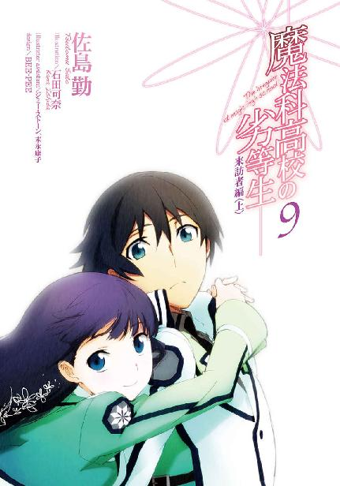
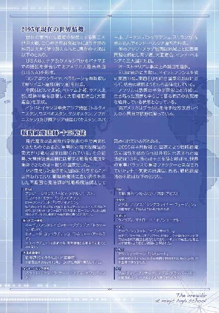
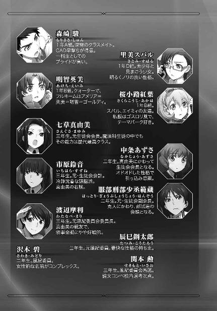

| 魔法科高校の劣等生(9) 来訪者編〈上〉 (電撃文庫) | |
| 佐島 勤 | |
| 株式会社KADOKAWA (2016) | |


本書（電子版）に掲載されているコンテンツ（ソフトウェア／プログラム／データ／情報を含む）の著作権およびその他の権利は、すべて株式会社ＫＡＤＯＫＡＷＡおよび正当な権利を有する第三者に帰属しています。
法律の定めがある場合または権利者の明示的な承諾がある場合を除き、これらのコンテンツを複製・転載、改変・編集、翻案・翻訳、放送・出版、公衆送信（送信可能化を含む）・再配信、販売・頒布、貸与等に使用することはできません。

［０］
北アメリカ合衆国（アメリカ合衆国の北ではなく、北アメリカ大陸を版図とする合衆国）テキサス州ダラス郊外、ダラス国立加速器研究所。全長三十キロメートルの線形加速器で今、余剰次元理論に基づくマイクロブラックホール生成・蒸発実験が行われようとしていた。
準備は二年前に完了していながら、そのリスクが読み切れない事を理由に中々ゴーサインが出なかったこの実験の背中を押したのは、先月末に極東で起こった事件だった。
朝鮮半島南端において軍事都市と艦隊を一瞬で消滅させた大爆発。それは単なる事件ではなく、大事件と表現しても過言ではない。
破壊の規模の故ではなく、推定される破壊の手段の故に。
国防総省の科学者チームは、激しい議論の結果、この爆発を質量のエネルギー変換によるものと結論付けた。三年前には一部の学者による仮説に過ぎなかったものが、今回は科学者たちの一致した見解となった。
推定される爆発の規模から逆算して、エネルギー化された質量は約一キログラム。──これ程の大質量を反応させた観測例は無いにしても、対消滅自体は実験装置を使って詳しく観測されどんな現象が起こるか判明している。
ところが、偵察衛星が記録した今回の「大爆発」のデータは、実験施設において観測された対消滅反応のデータと一致した特徴を示さなかった。核分裂や核融合の際に生じる残留物質も計測されていない。その意味するところは、科学技術によるものであれ魔法技術によるものであれ、自分たちが知らない方法で高エネルギー爆発を引き起こす技術を実用化した者がいるということに他ならない。
この帰結は、ＵＳＮＡ首脳部に焦りをもたらした。
仮にそれが魔法によるものであるなら、同じことができないのは仕方がない。体系化が進んでいるといっても、魔法はやはり属人的なものだからだ。
だが一体どういう仕組みで引き起こされたものなのかさえ分からないとなれば、対抗策の検討すらできない。一度その牙が自分に向けられれば、為すがままに蹂躙されるしかない。
それはまさに、悪夢だった。
あの爆発が何だったのか、質量・エネルギー変換のシステムに関する手掛かりだけでも摑めないか......それがマイクロブラックホール生成・蒸発実験実行の最後の一押しとなった。
ブラックホールの蒸発による質量・エネルギー変換で観測される現象については、理論的に細かく推定されている。マイクロブラックホール実験は本来、この仮説を検証する為のものだ。そして今回の「大爆発」で観測されたデータは理論的に予想されているものと一致していない。
しかしホーキング輻射は対消滅に比べて観測が不十分な現象であり、理論的予測に収まらない観測データが得られる可能性がある、とＵＳＮＡの科学者たちは考えたのである。
もしかしたら「大爆発」と一致する特徴が観測されるかもしれない。その可能性も、ゼロではない。
そんな儚い根拠で危険な実験にゴーサインを出す程、この時のＵＳＮＡ首脳部は精神的に追い詰められていた。
未知のリスクを、無視してしまう程に。
その報いが彼らに、否、世界に襲い掛かろうとしていた。
災禍は誰にも気づかれぬまま、ひっそりと忍び寄っていた。
［１］
西暦二〇九五年も残すところ一ヶ月となった。
思えば、目まぐるしい一年だった。この一年を振り返って、達也はしみじみそう思った。四月にテロリスト、八月に国際犯罪シンジケート、十月には外国の侵略と戦ったのだ。激動、というにも程がある。
だが達也にはまだ、今年一年をゆっくり振り返る余裕は無い。それは「まだ一ヶ月ある。何事も終わってみなければ分からない」という処世訓的な意味で、ではなく、もっと差し迫って現実的な理由で。
「......ぐぁーっ！ 訳分かんねぇ！」
「五月蝿い！ 叫ぶな！ 鬱陶しい！」
「レ、レオくんもエリカちゃんも、落ち着いて......」
それは中・高・大を問わず、およそ学生と名のつく者にとって忌まわしき天敵。避けられぬ障碍。乗り越えなければならない壁。──もうすぐ定期試験がやって来るのだ。
いつものメンバーが集まっているのは雫の家──と言うか、屋敷である。
達也、深雪、エリカ、レオ、美月、幹比古、ほのか、雫、一人も欠けることなく顔を揃えたのは、定期試験に備えた勉強会の為だった。
まあ勉強会と言っても、筆記試験に限って言えばこのメンバーのほとんどが成績優秀者。唯一の例外と言えるレオも、単に平凡というだけで赤点を心配する必要は無い。赤点を心配しなければならないのはむしろ実技の方だが、こちらは勉強会の守備範囲外だ。
時々奇声が上がるものの、概ね和やかなお茶会の雰囲気だった。──この、雫の爆弾発言までは。
「えっ？ 雫、もう一回言ってくれない？」
「実はアメリカに留学することになった」
慌てて訊き返したほのかに、一言一句変わらぬ答えを全く同じ口調で雫は繰り返した。
「聞いてないよ!?」
「ごめん、昨日まで口止めされてたから」
血相を変えて詰め寄るほのかに、この時ばかりは誰の目にも分かる、すまなさそうな表情で雫が頭を下げる。その様子に本当は雫ももっと早く打ち明けたかったのだと否が応でも理解させられて、ほのかはそれ以上何も言えなくなった。
「でもさ、留学なんてできたの？」
エリカのこの発言は、雫の（語）学力を疑ってのものではない。
この時代、ハイレベルな魔法師は、遺伝子の流出＝軍事資源の流出を避ける為に、政府によって海外渡航を非公式かつ実質的に制限されている。
ＵＳＮＡは表面上同盟国だが、西太平洋地域における潜在的競合国。そのアメリカへ留学など、普通に考えれば認められるものではない。
「ん、何でか、許可が下りた。お父さんが言うには交換留学だから、らしいけど」
「交換留学だったら何故ＯＫが出るんでしょう？」
「さあ？」
美月の質問はもっともなものであり、一緒になって首を傾げている雫を責めるのは酷というものだろう。交換留学だから構わないというロジックは達也にもさっぱり理解できなかった。
「期間は？ いつ出発するんだ？」
無理に理解しようとしても、情報がまるで足りていない。達也は無駄な思考を放棄して、当面の事を考えることにした。
「年が明けてすぐに。期間は三ヶ月」
「三ヶ月なんだ......ビックリさせないでよ」
雫の答えを聞いて、ほのかが胸を撫で下ろした。どうやら彼女は、もっと長期間の留学だと考えていたようだ。
達也の「常識」では、三ヶ月でも長過ぎる（政府がよく認めたな、という意味で）くらいだったのだが。
しかし、それもまたどうでもいい事であり。
「じゃあ送別会をしなきゃな」
達也は「当面の事」を友人たちに提案した。
◇ ◇ ◇
定期試験も無事終わり、今日は十二月二十四日、土曜日。二学期最後の日であり、同時にクリスマス・イブでもある。
三度目の世界大戦を経た今も、日本人は相変わらず宗教に対して無頓着だ。それはきっと無宗教という意味ではなく、潜在意識下において一神教の絶対神すらも神々の一柱として認識しているということなのだろう。だから正月もクリスマスも、さして変わらぬ感覚で祝う。
街はクリスマス一色。
クリスマス商戦一色、と言い換えた方がもしかしたら正確かもしれないが、そんな風に斜に構えて一人あぶれている方が余程、愚かしいというもの。誰にも相手をしてもらえないというならともかく、可愛い（！）女の子に囲まれていながら天の邪鬼を気取って、楽しんでいる友人たちに水を差すのは単なるバカのやることだ。（もちろん、一般的には男性に当てはまることで、女の子であれば「カッコイイ男の子に囲まれて」と言うべきかもしれない）
そう......例え「送別会」のはずなのに、開催日をわざわざ十二月二十四日に持って来て、目の前には大きな生クリームのホールケーキが置かれていて、ケーキの上には「MERRY XMAS」と書かれたホワイトチョコレートの板が飾られていても、それを「おかしい」などと言ってはならないのである。......そもそもこの店の流儀に従えば「XMAS」ではなく「WEIHNACHTEN」のはずだが、これもまあ、ご愛嬌というべきか。
「お兄様、何か気掛かりなことでも？」
制服なのに艶やかにドレスアップしているような華をふりまく妹に、達也は「何でもないよ」と首を振った。
そう。何でもないこと、でなければならない。主賓に不快感を与えるようなことがあってはならない。今日の彼は、もてなす側なのだから。
「飲み物は行き渡った？ じゃあ、いささか送別会の趣旨とは異なるけど、折角ケーキも用意してもらったことだし、乾杯はこのフレーズで行こうか......メリー・クリスマス」
「メリー・クリスマス！」
落ち着いた声で乾杯の音頭をとった達也に、はっちゃけた歓声で応えて、友人たちはグラスを高く突き上げた。
喫茶店「アイネ・ブリーゼ」の入り口には「本日貸切」の札が掛かっていた。
◇ ◇ ◇
太平洋を隔てた北米大陸中部では、まだクリスマスイブの前の夜。そろそろ日付が二十四日に変わろうとしているところだ。
クリスマスを単なるイベントの一つと捉えている者が大多数を占める日本と比べて、二十年の長きに渡る戦争を経た後でも、あるいは戦争を経た後だからこそ、アメリカ人たちは、戦後新たに「アメリカ人」になった人々も含めて、遥かに真摯に、敬虔に、あるいは熱心に、クリスマスを迎える。人々は明日のクリスマスイブに備えて、早目に、ぐっすりと眠っている──はずだった。
ところがそんなクリスマスイブの前日深夜、ＵＳＮＡ南部有数の大都市、テキサス州ダラスの街角に暗躍する影があった。
ビルの屋上から屋上へ、跳び移って行く人の影。
そして、その不審者を空中から包囲する複数の人々。まだ普及が始まったばかりの飛行魔法特化型ＣＡＤを使用しているところを見ると、警察、あるいは軍の魔法師か。
「止まりなさい、アルフレッド・フォーマルハウト中尉！ 最早逃げ切れないのは分かっているはずです！」
逃走者の正面に、目の周りを覆う仮面を着けた小柄な人影が立ち塞がる。
投降を呼びかける、甲高い少女の声。その小さな身体に何を見たのか逃走者、アルフレッド・フォーマルハウトはピタリと足を止めた。
「......一体どうしたんですか、フレディ。一等星のコードを与えられた貴方が、なぜ隊を脱走したりしたんですか？」
居丈高な語調から一転、その声に相応しいとも言える、不安と戸惑いを含んだ少し子供っぽい口調で仮面の少女が訊ねた。
「............」
しかし、答えは返らない。
「この街で起きている連続焼殺事件も、貴方のパイロキネシスによるもの、と言う者がいます。まさか、そんなことはしていませんよね？」
「............」
「フレディ、答えて下さい！」
答えは、言葉以外で返って来た。
少女が咄嗟に、飛び退った。
肩に巻いていたストールを残して。
大きく広がり少女の身体を隠したストールが、何の火種も無く燃え上がり、燃え尽きる。
パイロキネシス──発火念力。
体系化された現代魔法ではなく、かつて超能力と呼ばれた属人的異能力。
少女が紫黒色の制服の上にストールを纏っていたのは、そして男を包囲する者たちが全員、思い思いにケープやマントといった脱ぎやすい防寒具を身に着けているのは、本来の用途、寒さを防ぐ為ではなく、視線をキーとして発動するこの男の能力から身を守る為だった。
ストールの炎が消えると同時に、男の周りから一切の光が消えた。
対象を中心とする一定の相対距離で光の進行方向を逆転させることで、外界から光が入らない、完全な闇の中に閉じ込める領域魔法「ミラー・ケージ」。
包囲者の一人が発動した、視線を発動キーとする異能を封じ込める為の防御術式。
「フォーマルハウト中尉、連邦軍刑法特別条項に基づくスターズ総隊長の権限により、貴方を処断します！」
悲鳴の様な、宣告。
別の魔法で闇の檻から動けないよう拘束されたフォーマルハウト中尉に対して、仮面の少女、スターズ総隊長アンジー・シリウス少佐はサプレッサーのついた自動拳銃を向けた。
強力な情報強化により一切の魔法干渉が無効化された銃弾は、無明結界の中に囚われたフォーマルハウト中尉の心臓を一発で貫いた。
◇ ◇ ◇
送別会、と言っても春になれば再会できると分かっている旅立ち、しかも自分たちには普通なら認められない海外留学となれば、寂しさより興味が勝るのも仕方の無いことかもしれない。
「ねっ、留学先はアメリカの何処？」
「バークレー」
エリカの質問に対する雫の答えは愛想のない地名の一単語だったが、これは雫が不愉快に感じているからではなく、彼女の個性だ。
「ボストンじゃないのね」
日本人魔法師の間には、アメリカの現代魔法研究の中心地はボストンという認識が根強くある。深雪のこの発言も、そういう背景から発するものだった。
「東海岸は雰囲気が良くないらしくて」
深雪の質問に対する雫の回答は、穏やかならざるものだった。
「ああ、『人間主義者』が騒いでるんだっけ。最近そういうニュースを良く見るよね」
雫の回答に幹比古が同調する。
「魔女狩りの次は『魔法師狩り』かよ。歴史は繰り返すって言うけど、バカげた話だよな」
レオが冷めた声で吐き捨てると、
「全くの繰り返しってわけでも無いんじゃないか。十七世紀の魔女狩りの背景に何があったのかは分からないが、ここ最近の『魔法師狩り』は新白人主義と根が同じみたいだからな」
宥めるような口調で達也がフォローした。
「だがまあ確かに、東海岸は避けた方がいいかもしれない」
フォローと言っても達也のセリフは「魔法師狩り」を弁護するものではなかったが。
「それは存じませんでした」
兄のセリフに合いの手を入れながら、深雪が眼差しで解説を求める。妹から寄せられたリクエストに、達也はすぐさま応えた。
「活動団体のメンバーリストを眺めていると結構高い確率で同じ名前が見つかるからね。メンバーのリスト自体、表で出回っている物じゃないから知らなくても無理はないよ」
「達也くんの話の方がよっぽど犯罪くさいんですけど......暗い話はヤメヤメ」
わざとおどけて首を振ったエリカに、達也と深雪は苦笑いを浮かべて頷いた。
確かに少し、場にそぐわないキナ臭い話だったと自覚したのである。
「代わりに来る子の事は分かっているの？」
雰囲気を変える責任を感じたのか、深雪の話題転換は少し唐突なものだった。
「代わり？」
「交換留学なのよね？」
案の定、一度ではピンと来なかったようだが、深雪に重ねて訊ねられ、雫は「ああ」という表情を浮かべた。──相変わらず、分かり難い表情の変化だったが。
「同い年の女の子らしいよ」
「それ以上のことは分からないか」
「うん」
それだけ？ という顔が並ぶ中で、達也が笑いながら訊ねると、雫は当然とばかり頷いた。
「......そうですよね。自分の代わりにどんな子が来るのか、いくら気になっても教えてくれる相手がいませんものね」
美月がそう呟いて、この話題はそれきりになった。
今日送別会を開いていることからして既に分かっていることだが、ここに集まっている八人が八人とも、他にクリスマスイブの予定が無い。雫やエリカや幹比古に家の方で予定が無いというのは意外な気もするが、北山家も千葉家も吉田家も大人向けのパーティが催されていて、高校一年生の子供が出る幕は無かったのだ。──親たちの思惑は別にして。
彼らも夜通し騒いで友情をいっそう深めるという青春の誘惑に駆られないでも無かったが、あいにく制服のままでは真夜中まで遊んでいるわけにも行かない。
「何時までも粘っているとマスターに悪いし」
無邪気、を装った邪気だらけのセリフでマスターを沈没させて（誰が言ったのかはあえて明らかにしない）、八人は家路についた。
ほのかが雫と同じ電車に乗ったのは、雫の家に泊まるからだろう。魔法科高校では珍しくもない話だが、ほのかも両親と縁が薄いようだ。
エリカ、レオ、美月、幹比古は一人ずつ別々の車輌に乗り込んだ。お互い、少しくらいはハプニングの起こる可能性を期待しないでもない様子だったが、四人ともまだその段階ではなかったと見える。
そして達也と深雪はハプニングなど起こるはずもなく、二人乗りのキャビネットに仲良く隣り合わせで家に帰った。キャビネットの中は建前上プライバシー空間、とは言うものの、「壁に耳あり」という諺を達也は忘れたことがない。込み入った話をする時はいつも固有名詞をぼかしている。それは深雪も弁えており、何かを言いたげな雰囲気を漂わせながら、実際に話題を振って来たのは自宅の敷居をまたいで居間に落ち着いた後だった。
「今回の雫の留学、わたしにはどうにも奇妙な話に思えるのですが」
お互い部屋着に着替え、二人分のコーヒーを用意してソファに並んで腰掛けてから、深雪がそう切り出した。
「奇妙......そうだね」
コーヒーカップから口を離した達也に無言で続きを促されて、深雪は躊躇いがちに自らが思う疑問点を並べた。
「まず雫ほどの魔法資質を持ちながら留学が認められた、という点が不自然です。先程までは魔法を学ぶ者としての留学ではなく、大実業家の娘としての留学かと納得しておりましたが、それならば代わりに留学してくる相手のことを知らないというのはおかしな話です。考えてみれば、この時期にいきなり留学の話が持ち上がるというのも、裏があるような気がしてなりません。何だかまるで......」
「俺たちに探りを入れる為の裏工作の様な気がする？ 叔母上によれば、俺たちは容疑者らしいからね」
達也は微かに笑って、他人事のような口調で呟いた。
「マテリアル・バースト。やはり、放ってはおけないのだろうな」
自分が言い淀んだセリフがそっくり兄の口から語られるのを聞いて、深雪は目を丸くすると共に、何処か安堵したような笑みを浮かべた。
「そうですか......お兄様も、そうお考えなのですね？」
「留学生が来るというだけならともかく、叔母上の忠告を合わせて考えれば、偶然と考えるのは能天気すぎるだろう」
達也と真夜の一対一の会談の内容は、深雪にもその日の内に教えてある。自分たちが何を疑われているのかということも、誰に疑われているのかということも。
「ではやはり、スターズが......？」
「こうなると、少佐たちとの接触を禁じられているのが痛いな」
達也は事前の許可なく戦略級魔法を使用した罰として、当分の間、独立魔装大隊とのコンタクトを真夜に禁じられている。大人しく言う事を聞くつもりなどサラサラないが、リスクに見合うリターンがない限り、あえて言いつけに背くつもりもなかった。
「叔母様にお訊ねしても......教えては下さらないでしょうね」
「そもそも留学の話が実現しようとしている時点で、叔母上がこの件を黙認しているのは明白だよ」
四葉は現十師族で七草と主導的地位を争う地位にある。優秀な魔法資質を持つ魔法科高校生の留学というイレギュラーな事態を知らないはずがない。
「ただ逆に言えば、俺たちのデメリットになるばかりの話ではない、ということだと思う。探りを入れに来るだけの相手を、叔母上が見逃すはずもない。多分、アメリカでも何かトラブルが起こっているんだろう。俺たちにその尻尾を摑め、と叔母上は言いたいんじゃないかな」
達也の表情は苦笑いというより諦めの笑い顔に近かった。
「まだそうと決まったわけでもありませんし......先走りすぎても良いことはないかと」
「そうだな、深雪。お前の言うとおりだ」
口ではそう言いながら、慰めた方も慰められた方も、それが気休めでしかないことを確信していた。
◇ ◇ ◇
スターズ専用機のクラスターファンＶＴＯＬで基地に帰投し、統合参謀本部に暗号通信で報告を済ませた後、アンジー・シリウスことアンジェリーナ・シリウス少佐は制服のまま自室のベッドにゴロリと寝転がった。
そのまま寝返りを打ち、うつ伏せに、顔を枕に押し付ける。
処刑任務は、何回経験しても慣れない。最初の頃の様に任務終了後、吐いてしまうことは無くなったものの、それは心の痛みに身体が慣れたからに過ぎない。
心の痛みは、むしろ大きくなっていた。
アメリカ人の魔法師、ＵＳＮＡ軍統合参謀本部直属魔法師部隊スターズのメンバー、三重の意味で同胞である隊員を、この手で処刑する。
それが総隊長、シリウスのコードを与えられた者の任務だと聞いた時は、実感が無かった。
名誉に舞い上がって、解っていなかったのだ。同胞を殺す、ということの意味を。
もう一度寝返りを打って、片腕で目を光からかばう。彼女はまだ、部屋の照明を落としてすらいなかった。
不意に、呼び鈴の音が聞こえた。シリウス少佐は口元に苦笑いを浮かべた。
どうやら今夜も、お節介な部下が様子を見に来たらしい。
スターズは十二の部隊から成り、形式上各隊長を総隊長が統括している。彼女の部下は自分の部隊の面倒を見なければならない隊長だ。
彼女にお節介を焼いている暇など無いはずなのに──
「どうぞ」
ベッドから起き上がり、リモコンで鍵を開けて、シリウス少佐はドアホンのマイクに向かい短く答えた。
「失礼しますよ、総隊長」
入って来たのは予想どおりの人物。スターズのナンバー・ツーで、彼女が不在の際は総隊長を代行兼務する第一隊の隊長、ベンジャミン・カノープス少佐だった。
スターズは地位と階級がリンクしていない、軍組織としては変則的な編制になっている。さすがに隊長の地位が総隊長の地位より高いということは今まで無かったが、総隊長と隊長の階級が同じというのは珍しくない。
現在も十二人の隊長の内、六人が大尉で残りの六人が総隊長と同階級の少佐だ。
もっともシリウス少佐はそのことに不満を懐くどころか、自分よりずっと年長のカノープスと同じ階級であることを、逆に気に病んでいた。
「差入れです」
ベンジャミン・カノープス少佐は如何にも高級士官という外見の、叩き上げの兵士とも民間のビジネスマンとも異なる、剛健でありながらスマートな雰囲気を身に纏う四十前後の男性だ。
「ベン、ありがとうございます」
サイドテーブルに置かれた、湯気を上げるハニー・ミルク。自分の父親の様な年齢の部下が示す気遣いを、シリウス少佐は素直に受け取った。
作戦行動中に使用する軍の備品のタンブラーではなく、魔法瓶から市販のお洒落なマグカップに注がれた蜂蜜入りホットミルクに、そっと口をつける。
暖かさと甘味が、心の痛みを癒してくれるような気がした。
「どういたしまして。ところで総隊長、もう準備は終わっているんですか？」
カノープス少佐は部屋の隅に積み上げられた個人用のコンテナを見て、そう訊ねた。
「ええ、大体は」
「さすがに手際が良いですね」
「これでも女の子ですから」
自分の娘の様な年頃の上官の答えに、実際に彼女より二歳年下の娘を持つカノープス少佐は肩をすくめた。
「女の子だからというのは余り関係ないような気がしますが......日本人の血ですかね？」
「日本人だから几帳面というのは昔の話だと思いますよ」
自身に流れる四分の一の血を言われて、今度はシリウス少佐が肩をすくめる番だった。
別に嫌がっているわけではない。
人種を気にするような人間は、少なくともこのスターズではやって行けない。
「それはまあ、ともかくとして......しばらく因果な任務のことは忘れて、のんびり羽を伸ばして下さい」
「休暇じゃなくて特別任務なんですけど......」
お気楽なカノープス少佐の唆しに、シリウス少佐は唇を尖らせた。
その表情は、年相応な少女のものだった。
「むしろ憂鬱です。容疑者が戦略級魔法師かどうか探り出せなんて。二人の容疑者のどちらかが、ということならまだしも、二人とも該当者ではない可能性も低くないのでしょう？ 何故私が不慣れな潜入捜査など......年齢の制約があるにせよ、それでも、専門の訓練を受けている者がたくさんいるでしょうに」
シリウス少佐に与えられた任務は、十月末に極東で観測された戦略級魔法によるものと思しき大爆発の実行者、即ち術者の正体を探ること。情報部が絞り込んだ五十一人の容疑者の内の二人が東京の高校に通う学生だった為に、同じ年頃（というか偶々同じ年齢）のシリウス少佐に潜入捜査が命じられたのだった。
「まあまあ」
ため息をつく上官を宥めるような仕草で、カノープス少佐は両手を二度前後して見せた。
「それだけ一筋縄じゃ行かない相手だと参謀本部は考えているんでしょう。ターゲットがこちらの推測したとおりの存在なら、戦略核を凌駕する危険な魔法の使い手。しかも我々の調査に正体を摑ませなかった相手。参謀本部が人選に当たり諜報員としての訓練よりも戦闘力を優先したのも理解できないことではありません」
「それは分かっていますけど」
「容疑者が高校生だから、同じ高校生として接触するというプランは少々安直なものだと思いますが、調査に当たるのは総隊長だけではありませんから」
当然のことだが、シリウス少佐が容疑者と接触する裏側で多くの専門家が側面調査やバックアップに当たる。スターズからも惑星級の魔法師が少佐の傍らで直接の補佐につく予定になっている。それを彼女が知らないはずもなかった。
「それも分かっていますけど」
故に、シリウス少佐がこう答えたのもまた当然と言える。
「こう考えては如何でしょう。総隊長の役目は、容疑者に接触して揺さぶりをかけることだと」
「まあ......妥当なところでしょうね。私の諜報技能はほとんど素人同然ですから」
「だったら余計気軽に、楽しまなければ損だと思いますよ。その方が相手も隙を見せて来ると思いますし」
「はぁ......そうですね。ベンの言うとおりかもしれません」
大きくため息をついて、シリウス少佐はマグカップをサイドテーブルに戻し、カノープス少佐の正面に立ち上がった。
「ベン、留守中のことはよろしくお願いします。残りの脱走者の処分も終わっていないこの状況で、本来私が負うべき責務を貴方に背負わせるのは心苦しいのですが......私の代わりをお願いできるのは貴方しかいませんので」
「お任せ下さい、総隊長。まだ少し早いですが、いってらっしゃい」
慈しみのこもった笑顔で敬礼するカノープス少佐に、少女は感謝の笑顔で答礼した。
［２］
西暦二〇九六年の元旦を、達也と深雪はいつもどおり二人で迎えた。
父親は今年も元愛人宅、今ではセカンドハウスで新年を迎えている。達也たちにとっても、この方が色々気まずい思いをしなくて済むので文句は無かった。
達也も深雪も、正月だからといって自堕落な生活には縁が無い。登校時間と然程変わらぬ時刻、玄関で待っていた達也は「お待たせしました」という深雪の声に目を上げた。
光沢のある赤い生地に白と薄紅で図案化した牡丹を描いた振袖を身にまとい、深雪が淑やかに階段を下りてくる。
白粉など必要の無い白皙の面に、ただ一箇所、色鮮やかな紅を差した唇。
結い上げた髪に揺れる枝垂れかんざしが少し子どもっぽい感じだが、それがかえって大人びた美貌の中で年相応の可愛らしさを醸し出すチャームポイントになっていた。
目を惹くのは生来の美貌ばかりではない。
昔ながらの女性和装は胸を圧迫するので、最近は立体的に仕立てられた着物も作られているが、深雪は伝統的な振袖で折れそうに細い腰とボリュームを増した胸のラインを表現しつつ、襟元は慎ましく隠すという着こなしの妙を見せている。
世界一可憐な──と達也は真剣に思っている──妹の艶姿に、彼は兄として誇らしさを感じていた。
「うん、とても綺麗だ」
履物に足を置いた妹を視界の正面に据えて、達也が臆面も無く称賛する。
深雪の頰がたちまち朱に染まった。
「もう、お兄様ったら......からかわないでください」
恥じらいながらも視線を外さず、上目遣いに抗議する様は、免疫の無い男なら悶え死にそうな破壊力があった。
「からかってなどいないんだが......じゃあ、行こうか」
それをあっさり受け止める達也は、さすが、伊達に深雪の兄を十六年（正確には十五年九ヶ月）も務めていないと言うべきだろう。
門の前には無人運転のコミューターが停まっていた。ただ、無人運転ではあっても無人ではない。四人乗りコミューターの後部座席には一人の成人男性と一人の成人女性が座っていた。
「明けましておめでとうございます、師匠」
「明けましておめでとうございます、九重先生。本年もよろしくお願い致します」
手短に挨拶した達也と丁寧に腰を折った深雪に、八雲はシートに座ったまま嬉しそうな笑顔で応えた。
「いやぁ、今日はまた一段と艶やかだねぇ。吉祥天もかくやの麗しさだ。今日の深雪くんを目にしたならば、須弥山の天女も羞恥に身を隠してしまうかもしれないね」
ある意味、実に八雲らしい反応だった。
「先生......もっと他に言うべきことがお有りなのでは？」
ツッコミは隣に座る女性から入った。
セリフを取られた形となった達也は、八雲がツッコミに応える前に、その女性に向かって軽く頭を下げた。
「小野先生、明けましておめでとうございます。しかしよろしいのですか。師匠と一緒のところを見られて？」
「おめでとう、司波君。新年早々、嫌なことを訊くのね」
達也は割りと本気で心配したつもりだったが、どうやら遥には嫌味に取られてしまったようだ。日頃の行いに色々と思い当たる節がある達也は「誤解されても仕方が無いかもな」と心の中で肩をすくめた。
「先生と会ったのは偶然よ。今日、私は貴方たちの引率に来たの」
「なるほど、そういう設定ですか。高校生に引率というのは、いささか苦しいと思いますが......しかしそれなら『先生』という敬称はまずいのでは？」
達也の指摘に遥は後ろのシートで顔を顰めた。
確かに今時、高校生にもなって、日のある内に初詣へ行くくらいで大人の付き添いを要するということは無い。
言い訳にするなら「引率」ではなく、本当に単なる「同行」だろう。
それに、偶然会った相手に、しかも相手が教職者でもないのに、「先生」という敬称は奇妙に思われてしまう危険性がある。
「それは道々考えることとして、そろそろ参りませんか？」
深雪がそう提案したのは、達也がコミューターのドアを開いた後だった。考え込む遥を放置して乗車する深雪に手を貸し、ドアを閉めて反対側の、有人運転車ならドライバーが座るシートに乗り込む。達也がドアをロックしたのと同時にコミューターは駅へ向かって発進した。
たいそうな注目を浴びながら駅で電車に乗り換え、四人乗りのキャビネットを降りて待ち合わせ場所まで、ここでも大勢の注目を集めながら徒歩五分。
「わっ、深雪さん、キレイですねぇ！」
そして待ち合わせ場所に着いた達也と深雪を出迎えた第一声が、これだった。ロングワンピースの上からファー付きのケープコートを羽織った美月がうっとりした目を深雪に向けている。隣の達也が目に入っているのか疑わしい熱視線だ。
「明けましておめでとうございます、達也さん。良くお似合いです。少し意外ですけど」
深雪と同じ振袖姿のほのかは、クラスメイトの艶姿に圧倒されたのか最初はやや怯んだ様子だったが、地味ながら普段とは雰囲気の違う達也を見て良い具合に意識が逸れたのか、すぐにお正月らしい笑顔を取り戻していた。
「明けましておめでとう。ほのかも良く似合っているよ」
実際にほのかの振袖姿は良く似合っていたので、達也にお世辞を口にしているという意識は無かった。
嬉しそうに笑顔を向けるほのかに笑みを返して、達也は自分の衣装を見下ろした。
「でも意外、ってことは、やっぱり少し違和感があるのだろうか？」
「そんなこたぁないんじゃねえの？ 達也、良く似合っているぜ。何処の若頭かって貫禄だ」
「俺はヤクザか」
本気なのかからかっているのか判別のつきにくい口調で合いの手を入れてきたレオは、普段着と思しきジャケット姿だった。
初詣の待ち合わせをしていたのは、美月、ほのか、レオの三人。エリカと幹比古は大勢の門人を抱える家の手伝いで抜け出せず、雫はいよいよ留学が間近に迫ったということもあり、父親の仕事関係でやはり抜けて来れなかった。
「別に、ヤクザには見えないけど、羽織袴がそこまで様になる高校生は珍しい、ってことだけは確かだと思うわ」
「ヤクザ者というより、与力か同心のイメージだね」
一歩遅れてついて来た遥と八雲が言うように、今日の達也の格好は羽織袴に雪駄の純和風だった。そしてほのかとレオが言うとおり、この格好が実にはまっていた。いっそ、腰に大小と、ついでに十手を差していないのが寂しく感じるほどだ。
「あれっ、遥ちゃん。明けましてオメデトーございます」
「明けましておめでとうございます、小野先生。......達也さん、こちらの方は？」
砕けた年賀を遥に述べたレオに続いて型通りの口上を述べた後、ほのかは八雲に目を向けながら遠慮がちに、達也に訊ねた。
「九重寺住職、八雲和尚。俺たちにはもしかしたら、忍術使い・九重八雲師の方が通りが良いかな？ 俺の体術の先生だ」
達也の紹介を聞いて、ほのかと美月が目を丸くした。ほのかは八雲の名前を知っているだろうと思っていたが、美月が八雲のことを知っていたのは達也にとって予想外だった。
「なるほど、だから日枝神社にしようって話になったんだな」
そして思わぬ方向に知識を示したレオに、達也はビックリしてしまった。それは決して、レオを見くびっていたわけではない。
「だからって？」
遥が全く理解できていないことから見ても、およそ一般的な知識ではないのだから。
「んっ？ 和尚ってことは、天台宗の坊さんなんだろ？ 山王信仰と台密は切っても切れない関係じゃんか」
何故そんなことを訊くんだ？ と言わんばかりの顔で簡潔に語ったレオの説明に、遥の頭上に浮かぶ疑問符はかえってその数を増していた。
「君、若いのに博識だねぇ。西城レオンハルトくん、だよね？」
そんな遥を置いてきぼりにして、八雲が楽しそうに、レオへ話しかける。
「あれっ？ オレのこと、知ってんですか？」
初対面の相手に対するものとしては至極真っ当な問い掛けをレオは口にした。
「九校戦の記録映像を見せてもらったからね」
対する八雲の返答も、何の捻りもない真っ当なものだったが、レオはそれを聞いて反射的に顔を顰めた。おそらくあの、時代と場所を間違えたようなマント姿を思い出したのだろう。どうやらあれは彼にとって、忘れたい記憶であるようだった。
ひとまずお互いの紹介を終わらせて、同級生五人と坊主頭の男性（ただし袈裟は着ていない。着物は普通の男物だ）と若い女性の七人連れはゾロゾロと本殿へ向けて歩き出した。──遥には幸いなことに、同行の経緯を聞かれることは無かった。
参道の両側にズラッと露店が並んでいる光景は百年前とほとんど変わっていない。だがこれも、世界的な食糧危機が深刻化した時代には姿を消していた風景だ。当時のことを知っている年配の人々には感慨深い景色だが、あいにくと達也たちはその様な感傷に縁が無い。
特に寄り道をすることもなく、長い階段を上って神門をくぐり、拝殿前の中庭に入る。そこで達也は、不意に視線を感じた。
不躾にジロジロ見る視線ではなく、チラチラと窺い見るような視線。
「司波君、心当たりは？」
「ありません」
「異人さんには達也くんの格好が珍しいのかねぇ？」
中々上手にさりげなさを装っているが、遥と八雲の目を欺けるものではない。エレメンタル・サイトを使っていない状態の達也が気づいたのだから、遥はともかく八雲が気づくのは当然だった。
八雲が「異人さん」と言った様に、その相手は典型的な金髪碧眼、そして、若い女性だった。ただ今の時代、だからといって外国籍だと決まったわけではない。それに、その少女の面立ちには何処と無く、日本人的な印象が有った。
年の頃は達也たちと同じくらいか。コーカソイドとモンゴロイドの人種的な差異を考えれば達也たちより年下と見ることもできるが、どうやら日本人の血がそれ程薄くも無く混じっている所から判断して、ずっと年下ということは無いだろう、と達也は考えた。
「お兄様、何をご覧になっているのですか？」
達也がその少女を観察したのは一秒に満たない時間だったが、深雪が気づくにはそれで十分だった。
兄の視線の残影をたどり、「まあっ！」と言わんばかりにまなじりを吊り上げる。
「......綺麗な子ですね」
内心で何を考えているのか丸分かりの平坦な声で深雪が呟いた。
その女の子は確かに、深雪が「綺麗」と称賛しても嫌味にならない美少女だった。
色鮮やかな髪と瞳。ある意味、深雪と対照的な美貌だ。
しかし達也は決してそんなつもりで少女を観察していたのではない。
彼は助け舟を求めて八雲に視線を投げ──ニヤニヤと年甲斐の無い笑みを刻む口元を見て、自力で何とかするしかないと悟った。
真正面から妹の瞳をのぞき込み、淡々とした口調で、達也は深雪の呟きに応えた。
「お前ほどでは無いけどな」
「......いつもいつも、その手で誤魔化せるとは思わないでください」
字面だけ見れば手強い反撃だが、頰を朱に染め目を泳がせながら浮ついた声で言われてもあまり怖さは無い。
「誤魔化してなどいないさ。俺は本心からそう思っているし、そういうつもりで彼女を見ていたわけでもない」
「もうっ、お兄様ったら！」
プイ、と顔を背けようとして、深雪は達也のセリフに看過できない引っ掛かりを覚えた。
「......彼女に何かご不審でも？」
「不審と言えば......あの格好は不審だが」
今にも苦笑いを漏らしそうな声で達也が答える。その言葉にもう一度金髪碧眼の少女をちらりと見て、深雪は危うく納得してしまいそうになった。
明るいベージュのハーフコートに裾がフリルになったスカート。柄物タイツとロングブーツ。それだけ聞けば何もおかしな所などない。だがハーフコートの丈が股下十センチ程度でスカートの長さも同程度、裾を飾るカラフルなフリルだけが見えているコーディネートとか。靴底がやたらと分厚い膝上までのストレッチブーツと、レース模様で素肌が所々透けて見えるタイツの組み合せとか。フェイク・ファーの縁取りがついた手袋とか。アニマル柄のソフト帽とか。彼女の服装は今の流行りからすると随分ちぐはぐな印象を受ける。まるで戦前のギャル系ファッションを適当に混ぜ合わせたような姿だった。これでは男性の達也が違和感を覚えても不思議はない。
しかし深雪は、そんな表面的なことを本気で気に掛ける兄ではないと知っていた。
「ですが、それだけではありませんよね？」
深雪がさっきとは異なる、強い意思のこもった視線を少女に向けた。
それを察知したのかどうか、少女は何事も無かったような顔で歩き始めた。
達也たちの方へ。
そのまま何も言わずにすれ違い、長い階段へ歩み去る。
すれ違いざま意味ありげな眼差しを投げて来たように見えたのは、決して、達也の錯覚ではなかった。
◇ ◇ ◇
アンジェリーナ・シリウス少佐に与えられた任務は潜入捜査でありながら陽動の側面を強く持っている。その一環としてターゲットの容姿を確認すると同時に自分の姿を相手に見せる為の最初の接触はどうやら上手く行ったようだ。気配を隠して接近したのでは気づかれないのではないかと懸念したのだが、部下の言うとおり杞憂に終わった。ただ簡単に気づかれてしまったことについては、それはそれで釈然としないものがある、と考えながらシリウス少佐は今回の任務で生活拠点となるマンションのドアを開けた。
「お帰りなさい」
同居人はまだ部屋に戻っていないだろう、というシリウス少佐の予想に反して、部屋の中から彼女を出迎える声がした。
「シルヴィ、帰っていたんですか」
わざわざ玄関までやって来た年上の同居人に、少佐は愛称で呼び掛ける。
同居人の名はシルヴィア・マーキュリー・ファースト。シルヴィア以外はコードネームで、スターズ惑星級魔法師「マーキュリー」の第一順位を表している。階級は准尉。年齢は二十五歳。まだ若いながらも「ファースト」のコードを与えられていることから分かるとおり、能力を高く評価されている女性准士官である。シルヴィアは元々は軍人志望ではなく、大学ではジャーナリズムを専攻していた。今回その情報分析技能を買われてシリウス少佐の補佐役に抜擢されたのだった。
「シルヴィ？」
その有能なはずの同居人がシリウス少佐の言葉に応えを返さず、まじまじと彼女のことを見ている。不審に思い少佐が改めて声を掛けると、シルヴィアは凝視する視線はそのままでようやく声を発した。
「リーナ......何です、その格好は」
リーナというのはシリウス少佐の私的な愛称。潜入任務に当たり正体を隠す為に「総隊長」や「少佐」ではなく愛称で呼ぶようにリーナが命じたのだ。シルヴィアも元が自由人気質の女性だった為、階級差と立場の差に拘わらず、すぐフランクな口調に馴染んだ。
今も一応敬語ながら上官に対するものとしては余り相応しくない言葉遣いだったが、リーナの方も全く気にした様子がなかった。
「あっ、これですか？ 不必要に目立たないよう、過去一世紀の日本のファッショングラビアを色々調べてみたんです。結構苦労しました。似合っていますか？」
「......質問に答える前に、一つ訊きたいんですが」
「はい、何でしょう」
シルヴィアは今にもこめかみに手を当てそうな、頭痛を堪えているが如き表情をしていたが、リーナはそれに気づいていないようだった。
「そのブーツ、歩き難くはないですか」
シルヴィアがそう訊ねると、リーナは我が意を得たりとばかり頷いた。
「そうなんですよ。何度も転びそうになりました。日本の女の子はこんなブーツを履いてよく足を挫かないものです」
「同じタイプのブーツを履いた女の子を目にしましたか？」
一つだけのはずの質問が二つ重ねられたが、リーナは特に気にした様子が無かった。
「あれっ、そういえば見た記憶がありませんね」
シルヴィアの表情が、頭痛に加えてため息を堪えるものに変化した。
「リーナ、はっきり言います。そのブーツは流行遅れです」
「えっ!?」
シルヴィアの言葉に目を見開くリーナ。その反応を見て、シルヴィアは苛立ちを爆発させた。
「えっ、じゃありません！ ブーツだけじゃありませんよ。そのタイツもその帽子も流行遅れです。百年なんて遡りすぎです！ それに、そのコーディネイトは極めてちぐはぐです。若い女の子のセンスじゃありません。そんな格好、目立って仕方なかったでしょう」
叱責を受けてリーナが気まずい顔をしているのは、何か心当たりがあったからだろう。実を言えば行く先々で注目を浴びていたことに彼女も気づいていた。ただそれは外国人が珍しいからだろう、と軽く考えていたのである。
「いくらターゲットの注意を引きつけると言っても......関係ない人間の注意まで引いてどうするんですか」
遂に堪えきれなくなったのか、シルヴィアは大きくため息を吐いた。
「総隊長」
口調だけは丁寧な、冷たいセリフ。リーナは背筋に冷や汗が流れる錯覚に襲われた。
「本日、以後の予定はキャンセルしましょう。僭越ながらこのマーキュリーが、日本における最近のファッション動向をじっくりと、分かりやすく、ご説明して差し上げます」
腰に手を当ててシルヴィアがそう宣言する。戦闘力ではシルヴィアを遥かに凌駕するリーナだったが、この言葉には逆らえなかった。
◇ ◇ ◇
短いながらも色々なことがあった冬休みも終わり、今日から三学期。
その「色々なこと」の中には、空港へ雫の見送りに行って、思い掛けない「涙の別れ」に巻き込まれ（主演：ほのか・雫、助演：深雪・美月）途方に暮れたという、（腕力が通用しないという意味で）とてもハードな体験もあったが、これもいつかは「良い思い出」に変わるはずだと達也は信じている。──そう信じ込まなければくじけてしまいそうだった。
Ａ組には今日から雫の代わりにそのまま留学生が来るはずだが、とりあえず達也には他人事だった。深雪と同じクラスになる以上、全く無関係とは行かないだろうが、自分の方から関わる意思も無い。
授業の方はといえば、三学期の初日からいきなりフルタイムのカリキュラム。その一時限目の終わりにＡ組の留学生は早くも噂になっていたが、達也は積極的にアンテナを伸ばすでもなく耳に飛び込んでくる噂話を右から左に聞き流していた。
しかしそういう超然としたスタンスはやはり少数派で、二時限目の後の休み時間には、物見高い友人によって彼も噂話の渦の中に巻き込まれていた。
「何かすっごい美少女なんだって」
興奮気味に、あるいは興奮したふりでしきりに話し掛けてくるエリカを、達也はとうとうあしらいきれなくなった。
「キレーな金髪でさ、上級生まで見に来てるらしいよ」
「エリカは見に行かないのか」
取り敢えず、これだけ熱心に語っているにも関わらず全てが伝聞形、というのが気になったので訊ねてみる。
「あんな人だかりに入って行けないって」
「オメーでも遠慮ってモンを知ってたんだな」
まぜ返すと同時に、レオはサッと頭上に手をかざした。
次の瞬間、音程を外した蛙のような声を発し、喉を押さえて前のめりに身体を折った。
（やられるって分かっているなら余計なことを言わなければ良いだろうに）
丸めたノートで喉に突きを喰らって悶絶するレオを達也が呆れ顔で見下ろす一方、実行犯のエリカは何食わぬ顔で話を続けている。
「あたしは女だからね～。いくら美少女って言われても、押し合い圧し合いの窮屈な思いしてまで見に行きたいとも思わないのよね」
わざわざ見に行くつもりになどなれないという点は達也も全くの同感だったが、好奇心を全面的に助平心へリンクする見解に対しては同じ男性として異議申立ての必要を感じた。
「転校生すら想定していない魔法科高校だからな。そこに留学生が入ってくるとなれば好奇心も湧くだろう。ここ十年以上無かったことじゃないか？」
「以前のことは知らないけど、今回留学生が来たのはここだけじゃないみたいだよ」
そこに口を挿んできたのは、ちょうど幾何準備室から戻って来た幹比古だった。
「第二、第三、第四高校でも短期留学生の受け入れがあったそうだよ。大学の方にも共同研究の名目で何人か来てるらしい。ウチの門人が話してた」
「あっ、大学の方の話はあたしも聞いた。この前の横浜の件で飛行魔法の軍事的有用性が飛び切りのものだって分かって、焦って探りを入れに来たんじゃないかって噂してたな」
古式魔法と現代魔法、分野は違えどそれぞれ大勢の門人を抱える吉田家と千葉家は、入ってくる情報量が個人のレベルとはやはり桁違いだ。今の話からすると、ＵＳＮＡは予想を超えて大がかりに人員を投入している。十一月の時点ではスターズが単独で動いているという話だったが、どうやら事態はもう一段深刻化しているようだ、と達也は考えた。
「じゃあＡ組の留学生もスパイってことか？」
「あんたねぇ......」
悶絶から復活したレオの身も蓋もない問い掛けに、エリカばかりか美月と幹比古も苦い顔をしている。
「レオくん、そういうことは思っていても言わない方が良いのでは......」
「僕たちも同級生として付き合って行かなきゃならないんだから......」
美月と幹比古のダブルスにタジタジとなりながらも、レオは何とか反論を試みた。
「いや、付き合うって、そいつＡ組だろ？ 接点無いんじゃねーの？」
「バカね、Ａ組には深雪がいるじゃないの。何年ぶりになるのか分からない留学生と生徒会副会長よ。留学生が学校に慣れるまで、どういう形にせよ深雪が面倒を見なきゃいかなくなるでしょうし、深雪と関わり合いができればあたしたちも無関係じゃ済まないわよ」
しかしレオの反論は、その場でエリカに一刀両断されてしまった。
積極的に関わりたくないと考えている達也も、内心で「そうだろうなぁ」とため息をついた。
その「関わり」は、思っていたよりも早くできた。いや、予想していた可能性の中で、一番早いものが容赦なく実現した、と言うべきか。
お昼ご飯の待ち合わせをしていた学食。やって来たのは深雪とほのかと、もう一人、金髪碧眼の少女。その少女を見て、驚くまでは行かなかったものの達也は「おやっ？」と思った。
髪の色や瞳の色は聞いていたし、美少女だという話も散々聞かされていた。そもそも美少女というだけなら達也には深雪で耐性がある。彼が意外感を覚えた理由はそんなことではなく、彼女が日枝神社で会った──というか見掛けた、あの少女だったからだ。
「ご同席させてもらって良いかしら」
少女の口から流れ出たのは流暢な日本語。ややアクセントを強調する話し方は仕方ないとして、さすがに日本へ留学してくる──あるいは、留学生を装って潜入するだけのことはある。
「もちろん、どうぞ」
彼女の目は達也へ向いていた。だが特に身構える必要性も感じず、達也はざっくばらんに応えた。
「リーナ、まずお皿を取って来ましょう」
「お皿......ああ、食べる物、という意味ね。分かったわ」
既に達也たちは自分の分を取ってきている。
深雪に促されて、三人は配膳のカウンターへ向かった。
その行く先に起こるざわめきは、いつもより尚、大きい気がする。
他の生徒が気圧されたように道を譲る姿もいつも以上か。
「あの二人が並ぶと迫力あるねぇ～」
同じように美少女ではあっても見る者を圧倒するというタイプではないエリカが、その光景に感嘆を漏らした。
「随分打ち解けているんですね......」
今日会ったばかりなのに、と美月は言いたいのだろう。
「なあ、達也......彼女、どっかで見たような気がすんだけど」
「うわっ、古い手口」
レオの漏らした呟きに、すかさずエリカの茶々が入ったが、レオが少女の美貌にそれほど気を惹かれていないということは分かった上での茶々だったのか、単に言ってみただけなのは明らかだった。
「......そう言えばそうですね」
「あれっ、柴田さんも？ 芸能人とかモデルさんってことは......無いよね？」
美月が相槌を打つのを見て、幹比古がありがちな推測を口にする。
無論、事実は別にあることを達也は知っていた。むしろあんなに目立つ格好をしていた彼女をはっきり覚えていないことの方が意外だった。この場で友人たちの疑問を解消してやるべきかどうか達也が迷っている内に、本人が深雪たちと共に戻ってきた。
大勢の目が集まっているのを達也は感じた。さりげなさを装いながら強い関心を隠し切れていない視線があちらこちらから注がれている。深雪が注目されるのはいつものことだが、窺い見る眼差しはいつもより明らかに多い。
「お待たせしました、お兄様」
それをまるで気にした素振りもなく、ごく自然に達也の隣へ腰を下ろす深雪。
「達也さん、ご紹介しますね」
これまた当然のような顔で達也の正面にトレイを置いたほのかが、隣に座った少女の方を向いてそう言った。
「アンジェリーナ＝クドウ＝シールズさん。もうお聞きのこととは思いますけど、今日からＡ組のクラスメイトになった留学生の方です」
ほのかの紹介を聞いて、達也──ではなく、他の三人が困惑の表情を浮かべた。
「ホノカ、こちらの方だけでなく、他の皆さんにも紹介して欲しいのだけど？」
その心情を代弁したのは当の留学生だ。
「え、あっ、ご、ごめんなさい！」
「......まあ、ほのかだしね」
「ほのかさんですしね」
エリカと美月に、揶揄ではなく、本心からしみじみと呟かれて、ほのかは赤面し、絶句した。
「じゃあ改めて。アメリカから来たアンジェリーナ＝クドウ＝シールズさんよ」
深雪が二度目になる紹介をすると、留学生は金髪を軽やかに揺らして椅子に座ったまま一礼した。
「リーナと呼んで下さいね」
そう言って目を細め、華やかな笑みを浮かべた。
その深い蒼の瞳は、水の青、氷の青ではなく、蒼穹の空を思わせるスカイブルー。
頭の両脇にリボンで纏めた波打つ黄金の髪は、解けば背中の半ばを超えるだろう。もしかしたら深雪よりも長いかもしれない。
高校一年生にしては大人びた顔つきにそのコケティッシュな髪型は少し不釣り合いな気がしたが、それが逆にシャープな美貌の印象を和らげ、親しみやすさを演出していた。
いつもより視線が多いのは明らかに彼女が原因だろう。深雪から改めてその名を聞かされ、ゴージャスな笑顔に見とれつつも（特に男子生徒二人）「おやっ？」という表情を浮かべている友人たちの先陣を切って、達也が会釈を返した。
「Ｅ組の司波達也です。深雪と区別がつかないでしょうから『達也』で良いですよ」
「ありがとう。ワタシのことも『リーナ』でお願いします。それから、敬語は無しにしてくれると嬉しいのですけど」
「分かった。そうさせてもらうよ、リーナ」
「よろしくね、タツヤ」
そういう習慣なのか、リーナがテーブル越しに手を伸ばしてきたので、達也はその手を押し戴くように、下からそっと握った。
ただの握手ではなく貴婦人に接吻の礼を取るような仕草が予想外だったのだろうか。
「タツヤってもしかして、ミユキのお兄さん？」
スカイブルーの瞳に動揺を浮かべつつ、表情だけは何食わぬ顔でリーナが訊ねる。
ポーカーフェイスは余り得意ではないらしい、と思いつつ、達也は失笑にならないよう気をつけた笑顔で頷いた。──さっき深雪が達也に「お兄様」と呼び掛けたことについては、あえて指摘しなかった。
「あたしは千葉エリカ。エリカで良いよ、リーナ」
こういう時に物怖じしないのは、間違いなくエリカの長所である。
「私は柴田美月です。美月と呼んでください」
「オレは西城レオンハルト。レオ、で良いぜ。がさつ者なモンで、こういう口の利き方だけど、気にしないでくれ」
「吉田幹比古です。僕のことも『幹比古』で良いよ」
彼女に勇気づけられる格好で、美月、レオ、幹比古が次々と自己紹介を口にする。
「エリカ、ミヅキ、レオ、ミキヒコね。よろしく」
それを聞き返すこともなく、リーナは一度で覚えていた。初歩的だが、相手から好感を引き出す為の第一歩を彼女はキチンとこなしていた。
ただ、「幹比古」の発音が「ミキ・ヒコ」に聞こえたのは、純和風の名前がアメリカ人の彼女には、やはり難しかったからだろうか。
「言い難いでしょ？ ミキヒコじゃなくても、ミキで良いんじゃない」
これを本人が言ったのなら大した気配りだが、他人が、特にエリカが口にすると、親切心ばかりとは思われない。少なくとも幹比古本人はそう感じたようで、エリカのセリフ（というか提案）に反論しようとした。
「あら、そう？ じゃあお言葉に甘えて、ミキ、で良いかしら？」
だが一足先に「良かった」と言わんばかりの笑顔でそう言われて、幹比古はその愛称を受け容れることを余儀なくされた。
食堂のメニューからわざわざ蕎麦を選択したリーナは、危なげない手つきで箸を操りつつ、時々掛けられる質問に嫌な顔一つせず答えていた。このメンバーに不躾な質問をするような人間が混じっていなかった、ということも良かったのだろう。そろそろ全員食べ終わろうか、という頃にはリーナも随分打ち解けたように見えた。そこで、Ｅ組メンバーが疑問に思っていたことを代表する形で達也が訊ねた。
「ところでリーナって、もしかして九島閣下のご血縁かい？」
老師、という呼び名は日本の魔法師の間でのみ通用する言い方だ。また、達也は個人的に、この単語が好きではなかった。なので、公的に通用する「閣下」、退役将官であることに由来する敬称でリーナに訊ねた。
「確か、閣下の弟さんが渡米されて、そのまま家庭を築かれていたと記憶しているんだが」
まだ魔法師同士の国際結婚が奨励されていた時代のことである。当時、世界「最巧」の魔法師の評価を受けていた九島烈の弟が渡米してアメリカ人の魔法師と家庭を持った。それは、少なくとも日本の魔法師の間では結構な話題になった出来事だった。
「あら、良く知ってるわね、タツヤ。随分昔のことなのに」
どうやら達也の推測は当たりだったようだ。
そして、アメリカ人の魔法師にとって九島烈の弟がアメリカの地に骨を埋めたのは、「随分昔のこと」で済まされる事柄らしい、ということも合わせて分かった。
「ワタシの母方の祖父が九島将軍の弟よ」
将軍の発音がＳＨＯＧＵＮに聞こえたのは、決して達也の耳の所為ではない。
長く日本の魔法師の指導的立場にあった九島烈は、欧米の魔法師から今でもそう呼ばれることがある。いくらクォーターで、いくら日本語が流暢とは言っても、やはり彼女はアメリカの魔法師なのだろう。
「そういう縁もあって、今回の交換留学の話がワタシのところに来たみたい」
「じゃあリーナも自分から希望したわけじゃないんだ？」
何気なく差し挿まれたエリカの疑問。
それにリーナが動揺と緊張を示したのも、多分、達也の錯覚ではなかった。
［３］
夜の闇を這いずり回るのは、何も後ろ暗いところのある者たちばかりではない。
そうしたアウトローに市民生活が脅かされずに済んでいるのは──少なくとも破壊されずに済んでいるのは、混沌と戦う秩序の使徒が同じ闇の中を駆けずり回っているからだ。
もっとも、「秩序の使徒」の全員が勤勉であるとは限らない。今も秩序の守護者たる（べき）青年が、相棒の男性に向かって愚痴をこぼしていた。
「よくもまあ、次から次へと厄介事が......」
「............」
「厄年は去年で終わったんじゃなかったのか？」
「............」
「大体何が起こってるんだ？ これならまだ密入国とか外国の侵略とかの方が分かり易いぞ」
「......それを調べるのが我々の仕事でしょうが。事件が起こってくれるお陰で我々は失業せずに済んどるんですから、つべこべ文句を言わない！」
なおも未練がましく「本当は事件なんて起こらない方が......」とかブツブツ呟いている上司に本格的な諫言、というより小言をくれてやろうと息を吸い込んだちょうどその時。
「ハイ、こちら稲垣」
耳に引っ掛けていたレシーバーから聞こえて来たコールに、緊張を押し殺した声で稲垣は応えた。
「......了解しました。すぐに現場へ向かいます」
通信機のスイッチを切って、何が起こったか察しているだろうにまだだらけたままの上司へ、稲垣はキツイ視線を向けた。
「警部、五人目です。死因は過去のガイシャと同じく衰弱死。外傷が無いところも同じです」
稲垣警部補の報告を聞いて、千葉寿和警部は天を仰ぐポーズを取った。
「そして血が無くなっているのも同じなんだろ。......まったく、一ヶ月で五人の変死体か。マスコミを抑えるのもそろそろ限界だぞ」
被害者のことも加害者のことも口にせず、千葉寿和警部は億劫そうにため息を吐いた。面倒くさそうなその顔の中で、両の瞳だけが鋭い狩人の眼光を宿していた。
◇ ◇ ◇
アンジェリーナ・シールズは、第一高校にセンセーショナルなデビューを飾った。
まずその容姿で、留学初日から全校生徒で知らぬ者はいないという存在になった。
それまで、学校一の美少女の座は深雪のものだった。これは上級生、女子生徒を含めて衆目の一致するところだった。
だがリーナの編入により「女王」は「双璧」となった。
二人が行動を共にする機会が多いから余計に、「司波深雪に劣らぬ美貌」が強く印象付けられることになった。
陽光に煌く黄金の髪。サファイアより蒼く輝く瞳。
夜空より深き漆黒の髪。黒真珠より黒く澄んだ瞳。
同じように美しく、対照的な美を持つリーナと深雪は、並び立つことによって一層、輝いて見えた。
その美しさだけでも話題になるには十分だったが──。
「ミユキ、行くわよ」
「いつでもどうぞ。カウントはリーナに任せるわ」
向かい合う二人の距離は三メートル。
その真ん中で、直径三十センチの金属球が細いポールの上に載っている。
実習室には同じ器具がずらりと並んでいるのだが、クラスメイトの全員が手を止めて深雪とリーナの二人を見ていた。
いや、クラスメイトだけではない。
中二階の回廊状見学席には、自由登校になった三年生がずらりと並んでいる。
その中に、真由美と摩利の姿もあった。
「......司波に匹敵する魔法力、本当だと思うか？」
「ある意味、アメリカを代表して日本に来たわけだから、ありえないことじゃないと思うけど。でも、にわかには信じ難いわね。同じ年代で深雪さんと拮抗する魔法技能だなんて」
「同感だな。百聞は一見にしかずと言うが、この目で見なければ信じられん」
「だからこうして確かめに来てるんだけどね」
実習の内容は同時にＣＡＤを操作して中間地点に置かれた金属球を先に支配する、という魔法実習の中でもシンプル且つゲーム性の高いものだ。
シンプルだからこそ、二人の単純な力量差が露わになる。
先月から始まったこの実習で、深雪はこれまで同級生をまるで寄せ付けなかった。これではお互いに実習の意味が無いと教官が認めざるを得ない程に、深雪とクラスメイトの魔法力には差があった。
その話を聞きつけた新旧生徒会役員（プラス風紀委員長）が交互に深雪の相手を買って出たが、誰一人敵わなかった、というのは今や一高の公然の秘密となっている。
だがその深雪を相手に、留学生が互角の勝負を演じているというのだ。
苦も無く一蹴されて上級生の面目が丸潰れとなった（深雪は勝ち誇ったりせず、逆に随分恐縮していた）真由美と摩利が見学に来るのも当然だった。
「スリー、ツー、ワン」
実習用のＣＡＤは据え置き型・パネルインターフェイス。
リーナが「ワン」のカウントを口にすると同時に、二人は揃ってパネルの上に手を翳した。
「ＧＯ！」
最後の合図は、二人で声を揃えて。
深雪の指がパネルに触れ、リーナの掌がパネルに叩きつけられる。
静と動、二人の色彩をそのまま反映する起動動作だった。
しかし対照的なのは身体面のみ。
眩い想子の光輝が、対象となった金属球の座標に重なり合って爆ぜた。
肉眼に見える光ではないが故に、瞼を閉じても効果は無い。外部からの魔法的な干渉を抑制する技能が未熟な見学者が、こめかみを押さえたり首を振ったりしている。
光輝は一瞬で消えた。金属球がリーナへ向かってコロコロと転がっている。
「あーっ、また負けた！」
「フフッ、これで二つ勝ち越しよ、リーナ」
盛大に口惜しがるリーナと、何処かホッとした感じの笑みを浮かべる深雪。
二人の様子を見て分かるように、今の勝負（と言っても試合ではないが）は深雪の勝ちだった。しかし「二つ勝ち越し」というセリフからも、そう告げた口調からも、深雪の圧勝という印象は無い。なにより──
「......まったくの互角だったわね」
「術式の発動はむしろ、留学生がわずかに速かったんじゃないか」
「ええ。でも干渉力で深雪さんが上回っていて、魔法が完成する前に制御を奪い取ったのね。スピードを優先するかパワーを優先するか......単純に力量で勝っているというより、作戦勝ちってところじゃないかしら」
真由美の目から見ても摩利の目から見ても、二人の魔法力は、少なくとも基礎単一系の単純な魔法力は、互角だった。
──その後、時間内に同じ実習が四回繰り返されてスコアは二対二、今日の実習は深雪が二勝リードのまま終了した。
お昼時、いつもの学生食堂。
今日はリーナが同席しているが、これは毎日というわけではない。編入から一週間、彼女にはあちらこちらからお誘いがあり、その都度違う相手と食事をしていた。
広く交流を深める、留学生としては模範的な態度だと言えるだろう。達也たちと一緒にお昼を食べるのは、実に初日以来のことだ。
「大人気ね、リーナ」
「ありがとう。皆さん良くしてくれて嬉しいわ」
エリカの裏も表も無い単純な褒め言葉に、意味も無く照れたり謙遜したりすることなく、リーナはあっけらかんと応えた。その態度は個性であれ民族性であれ、達也たち（除くエリカ）には確かに目新しく映った。
「でもリーナって予想以上に凄かったんだね。そりゃあ選ばれて留学してくるくらいだから相当な実力者とは思っていたけど、まさか深雪さんと互角に競う程とは思わなかった」
「驚いているのはむしろワタシの方よ」
幹比古の称賛にリーナは目を丸くしてオーバーアクション気味に驚きを表現する。──余談だが、幹比古はどうやら深雪よりリーナの方が話し易いみたいで、深雪に対しては未だに「ですます」調なのに、リーナに対しては砕けた言葉遣いをするようになっていた。
「これでもワタシ、ステイツのハイスクールレベルでは負け知らずだったんだけど。ミユキにはどうしても勝ち越せないし、ホノカにも総合力なら負けないけど精密制御じゃ負けてるし、さすがは魔法技術大国・日本よね」
「リーナ、実習は実習で、試合じゃないわ。あんまり勝ち負けなんて考えない方が良いと思うけど」
「競い合うことは大切よ。例え実習でもせっかくゲーム性の高いカリキュラムなんだから、勝ち負けには拘った方が上達すると思うわ」
やんわりとたしなめる深雪に、衝突を恐れずリーナは正面から反論した。
これが彼女の流儀なのだろう。こういうところも少し新鮮に感じる部分だ。
「やっている最中は競争心を持つのも大事だろう。でも、終わった後まで引きずる必要は無いんじゃないか？ 実習はあくまで練習で、評価に結びつく実技試験とは違うんだから」
だから達也も、遠慮なく意見してみることにした。
「......そうね。タツヤの言うとおりかもしれない。ワタシ、少し熱くなり過ぎていたかも」
「熱くなるのは悪いことじゃないさ。深雪も新たなライバル登場でモチベーションを上げているからな。その点、リーナには感謝している」
達也の言葉に最初は素直に頷いたリーナだったが、今はキョトンとした顔で見返している。
「出たよ、達也君のシスコン発言」
その隣でエリカが「やれやれ」と言わんばかりに、わざとらしくため息をついた。
「あ、ああ、なるほど......タツヤとミユキって仲が良いのね」
当たり障りのないセリフとは裏腹に、リーナの視線の温度が急降下したように達也は感じた。
「そう言えばリーナ、大したことじゃないんだが......」
この流れはまずいような気がしたので、話題転換を試みる。
「何かしら」
向けられる視線は冷たい。だが本心から蔑んでいるわけではなく、多分にエリカの冗談に付き合っているような演技臭さがある。
それが希望的観測でないという保証は無かったが、この程度のことで怯んで口を閉ざしてしまう繊細さには縁の無い達也だった。
「アンジェリーナの愛称は普通、『アンジー』だと思うんだが、俺の記憶違いかな？」
動揺するような質問ではないはずだ。
少なくとも、同席していたエリカも美月もほのかも、そう思った。
しかしリーナの顔には間違いなく、一瞬、狼狽が過ぎっていた。
「いえ、記憶違いじゃないわよ。でもリーナって略すのも珍しいって程じゃないの。エレメンタリー、っと、小学校の同じクラスにアンジェラって子がいて、その子がアンジーと呼ばれていたものだから」
「それでリーナは『アンジー』じゃなくて『リーナ』って呼ばれるようになったのか」
納得、という風に達也は頷く。
リーナの動揺に気づいたことは、欠片も匂わせずに。
◇ ◇ ◇
第一高校には寮が無い。
全国に九つしかない魔法科高校の立地条件から必然的に、遠方から進学してくる生徒もいる。
そこを考えれば寮があっても不思議はないような気もするが、そもそも今の時代、学生寮を教育の場として重視している全寮制の特殊な学校以外で、学生寮という施設を見ることは無い。ＨＡＲが一般家庭に普及し日用品の買い物もオンライン注文・戸別配送で済ませられる現代、学生の一人暮らしでも不自由は全く無いから寮という施設の需要も無いのである。
ということで、自宅から通えない生徒のほとんどは、学校近くに部屋を借りている。留学生のリーナがマンションを借りていても不自然ではない。彼女の部屋は学校から電車で二駅の、現代の交通事情を考えればすぐ近くといえる場所にあった。単身者・学生用のワンルームではなく、少人数家族用のファミリータイプの間取りの部屋を借りているのは、彼女が一人暮らしではないからだ。
「お帰りなさい、リーナ」
「シルヴィ、先に帰っていたんですか」
彼女がマンションのドアを開けると、今回の任務で彼女の補佐役を務めるシルヴィア准尉がリーナを待ち構えていたように玄関へ出て来た。
「もう夜ですよ？」
色々と寄り道していたリーナは、返された言葉に小さく苦笑した。制服のままダイニングに移動。するとそこには、
「ミア、来ていたんですか」
若い女性が緊張した面持ちでリーナを出迎えた。テーブルの前に立っているのは、直前までシルヴィアと話をしていたからだろう。
「はい、お邪魔しております、少佐」
ミアと呼ばれた女性が強張った声で応える。リーナは困ったように微笑んで、先にテーブルの席に着いた。
「座ってください、ミア。シルヴィ、お茶をお願いします」
普段のシルヴィアなら階級差など頭から無視して「女の子なんだからお茶くらい自分で淹れなさい」と言い返したことだろう。だが彼女は空気の読める女性だった。
「ミルクティーでいいですね？ ミアもお代わり、どうですか？」
「あっ、はい、いただきます」
シルヴィアの問い掛けに恐縮した様子で、それでも幾分緊張を解いてミアが応える。
彼女の名前はミカエラ・ホンゴウ。ミアというのは愛称だ。リーナと同じ日系アメリカ人だが、リーナと違い外見はほとんど日本人と区別が付かない。少し肌の色が浅黒いか？ という程度で、それでも日本国内で特に珍しいという程ではなかった。
彼女はリーナたちより一足先に日本に送り込まれた諜報員の一人。とは言っても本職のスパイではない。彼女の本職は放出系魔法を研究する国防総省所属の魔法研究者であり、十一月にダラスで行われたブラックホール実験にも参加していた才媛だ。結果が芳しくなかったダラスの実験に代わる「対消滅ではない質量のエネルギー変換」の糸口を求めて、今回の任務に志願したのである。
多くの魔法研究者がそうであるように彼女自身も魔法師であり、今月から共同研究の名目で来日した偽学生とは別口で、先月の初めからマクシミリアン・デバイス日本支社のセールス・エンジニア「本郷未亜」として魔法大学に潜り込んでいる。ちなみに住居はリーナが借りている部屋の隣。戦闘員でも情報員でもない彼女はあくまでサポートスタッフだが、今月まとめて、ある意味で正面から乗り込んだメンバーに隠れて、裏で本来の諜報活動に従事する「本隊」の一人でもあった。
「何か分かりましたか」
リーナはまず、テーブルにティーカップを並べ終えて席に着いたシルヴィに訊ねた。
「公的なデータベースを洗い直していますが、今のところはまだ何も新しい情報は見つかっていません」
「そうですか。そんなにすぐ結果が出るようなものでもないのでしょうね」
今度はミカエラへ目を向ける。
「ミアの方はどうですか？」
「こちらもまだこれと言って......すみません」
少しはリラックスしていたように見えたミカエラが再び緊張に縮こまった。
こんなに緊張されると自分がいじめているみたいでリーナとしては不本意だった。だが、年末にリーナが来日した当初、彼女と相対したミカエラは今以上に、ガチガチに緊張していた。研究者と戦闘者の違いがあるとはいえ、リーナはミドルティーンにしてＵＳＮＡの魔法師のトップに立つ「シリウス」だ。緊張するなと言う方が無理というもの。来日から二週間が経って少しはフレンドリーに会話を成立させることができるようになっているが、それも日常会話の範疇に限ってのことだ。任務に係わる話でシルヴィア並にフランクな態度はまだまだ望むべくもないとリーナは自分を納得させた。
「リーナは如何です？ 少しはターゲットと親しくなりましたか」
シルヴィアからの反問に、リーナは表情を曇らせた。
「少しは親しくなった、と思いますけど......」
リーナはため息をついて、気弱げな笑みを漏らした。
「肝心なことはまだ何も。それより先にコッチの正体がばれちゃいそうです」
「......何かあったんですか？」
「タツヤに『アンジェリーナの愛称はアンジーじゃないか』って訊かれました。ドキドキしましたよ」
「偶然ではないんですか？」
「分かりません。サッパリです。やはり私には向いていないのでしょうか......」
もう一度、大きくため息をつくリーナのカップに、シルヴィアがミルクティーのお代わりを注いだ。心配そうにリーナを見るシルヴィアとミカエラ、二人の視線。それに気づいて、リーナは自分に活を入れた。
「......大丈夫です。相手は所詮高校生。私がシリウスだなんて本気で考えているはずありません。仮に疑っていたとしても尻尾を摑ませたりはしませんよ」
一見、勇ましいセリフだが、虚勢であることは明白だった。そもそもリーナが相手の尻尾を摑まなければならない立場であって、「尻尾を摑ませない」というのはかなり消極的な発言なのだ。シルヴィアはそれに気づいていたが、「落ち込まれるよりましだ」と考えたのか何も言わなかった。相手はただの高校生ではない、という点はなおさら口にできなかった。
◇ ◇ ◇
想子波測定装置内蔵の検査用ベッドから起き上がった下着姿の妹にガウンを手渡す。検査中の、アンドロイドの様なポーカーフェイスを解除した達也の顔には微かな、けれども深雪の目から逃れることはできない憂慮が浮かんでいた。
「......何か至らぬところがございましたか？ お兄様、どうぞ遠慮なさらず仰ってください。お兄様の仰ることでしたら、深雪はどんなことでも致しますので」
だからといってこの反応は、過剰と言うか、過激なものだ。そう感じた達也は、何とも言い難い、表情の選択に困り果てた感じの乾いた笑みを浮かべた。
「いや、至らぬところがあったとすれば、今回は俺の方だよ。魔法式構築規模の上限が予想を超えてレベルアップしている。その所為でＣＡＤの処理能力がお前の魔法力について行けていない。余裕を持たせた設定にしていたつもりだったけど......読みが甘かったな」
「すみません......」
「何を謝るんだ？ 逆に誇るべきことなのに」
しゅんと俯いてしまった妹の髪をクシャッ、と撫でて、顔を上げた深雪に達也は優しく笑い掛けた。
深雪は兄につられて、あるいは兄に応えて笑みを浮かべた、ところまでは良いとして──
（......ここは頰を染めるところじゃないぞ）
沈黙に危うさを感じて──主にガウンの合わせ目からのぞく胸元とか──、達也は早口気味に言葉を続けた。
「リーナが同じクラスに編入してきたことが、良い刺激になっているみたいだな」
リーナの名前が出た途端、上気していた深雪の瞳の霞が晴れた。
「そうですね......生意気なセリフかもしれませんが、彼女ほど手応えのある相手は今までいませんでした」
それは、気分を害したから、ではなかった。深雪は達也の口から他の女の子の名前が出るたびに感情を尖らせるような聞き分けのない少女ではない。彼女の表情が冷たくすら見える透明感を帯びたのは別の理由に因るものだった。
深雪の瞳は、静かな闘志で満たされていた。
「ところでお兄様、お昼のご質問はやはり？」
「お見通しかい？」
軽く笑いながらそう言った後、
「確かに俺は、リーナが『シリウス』だと考えている」
笑みを消した鋭い表情で、達也はきっぱりと答えた。
「本当に、深雪には隠し事なんてできないな」
再び笑みを浮かべ両手を挙げて見せた達也に、深雪も表情を崩し悪戯っぽく笑いながら人差し指を突きつけるポーズをとった。
「それはもう。深雪は誰よりも、お兄様のことを見ておりますから」
達也がわざとらしく声を上げて笑ったのは、深雪のセリフを冗談だと思ったからか、冗談にしてしまおうと思ったからか。
兄につきあって笑いながら、達也の本心を知りたい、と深雪は思った。
地下室（地下施設、と表現すべきかもしれない）は空調が効いているとはいえ、いつまでも下着にガウンだけの格好でいるのはお互いに落ち着かない。深雪を部屋着に着替えさせてから、二人はリビングに場所を移した。
スラリと細い深雪の脚を包むのは、黒のレギンスでもタイツでもなく、長いソックス。フワリと裾が広がった、とても短いスカートとソックスに挟まれて、深雪の白い肌が見え隠れしている。
真っ直ぐ立った状態でこれならば、座ったり前かがみになったりすると、かなりまずいのではないだろうか？ ──何が「まずい」のかを意識しないまま、達也はそう考えた。
そんな兄の心中を知らず──本当に知らなかったのかどうかは確かめようがない──深雪は兄の前にコーヒーカップを置くと、今日に限って、達也の隣ではなく正面のソファに座った。
そのまま脚を組む、ような蓮っ葉な真似はしない。
キチンと膝を揃えて、斜めに脚を流す。
スカートの中がのぞいているより、余程、色っぽい姿勢だった。
深雪の意図が分からなかった（表面的な意図は分かっても、その裏にある真意が分からなかった）達也は、これ以上気にしないことに決めた。
気にしないと決めた途端、達也の視線から揺らぎが消えた。
テーブルを挟んで深雪が少し不満げな表情を垣間見せたが、それを含めて、達也は深雪をただ見詰めて口を開いた。
「さっきの話だけど、高い確率で、リーナは『アンジー・シリウス』だと思う」
達也は先々月、ＵＳＮＡ軍魔法師部隊スターズが戦略級魔法マテリアル・バーストの術者の正体を探っていると、叔母である四葉真夜から警告を受けている。その時真夜は、達也と深雪がその容疑者として情報戦の対象になっているとも語っていた。リーナが一高に留学して来たのはその一環だろうと達也は考えていた。
「分からないのは、向こうに『シリウス』の正体を何が何でも隠そうとする姿勢が見られないことだ。むしろこちらに正体を気づかせようとしているようにも見える」
分からないのは当然で、リーナの個人的な、と言うか精神的なガードがＵＳＮＡ軍にとっても想定以上に緩い所為だった、などいう理由は、いくら達也でも推測の範囲外だ。
「そして──」
真相を知れば笑うしかないところだが、達也は真剣な表情で推理を続ける。
「何故、ＵＳＮＡは切り札とも言えるシリウスを投入して来たのか、ということですね」
深雪も既に意識を切り換えて、達也の話に真面目な口調で応じていた。
「そのとおりだ。一週間観察した限りにおいて、リーナの能力は諜報向きのものとは思えない。おそらく本命は別に動いているんだろうが、隠れ蓑に使うには」
「シリウスは大物すぎる......」
「リーナがシリウスと仮定して......スパイ任務はついで、だな。本来の任務は別にある」
「ＵＳＮＡがシリウスを国外に投入する程の任務......一体、何でしょう？」
今の時点では考え過ぎでしかなかったが、幸い二人がそれを知ることは無い。
「分からないな......だけど、今の段階で気にする必要はないと思うよ」
神の視点から見れば的外れな推理を繰り広げていた達也の口調から、急に緊張感が消えた。
「折角アメリカがお前の為にライバルを提供してくれたんだ。深雪」
だが、真剣味が無くなったわけではない。
「はい、お兄様」
兄の真摯な声と眼差しに、深雪は改まった口調で応えた。
「リーナとは全力で競い合うんだ。昼はああ言ったけど、勝ち負けに拘るくらいでちょうど良い。それがお前を、今以上の高みに押し上げてくれる」
「はい」
「競い合うことが成長の糧になるのはリーナにとっても同じだろう。だが、気にする必要はないぞ。こんなチャンスは滅多にない」
力強く言い聞かせる達也の言葉に、深雪は不安の影一つ無い静かな笑みを浮かべた。
「はい。それに、深雪にはお兄様がいます。お兄様がついていてくださる限り、相手がシリウスであろうと恐れはしません」
達也が言っているのは競争相手としてという意味で、闘争相手としてという意味ではない。
深雪のセリフは、いささかピントがずれいている感が無いでもない。
だが深雪の寄せるひび一つ無い信頼に、達也は躊躇い無く頷いた。
◇ ◇ ◇
達也の放課後はバリエーション豊かである。基本パターンこそ二種類、学校の図書館にこもるか、風紀委員として校内を巡回しているかなのだが、後者のパターンにおいては本当に色々なことが起こる。
それこそ、誰かの陰謀じゃないか？ と疑いたくなる程に。
この日はそれを、一際強く感じていた。
風紀委員には校内でＣＡＤを常時携行できる特権が与えられているが、達也は委員会の仕事中を除きこの権利を使っていない。
元々ＣＡＤは四系統魔法を短時間で発動する為の道具であり、他の魔法、系統外魔法や無系統魔法、分類の性質は違うが古式魔法にも使えるとはいえ、特に無系統魔法は想子を放出するだけの単純なものならＣＡＤが無くてもそれ程の不自由は無い。
九校戦で術式解体が使えることを自ら暴露してしまった達也は、二学期以降、授業外では主に無系統魔法を利用している。それで十分に用が足りていたので、ＣＡＤを携行する必要が実質的に無かったのだ。
巡回の際に委員会備品のＣＡＤを身に着けているのは、示威的な意味合いが強い。とはいえ牽制効果は馬鹿にならないので、達也は校内巡回前に委員会本部へ立ち寄って、両腕にＣＡＤを巻く。それを習慣としていた。
今日もいつもどおり授業時間の終了後、風紀委員会本部に足を運んだ達也は、そこにリーナの姿を発見した。遠目にも彼女の豪華な金髪は見間違えようが無い。厄介事の予感に思わずＵターンしたくなったが、その衝動を堪え、達也は努めていつも通りの声を出した。
「おはようございます」
この朝昼晩を無視した風紀委員会の挨拶にもすっかり慣れた。そのまま人だかり──と言っても見たところ五人しかいないが──の傍らを通り抜け、手早く準備を終えようとして、
「あっ、司波くん、チョッと」
達也はあえなく花音に捕まってしまった。
失望が顔に出なかったのは日頃の修練（？）の賜物だ。
「何でしょうか」
達也の声には主観的にも客観的にも熱意がまるで無かった。だが、こういう所に全く頓着しないのが花音の美点であり欠点だ。
「こちら、シールズさんのことは知っているわよね？」
質問形式の断定。もちろん、達也に頷く以外の選択肢は無い。
「シールズさんから風紀委員会の活動を見学したいって言われているの。日本の魔法科高校の生徒自治を見てみたいんですって。司波くん、今日当番でしょ？ 彼女を連れて行ってもらえない？」
面倒な、と達也は思った。リーナの意図は分からないが、高確率で本当に厄介な事が起こりそうな気がする。それはもう、リーナを囲んでいる男子生徒（全員上級生だ）の面白く無さそうな目つきを見るだけで明らかである。風紀委員会の中だから嫉妬の目を向けられないようなもので、校内をリーナと二人で練り歩いたりしたら一体どんな針の筵になるやら見当がつきそうでつかない。しかし、リーナの申出自体も達也が指名されることにも十分な合理性がある。
「分かりました」
達也に諦めて受け容れる以外の選択肢は無かった。
まだ彼女が留学して来て間もないのだから意外でも何でもないが、リーナと二人きりになるのは初めてのことだ。生徒が行き交う校舎内だから厳密に言えば二人きりではないが、気まずさは人気があろうとなかろうと変わらない。
一応、達也の為に弁護をしておくと、リーナが飛び切りの美少女だから気まずかったのではない。探りを入れて来る気配をリーナが隠し切れていないのだ。チラチラと達也を窺い見る視線を、本人は誤魔化しているつもりでも、達也から見れば全く誤魔化し切れていない。
だからといって達也の方から「お前はスパイだろう」などと切り出せるはずもなく、もやもやとしたストレスが火山灰の様に降り積もって行く一方だった。
「リーナの通っていた学校には、こういう制度って無かったのか？」
何時までもダンマリを決め込むこともできない（と言っても、まだ委員会本部を出てから十メートル程度しか歩いていない）。この沈黙の重さは何なんだよ、と思いながら、達也は珍しく自分の方から話題を提供するというサービス精神を発揮した。──冷静に考えれば、結構意地の悪い質問だったが。
「えっ？ ええっと......」
意地が悪いと気がついたのは、リーナが見るからに焦っていたからだ。
伝え聞く「シリウス」は代々完全な前線タイプの実戦魔法師という話だが、少なくともリーナは諜報の訓練を全く受けていないんだろうなぁ、と達也は少し生温かい気分で思った。
「......一年生の内はそういう事に疎くても仕方が無いか」
リーナを見ていて気の毒になったので、達也は軽くフォローしてみた。彼女の正体を暴く必要はないし、開き直られては薮蛇だ。
「え......ええ、そうなのよ。それで、一年の頃からこういう活動に参加させているこの学校のノウハウをもっと良く知りたくて」
ややアクシデントに弱い傾向はあるが、頭は良いのだろう、と達也が思うのはこういう所だ。
後付けでもキチンと辻褄を合わせて来る。
こういう機転はウチの妹より上かもしれないな、と達也は思った。
案の定、突き刺さる視線が痛かったが、留学生に恥ずかしいところは見せられないと自重したのか、実力行使に及ぶ生徒はいなかった。
そのままリーナを連れて主に実習室、実験室を回る。解説を交えての巡回は、改めて校内施設の案内をしているみたいな格好になった。
実験室が並ぶ特殊棟の端、実験棟から裏庭に降りる昇降口で、リーナが足を止めた。
「疲れたのか？ 戻ろうか？」
無論、そんなことで立ち止まったのでないことは分かっていた。会話のきっかけとして言ってみただけだ。
「いいえ、大丈夫よ」
そこで言いにくそうに言葉を切る。
「なに？」
達也に続きを促され、リーナは逡巡を押し切った。
「タツヤは補欠──二科生なのよね？」
「そうだけど？」
正面からこのセリフを言われたのは久し振りだ。またか、と思うよりむしろ新鮮さを感じつつ、質問の意図を訊き返す。
「Ａ組のみんなと制服が違うから何故かなって思ってたら、ミユキが不機嫌そうな声で教えてくれたわ」
その時のことを思い出したのか、リーナがクスッと笑った。如何にも深雪らしいエピソードで、達也も苦笑いするしかない。
「でも、さっきカノンに聞いたら、タツヤは一高でもトップクラスの実力者だって言ってた」
達也には「花音」の発音が「キャノン」に聞こえたが、大砲ではなく典礼聖歌の方だろう、と勝手に解釈してスルーした。──さすがに「大砲」では花音が可哀想だと思ったのだ。
そんな余計なことを考えていたので、リーナが何を言いたいのか理解するのが遅れた。
「タツヤ、なぜ劣等生のフリなんてしてるの？ 劣等生のフリをしていて、なぜ簡単に実力を見せちゃうの？ タツヤのやってることって凄くチグハグで、どうしてそんなことをするのか分からないわ」
最後まで聞いて、リーナの言いたいことがやっと分かった。
「千代田先輩にどう聞いたのかは知らないけど、フリなんてしてないよ。俺は本当に劣等生なんだ」
幸い質問の意図を丁寧に説明してくれたお蔭で答えを組み立てるのも手間取らなかったが、そうでなければボロを出していたかもしれない。余計なことを考えるのは控えよう、と達也は思った。
「実技試験で評価されるのは速度、規模、強度の三つ。国際基準に合わせた項目を使っている。でも実戦の勝敗はこの三つの優劣だけで決まるわけじゃない。そもそも実戦では肉体の能力も勝敗を分ける重要な要素だからね。実技試験では劣等生だけど、喧嘩は強い、ってだけだ」
いつも使っている言い訳だが、紛れも無い事実でもある。これで丸く治められる、あるいは言い逃れられることを達也は疑っていなかった。
「......試験の実力と実戦の実力は別物だ、という意見にはワタシも賛成よ」
だからリーナのこのセリフは、完全に予想外だった。何が言いたいのだろうか。
「ワタシも、学校の秀才じゃなくて、実戦で役に立つ魔法師になりたいと思っているの」
リーナからキナ臭いオーラがユラリと立ち上る。
「穏やかじゃないな」
達也の瞳から温もりが──熱が、消えた。
「分かるのね。凄いわ」
氷の、というより鋼の眼差しを前にして、リーナが鮮やかな笑みを浮かべた。
花の笑み、ではなく、研ぎ澄まされた刃の美しさを持つ笑みを。
リーナの手が跳ね上がった。
襲い来る掌底を、達也が捉える。
最小の動作で鋭く突き出されたリーナの右手、その手首を達也が摑み取っていた。
達也の顎を目指した掌底突きが、喉の前で彼に止められている。
リーナは摑まれた右手を指鉄砲の形に、人差し指を突き出した。
達也の顔に突きつきられる、形の良い爪。
達也がリーナの右手を外側に捻り上げた。
リーナが顔を顰め、突き出した指先に集まった想子の光が撃ち出される前に霧散した。
「物騒だな」
「避けられると思ってた」
「説明はしてもらえるんだろうな」
「その前に放してくれない？ 結構痛いんだけど。それにこの体勢はチョッと恥ずかしいし」
手を外側に捻り上げた所為で、達也とリーナの身体の間隔はかなり詰まっている。見ようによっては、達也がリーナを襲っている──無理やりキスを迫っているようにも見える体勢だ。
達也は言われてすぐにリーナの手を放した。
ただし、彼の顔には羞恥の欠片も浮かんでいない。
「痛いなぁ、もう。痣に......は、なってないわね。凄い絶妙の力加減？」
右手首をさすっていた左手で袖を捲り上げて、リーナは驚きを露わにする。
「人の顔に穴を開けようとしたんだ。少しくらい痛い思いをして当然だと思うが？」
「単なるサイオン粒子の塊に物理的な殺傷力なんて無いわ。精々、銃で撃たれたみたいな幻痛を感じる程度よ」
「乱暴な扱いを受けるには十分な理由じゃないか？」
愛想笑いを向けられても、達也の表情は弛まない。
リーナはため息をついて両手を上げた。
「分かった、分かりました。ご無礼をお許しください、タツヤさま」
態度を改め丁寧に一礼したリーナが顔を上げると、それまで厳しく引き締まっていた達也の唇の端が、奇妙に歪んでいた。
「......まだ何か？」
「......いや、もういい。それから普通に喋ってくれ。そんな風に、上品に振る舞われるとリーナじゃないみたいだ」
どうやら達也が口の端を歪めていたのは、似合わないと思っていた所為らしい。
「ワタシの何処が上品じゃないと言うのよ！」
「キャラが違うだろ」
キャラで通じるかどうか一抹の不安はあったが、これだけ日本語に堪能であれば問題なかろうと、達也は言い直す手間を省いた。
そして、幸か不幸か、問題なく通じた。
「そんなことないわよ！ これでも大統領のお茶会に招かれたことだってあるんだから！」
勢いに任せて、自分がどれだけハイソか主張するリーナ。
「ほぅ......」
それを聞いて、達也はニヤリと笑った。その笑みから、ヒヤリとする冷気が漂い出す。
リーナは反射的に手で口を押さえた。
彼女には達也の浮かべた表情が、メフィストフェレスの笑みに見えていた。
「大統領の、ね......」
銃もナイフも無しに人を殺せる魔法師を忌避する権力者は多い。日本はこの垣根がむしろ低い方で、国によっては定期的に解毒剤を必要とする遅効性の毒物を自ら服用した魔法師でなければ、一定レベル以上の権力者に近寄らせないというところもある。
ＵＳＮＡで大統領に直接面会可能な魔法師は、確か......。
「はめたのね......？」
悔しそうに達也を睨み付けるリーナ。しかし、これはリーナの穿ち過ぎだ。
「人聞きが悪いな。今の話の流れは全くの偶然だ。どちらかと言えば、リーナの自爆だろ？ 先に仕掛けてきたのはリーナの方なんだから」
ぐうの音も出ないとはこの事だった。
リーナにできるのは、悔しそうに達也を睨み続けることだけだった。
「それで？ 何故あんな事をしたのか、事情を説明してはもらえないのか？」
「......タツヤの腕を知りたかっただけよ」
「俺の腕を？ 何の為に？」
訝しげに眉を顰めた達也からリーナは目を逸らす。
「別に......単なる好奇心よ」
「好奇心ね......では，そういうことにしておこうか」
明らかな言い逃れを見透かしたように達也が呟く。
リーナは「ふん......」と拗ねたように小さく鼻を鳴らした。
「......あえて言うなら」
ポツリ、と前置きを呟いて、リーナが再び視線を達也へ戻す。
「ステイツに来ないかなって思ったの」
「俺が、アメリカに？」
「実力が有るのにそれが評価されないんだったら、評価されて活躍できる環境が欲しいんじゃないかと思って。魔法師のランク付けはステイツでも国際基準が主流だけど、そうじゃないところもある。ステイツは自由の国であり、それ以上に多様性の国よ。たった一つの物差しに合わないからって、それだけで補欠扱いされることは無いわ。タツヤは、タツヤに相応しい評価を得られるはず」
「興味深い話だな」
思いがけない招待に、達也の態度が少し、和らいだように見えた。
「だったら」
手応えあり、と勢い込むリーナ。
「それが額面通りの事実なら」
だが、達也の皮肉な口調に、出鼻を挫かれてしまう。
「リーナ、その主流派じゃない物差しを使っているのは一体どこだ？ 例えば、アーリントンか？」
かつて士官学校だったアーリントンは、今ではＵＳＮＡ軍に対する魔法師・魔工師の一大供給拠点となっている。
「......そうよ。でも、それだけじゃ」
「リーナ。評価基準というやつは、用途に適したものを選び出す為のものなんだ」
ただ達也の口調は皮肉ではあっても、そこに身を震わせる冷たさは無い。
「軍に適した魔法師を選び出すという意味では、アーリントンも日本の防衛大もそれ程の違いはない。懐の深さ、という違いはあるだろうけどね」
どちらかと言えば、友人をからかっているような趣があった。
「まあ、いいか」
「えっ......？」
そして唐突に、本当にどうでもいいような気の抜けた声で達也が呟いた。
急な変化について行けないリーナは、声と表情で戸惑いを表すことしかできない。
「リーナは俺の腕試しがしたかった。そういうことだな？」
「え、ええ......」
「ならばこの件はこれで終わりだ。こういう事はこれっきりにしてくれよ」
そろそろ戻ろうか？ と彼女を促す達也の顔は、全くいつもどおりの表情だった。
少なくともリーナには、普段の彼との見分けが付かなかった。
「訊かないの？」
達也が今の一幕を無かったことにしようとしているのは理解できる。その方がリーナにとっては当然、都合が良い。だが何故そんなことをするのか、達也の意図が分からない。
せっかく達也が不問にしてくれようとしているのに、それを台無しにしてしまうかもしれない、そう知りつつ、リーナは問い返さずにいられなかった。
「何を？」
「何をって、例えば......ワタシの正体だとか、確かめなくていいの......？」
「構わないよ。世の中、知らない方が良いことだってあるからね」
それが韜晦なのか本心なのか、リーナには分からなかった。
この司波達也という人間は、リーナにとって余りにも不可解だった。
「......アナタって嫌な人ね」
上目遣いで睨みながらリーナが呟いた言葉に、達也は肩をすくめて背を向けた。
その背中について行きながら、「イヤ」という自分の言葉が決して単純な意味ではないことを、リーナは自覚していた。
［４］
西暦二〇九六年一月十四日、渋谷・二十三時。
土曜日の深夜、路上に車の姿はなく、若者の姿で溢れていた。
車の姿が見えないのは、交通システムと勤務慣習の変化によるものだ。自動運転・個別輸送の個型電車は二十四時間止まることがない。また渋谷の様な大都会であれば共用車両を使うまでもなく、地下に張り巡らされた動力歩道を利用すればすぐに駅へたどり着く。
それに在宅勤務のインフラが整備された現代では、深夜まで事務所にしがみついている必要はまるで無い。急を要する仕事があるなら、最初から出勤せずに自宅で処理して専用回線で会社に提出するのが今のビジネスマンスタイルだ。現代の事務所は商談の場であって事務処理の場ではないのである。そもそも堅気の商売をやっていれば、わざわざ深夜に商談をしなければならないことなど無くなっている。
夜の渋谷は、大人が姿を消した若者の街。
もっとも、渋谷以外の街でもこの時間帯、同じ光景が見られるかというと、そうでもない。
渋谷、新宿、池袋、六本木......戦前、若者向けの繁華街として栄えた街の中で、今でも深夜に若者がうろつき、集まる景色が見られるのは、この渋谷だけだ。
二十年に及ぶ混沌の時代、時期をずらして、新宿、池袋、六本木は外国人による破壊活動と、それに怒った若者の外国人排斥活動によって荒廃を極め、所々に虫食いの様な廃墟が生じた。その復興の過程で徹底した治安回復策が取られ、これらの街はかなり窮屈な繁華街として再建された。
だが、渋谷はその例外だった。
戦前から荒廃の度を深め、若者同士の抗争が激化し、いち早く外国人の排斥が完了した為、逆に他の街の様な徹底した破壊を免れることになった。ただそれが故に、夜の無法状態が今でも放置されているのだから、どちらが良かったのか一概には言えない。
これが昼も夜も無法地帯というなら、戦前に比べ無秩序に対して非寛容となった政府や自治体による「再開発」が進められただろう。今の行政当局は、不動産に関する私権の制限について、かなり乱暴になっている。
しかし渋谷は、昼と夜で全く違う顔を持つ。
昼は堅気の会社員が忙しく行きかうビジネス街。
夜はアウトロー気取りの若者が徘徊する歓楽街。
一斉に手を入れることができないが故に、当局も中々再開発へ踏み切れずにいる。
そして今夜も、新年早々、多くの若者が路上に集まり、思い思いに騒ぎ、笑い、いちゃつき、殴り合っている。
その中に、彫りの深い顔立ち、がっしりした体つきの少年の姿があった。
トレーナーにジャンパーを引っかけただけの真冬とは思えない軽装で、レオは真夜中の渋谷をふらふらと歩いていた。ふらふらと、と言ってもジーンズにスニーカーの足元はしっかりしている。ただ「目的地を目指す」という意思がその足取りからまるで感じられなかった。
レオには一つ、悪い趣味がある。いや、趣味というより癖だろうか。
それは、彷徨癖。
歩くでも、走るでも、叫ぶでもなく、夜を、さまよう。
深夜が近づくにつれて、当ても無くフラフラと歩き回りたくなるのだ。
レオはそれを、自身の遺伝子に刻まれた本能によるものと考えている。
彼は、世界で最初に遺伝子操作による魔法師調整技術を実用化したドイツで、その最初期に開発された「城塞シリーズ」の第三世代。
ブルク・フォルゲは肉体の耐久性向上に重きを置いて開発された調整体だ。当時、魔法師の弱点と考えられていた近接戦闘能力の底上げの為、魔法能力の強化ではなく、遺伝子に身体能力の強化を施されたブルク・フォルゲは、調整体魔法師と言うより「魔法を使える超人兵士」「人間を超える身体能力と、魔法技能を併用する強化人間」として産み出された。
その調整手段にキメラ化処置こそ含まれていなかったものの、遺伝子改造にあたり人間より遥かに頑強な大型哺乳類を参考にしたのは想像に難くない。
肉体のリミッターを外側から外すのではなく──その手の措置は高確率で魔法技能を損なうということが当時既に知られていた──肉体の性能そのものを引き上げる。
その無理な遺伝子改造の結果か、ブルク・フォルゲ第一世代の多くは幼少期に死亡し、成長した後も大半が発狂して、死んだ。
その数少ない生き残りの一人が、レオの祖父だった。
レオは恐怖を抱えている。
彼という人間を外側から眺めている限り到底そうは見えないが、彼は精神の奥に恐怖を抱えながら生きている。
いつか自分も、狂ってしまうのではないかと。
人ならざる因子が人の因子を喰らって、心が壊れてしまうのではないかと。
彼が自分の衝動に忠実であろうとしているのは、衝動を解放することで、心がきしみ、壊れる瞬間を先延ばしにできるのではないか、と考えているからだ。自由に生きた祖父が天寿を全うしたという実例を知っているからだ。
だから彼は、「夜をさまよう」という衝動に逆らいはしない。
心の赴くまま、月の下を、星の下を、漆黒の雲の下を、ぶらぶらと歩く。
ある夜は都心、ある夜は繁華街、ある夜は郊外、ある夜は人里離れた山の中。
場所は決まっていない。気まぐれに、その日の気分で道を選ぶ。
彼が今日、渋谷にやって来たのは、だから、全くの偶然だった。
新しいのに所々皺になっている灰色のトレンチコートを着た、ダークスーツ姿の青年。
「あれっ？ エリカの兄貴の警部さん？」
すれ違った相手がたまたま知り合いだった。ただそれだけだが、レオはその青年に声を掛けた。──これもまた単なる気まぐれであり、知り合いと見ればいつもいつも声を掛けているわけではない。
次の瞬間、ざわめきの波が彼に向かって押し寄せた。
レオの声は、決して大きなものではなかった。すれ違った相手を呼び止める、その必要を満たす程度。それなのに道の両端から、決して好意的とは言えない視線が集まった。
「君、チョッと一緒に来てくれ」
今にも舌打ちしそうな顔で応えたのは、「エリカの兄貴」の隣を歩いていた男だ。青年と呼ぶのが少し苦しくなってきた年代のその男の顔も、レオは覚えていた。顔だけでなく、名前も。
「稲垣さん、だっけ？ やぶからぼうに何ですか？」
なんスか、とも聞こえる乱暴な質問には答えず、稲垣はレオの手首を摑んだ。
振り払うのは簡単だったが、レオは大人しく稲垣について行った。
連れ込まれた先は路地奥の小さな酒場。看板には「ＢＡＲ」と書かれていたが、横文字にする必要性をレオがまるで感じない店構えだった。
「マスター、上を借りるよ」
カウンターの向こう側でグラスを磨いていた店の主人に声を掛け、返事を待たずに突き当たりの階段を上がる。連れ込まれた先は小さな丸テーブルに四脚の椅子が置かれただけでいっぱいになっている窮屈な狭い部屋だった。出入り口が宇宙船のハッチの様な気密構造の分厚い扉になっているのが、古ぼけた内装と酷く不釣合いだ。
「オレ、未成年なんだけど」
気密ハンドルを両手で回し、扉をしっかりロックした稲垣が口を開く寸前、レオがとぼけた口調で機先を制した。
苦虫を嚙み潰した顔の稲垣の隣で、千葉寿和が面白そうに──楽しそう、という意味ではなく、興味深げに、という意味で──笑った。
「西城君、だったね。よく俺たちのことが分かったなぁ。ちゃんと気配は消していたはずなんだけど」
それだけで、レオは寿和の言わんとしている事を理解した。
「......もしかして、捜査の邪魔しちまった？」
その察しの良さは、寿和にとって意外なものだったようだ。
「へぇ......腕っ節だけじゃないんだね。まあ、単なる脳筋にエリカが肩入れするはずも無いか」
反射的に顔を顰めたレオだったが、好意か悪意かはともかく技を教えてもらったり得物を貸してもらったり色々と肩入れされている自覚はあったので、口に出して反論はしなかった。
「警部さんの家さ、娘の育て方を間違えてんじゃない？」
反撃は、せいぜい憎まれ口を叩く程度だ。
「違いない」
苦笑する寿和。だがその軽い口調と裏腹に、細めた目の奥の光が根深いものを感じさせる。
踏み込むことに危うさを感じて、レオは口をつぐんだ。
「捜査については気にしなくて良いよ。気配を消していたのは無意味なトラブルを避ける為で、尾行とかしていたわけじゃないからね。深夜のここは、警察が何かと目の仇にされるから」
「目の仇ね......確かにそんなだよなぁ」
何を連想したのか深く頷くレオ。その仕草は彼が、この街の若者より警察の側にシンパシィを感じていると告げている。
好意を向けられれば態度が和らぐ、それは対人関係の基本パターンの一つだ。（異性間では必ずしもこの限りではないが）
稲垣がレオに向けている眼光も、幾分かフレンドリーなものに変化した。
「警部、ちょうど良いじゃないですか。彼に訊いてみたらどうですか」
それだけでは当然、何のことだかレオには分からなかったが、説明を急かすようなことはしなかった。寿和が頷き彼に向き直るのを、レオは悠然と待ち構えていた。
「西城君、キミ、今日は渋谷に何の用で？」
「特に用があったわけじゃありませんけど」
「ふーん、渋谷には良く来るのかい？」
「よく、って程じゃないけど、たまに来ますよ。大晦日もここでフラフラしてたかな」
「二週間前か......じゃあ、都内の繁華街で奇妙な事件が起こっているのを知っているかい？」
報道規制をかけている事件の内容をばらそうとしている寿和を、稲垣は止めなかった。どうせ明日には「スクープ」されることを、稲垣は知っていた。
「奇妙な事件？ そんなもん、毎日起こってると思うけど。ところで警部さんって、横浜の方が担当じゃなかったっけ？ 何で都内の事件を調べてんだ？」
「俺たちは警察省の所属でね。日本全国をあちこちに異動さ。って訳で、今は都内の連続変死事件を捜査中だ」
軽く、サラッと流れ出たセリフ。しかし、レオがその口調に惑わされることは無かった。
「変死、って......猟奇殺人か？ 連続で？」
眉を顰めてレオが問う。寿和は表情に出さず、レオの評価を上方修正した。
「そのとおり。どうせ明日になれば分かることだし......」
そう言って寿和は稲垣に目配せした。稲垣は頷いて、スーツの内ポケットから携帯端末を取り出した。折り畳み型の端末を開いてスクリーンに画像ファイルを呼び出す。スライド形式に切り替わって行くその写真に、レオはゴクリと息を吞んだ。
「一番新しい犠牲者が三日前、道玄坂上の公園で発見された。死亡推定時刻は午前一時から二時の間だ」
「こんな都心の真ん中でか？」
都心の真ん中というのも変な表現だとレオは思ったが、自分の心情を適切に表す言葉をそれ以外に考え付かなかった。
──怪異は人里離れた山の奥で起こるのが相場ではないのだろうか。
「昼間は都心かもしれんが、夜は何が起こっても不思議は無いよ。この街ではね」
しかし、寿和から苦い顔で言い返されて、そうだった、と頷かざるを得なかった。今の渋谷の異常な二面性は、レオも身を以って知っていることだった。
「そこで訊きたいことなんだけど、妙なヤツに心当たりは無いか？ 噂に聞いたってだけでも構わないんだが」
「夜中にこの街をうろついてるのは妙なヤツばかりだよ。具体的に、どんなヤツのことを知りたいんだ？」
レオのもっともな言い分に、寿和はそんな場合でないと知りつつ苦笑を漏らした。
「確かに。とはいえ、犯人の特徴が分かっていれば捜査も随分楽なんだが......」
何から説明すべきか思案する寿和を、レオは黙って見詰めていた。
「そうだな......さっき見せた被害者の死体」
稲垣も口を挿もうとしない。捜査上の秘密を民間人に漏らそうとしている上司を、止める素振りもなかった。
「死因は全員、衰弱死。七人とも、かすり傷以上の外傷は一切無い」
「外傷が無い？ 毒か？」
表情を変えたレオの問い掛けに、寿和は頭を振った。
「知られている限りの薬物反応も全て陰性。そして傷が無いにもかかわらず、被害者の体格から推定される血液の約一割が失われている」
「全員が？」
「全員が」
「なるほど......そりゃ確かに『変死』だな。猟奇殺人というより怪奇事件だ」
怯えるでもなく不安をのぞかせるでもなく、呆れ声でレオはそう呟いた。
「怪奇現象に見えるかもしれないが、事件は現実だよ」
そんな彼の態度に当惑を覚えながら、寿和は元の質問に戻った。
「それで、こういうオカルトじみた真似を仕出かしそうなヤツに心当たりは無いかな。特に、最近余所から流れて来たって連中で、妙な噂が立っているヤツらとか」
「最近の余所者ねぇ......」
改めて訊かれる前からレオは両腕を組んで唸っていたが、やがて諦め顔で腕組みを解いた。
「ワリィ、今んとこ、思いつかねぇや」
礼儀って何それ？ と言わんばかりの乱暴な、と言うより乱雑な口調だったが、不思議と嫌な感じはしなかった。
「ダチからネタ、仕入れときますよ」
「えっ、いや、それはいいよ。そういうのは警察の仕事だし、嗅ぎ回って目を付けられないとも限らないし」
「でも警部さん、夜の渋谷だぜ？ 大人の、それも警察の人が色々訊き出すのは難しいと思うけどな」
「......いや、それはそうかもしれないが」
改めて指摘を受けるまでも無く、捜査の難しさは寿和も稲垣も実感していた。そうでなければ、知り合いというだけの少年に捜査上の秘密まで明かさなかっただろう。
「危険なことに鼻を突っ込むつもりも無いって。こう見えても嗅覚には自信ありだ」
「そうかい？ じゃあ」
「警部!?」
とはいえ、高校生に捜査の協力をさせるのはやり過ぎだし、危険すぎた。そう思い慌てて声を上げた稲垣を手振りで制し、寿和は懐から名刺を取り出した。
「何か分かったらここにメールくれよ。キーの手入力は最初だけで、二回目からは自動的に更新されるから」
稲垣の良識は寿和とレオの双方から無視された。
「厳重なこったな。んじゃ、何か分かったら知らせるよ」
レオはそう言って立ち上がり、稲垣が両手で回さなければならなかった気密ロックのハンドルを軽々と片手で回して階段を下りて行った。
◇ ◇ ◇
西暦二〇九六年、ＵＳＮＡワシントンＤＣ現地時間、一月十四日十一時三十分。
日本時間、一月十五日一時三十分──真夜中。
ベッドに入っていたリーナは、同居人のシルヴィアにたたき起こされた。
「シルヴィ、何事ですか」
リーナも正規の軍人になって三年以上、スターズ総隊長の地位に就いてから計算しても一年半の軍歴を持つ。非常事態でベッドから引きずり出されるのは慣れていた。一瞬で意識を覚醒させ、クリアな声でシルヴィアに説明を求める。
「カノープス少佐から緊急の連絡です」
シルヴィアから返って来た答えに、リーナは無言で通信機の前へ走った。
「ベン、お待たせしました。音声のみで失礼します」
『こちらこそお休みのところ申し訳ございません』
リーナの知る限り、ベンジャミン・カノープスはスターズでも有数の常識人だ。一等星級の中では最も常識を備えているかもしれない。その彼が時差を認識しながら、つまりこちらが真夜中であることを知りながらリーナを呼び出したのだ。ただ事であるはずは無かった。
「構いません。一体何が起こったのですか」
『先月脱走した者たちの行方が分かりました』
「何ですって!?」
先月発生したスターズ一等星級、アルフレッド・フォーマルハウトの脱走事件はスターズの不祥事に止まらずＵＳＮＡ軍首脳部に大きなショックを与えた。
あの事件はリーナの手によるフォーマルハウト中尉の処分で終わりでは無かった。同時期に七人もの魔法師、魔工師がＵＳＮＡ軍から脱走していたのだ。その中には最下級の衛星級とはいえスターズの隊員も含まれている。リーナがカノープス少佐に後を託した任務は、これらの脱走者の追跡と処分だった。その行方が分かったというのだ。
「どこです、それは!?」
『日本です。横浜に上陸後、現在は東京に潜伏しているものと思われます』
「何故日本に......しかも、この東京ですか!?」
愕然と呟くリーナ。だがカノープスも、この問いに対する答えは持っていない。同じ問い掛けをしたのはリーナだけでなく、答えられなかったのはカノープスだけでなかった。
『......統合参謀本部は追跡者チームを追加派遣することを決定しました』
「日本政府は知っているのですか」
『いえ、秘密作戦です』
外国領土内における諜報活動と戦闘行為を伴う脱走者の追跡作戦では、相手国政府に与える心証がまるで違う。主権に対する重大な挑発行為と見なされて国交断絶に発展する可能性すらある。ペンタゴンがこの一件を如何に重大視しているか、リーナは改めて思い知った。
『総隊長、参謀本部からの指令をお伝えします。アンジー・シリウス少佐に現在与えられた任務は優先度を第二位とし、脱走者の追跡を最優先せよ、とのことです』
リーナは一度、大きく深呼吸してから通信機に答えた。
「ベン。了解しました、と本部に伝えてください」
『了解です。総隊長、お気をつけて』
彼女を気遣う言葉と共に通信は切れた。
今夜はもう眠れそうにない、とリーナは思った。
◇ ◇ ◇
週明けの教室は、怪事件の話題で持ち切りだった。
日曜日の朝、国内二位のニュースサイトにスクープ記事が配信されてから、報道各社は連続猟奇殺人事件の記事でお祭り騒ぎとなった。その様子は狂騒的というか箍が外れたというか、購読者が鼻白む程のはしゃぎぶりだ。
しかしそれだけに、このニュースが世の中に広まるのは速かった。──ただし、そのほとんどは殊更にオカルト的な面を強調した、センセーションを煽るものだった。
「おはよ～。ねっ、ねっ、達也くん、昨日のニュース見た？」
しかし、煽られていると分かっていてあえてそれに便乗するのが、達也たちの年頃なのかもしれない。案の定、こういうことには決して踊らされず、真っ先に踊りそうな友人が、イの一番に声を掛けてきた。
「ニュースって、『吸血鬼』の？」
分かり切ったことでも一応確かめてみるのが礼儀というものだろう。そしてエリカは思ったとおりに、楽しそうに頷いた。
「あれってさ、やっぱり単独犯とは思えないよね？ プロの組織的犯罪なのかな？ あたしは臓器売買ならぬ『血液売買』組織の犯行って説に一票なんだけど」
達也が椅子に座る前に、彼の机に浅く腰掛け身体を捻って顔を近づけてくる。
この時、達也は「どうでも良いが、身体、柔らかいな」と、本当にどうでも良いことを考えつつ、それなりに真面目くさった表情を作って首を横に振った。
「それだと一割しか抜かなかった理由が分からないな」
当局としては徒に世上を騒がせないよう隠しておきたかったはずだが、被害者が血液の約一割を失っていたという事実は「吸血鬼事件」の煽り文句とセットで世に広まっていた。
「殺すつもりは無かったんじゃない？ 生かしておけば血液工場に使えるとか考えたんじゃないの？」
「だったら死体を街中に放置したりはしないだろう。それに、血を抜き取った跡が無いというのも不可解だ」
記事の中には「注射針で血液を抜き取った後、魔法で痕跡を消した」と魔法師の関与を決めつけるものもあったが、一度の治癒魔法で永続的に注射の跡を消すのは不可能だ。
「ふ～ん、なるほど......傷痕が無いっていうのは確かに不思議よね」
「テレビで言っているように、オカルト的な存在による殺人なんでしょうか？」
隣の席から眉を曇らせて、と言うより少しビクビクした表情で、美月が会話に入って来た。
「オカルト的な存在か......吸血鬼なんてものが本当にいるのなら、とうに分かっていそうなものだが」
現代の魔法が理論体系化する過程で、古い魔法を伝える者たちは伝説のヴェールの向こう側からその姿を現した。もし実体を持つ妖怪変化の類いが実在していたなら「魔法使い」と共にその存在が明らかにされていたはずである。少なくとも達也はそう考えていた。
「じゃあ達也は、あくまで人間による犯行で、オカルト的な事件じゃないって意見なんだね？」
「お前はどうだ、幹比古。妖怪とか魔物とか、そんな存在が関わっていると思うか？」
幹比古の質問を、内容の同じ質問で切り返す。
幹比古は「う～ん......」と唸って、一往復、首を横に振った。
「......ただの人間の仕業とは思えないんだけど、断言はできないな......」
幹比古の歯切れが悪い回答に、達也はニヤリと人の悪い笑みを浮かべた。
「オカルト的と言えば、つい百年前まで魔法はオカルトの最たるものだったんだけどな」
エリカがずいっ、と身を乗り出してきた。
「達也くんはこれが、魔法師絡みの犯罪だと思ってるの？」
「そこまでハッキリ思っているわけじゃないさ。街路カメラと一緒に設置されている想子レーダーは何の反応も捉えていないっていうしな」
そう言い終えた直後、達也は思い直したように頭を振った。
「......だが上級者ならレーダーを誤魔化すこともできるし、精神干渉系の系統外が使える術者なら都会の真ん中で誰にも気づかれずに犯行に及ぶことも可能か」
「いやですね。人間主義みたいな風潮が強くならないと良いんですけど」
暗い声で美月が呟く。
現代の「人間主義」とは、平たく言えば、魔法師排斥運動の一種だ。
魔法は人間に許された力ではない、というキリスト教亜種（異端、の方が適切か？）のカルト思想を骨子として、魔法の使用を禁止しようとする運動。「人間は人間に許された力だけで生きよう」という主張、というか建前から「人間主義」と名付けられており、アメリカ東海岸を中心に近年勢力を拡大している一派だ。
それが「魔法を使用しない」というだけなら別に害のあるものではないが、人間主義者の過激分子は魔法師の存在そのものを否定する暴力行動に出ることから、ＵＳＮＡでも犯罪予備軍として当局の監視を受けている。
「そう言えば、そんなことをテレビで喚いてたお調子者がいたな～」
「はよッス、何の話だ？」
エリカのセリフにかぶせるようにして割り込んできたのは、相変わらず達也の前の席の──席替えを言い出す「担任教師」がそもそもいないから当たり前だが──レオだった。
「今日は、随分遅かったな？」
片手を上げて短縮（圧縮？）された挨拶に応え、達也はレオにそう訊ねた。外見の印象からすれば意外かもしれないが、レオがこんなに始業間際に余裕無く滑り込むのは珍しい。
「あー、チョッと野暮用で夜更かししちまって......それより、何の話してたんだ？」
「例の『吸血鬼事件』のことですよ」
美月の答えにレオは顔を顰めた。
彼の口から「またか......」という小さな呟きが漏れたように聞こえたが、ちょうどその時、端末に一時限目開始のメッセージが表示され、確かめる間もなく朝の井戸端会議はお開きとなった。
◇ ◇ ◇
学食に現れた深雪の隣に、金髪の同行者の姿は無かった。
別に約束しているわけでもないのだから、その事について疑問や物足りなさを感じたりはしない。だからこの質問は、気になったと言うより単純に思いついてのものだった。
「今日はリーナと一緒じゃないんだな」
だが妹の回答は達也の予想外のものだった。
「今日、彼女は欠席です、お兄様。急遽、お家の関係で所用ができたとか」
「ふぅん......？」
留学早々に欠席？ と達也は思ったが、彼女以外に魔法師の留学生を知っているわけでもないのだから、それが異常なこととは言い切れない。そもそも彼女の素性が思っているとおりのものなら、学校よりも優先しなければならないことが数多くあるはずだ。それに、リーナが深雪やほのかに「お家の関係」以上の事情を聞かせているはずもない。だから達也はそれ以上の詮索をしなかった。
エリカや美月は気に掛ける素振りを見せていたが──もっとも、美月は「心配」でエリカは「好奇心」という違いがあったが──それ以上、深雪に訊ねても答えが得られる道理がないのは彼女たちにも分かっている。そのままいつも通りに、一人欠けた（欠けているのはリーナではなく雫だ）七人でテーブルを囲んだ。
「そう言えばさ、雫、元気でやってるかな？」
エリカの目は、ほのかに向けられている。
「ええ、元気でやってるみたい。授業もそんなに難しくないって言ってたわ」
それを疑問に思った様子も無く、ほのかはすぐに答えた。現代の通信インフラにとって、太平洋の向こう側はそれ程大した距離ではない。
「先生を交えたディスカッション形式の授業がまだ残っているのには驚いたって言ってたけど」
このエピソードには全員が驚きと興味の入り混ざった表情を見せた。魔法を学ぶ生徒の留学が事実上途絶えているから、外国でどんな授業をしているのか、ほとんど情報が入って来ないのである。
「じゃあリーナも、色々戸惑っているんじゃないでしょうか」
「そうでもないみたいよ」
美月の懸念を、深雪は笑って否定した。事実リーナには、アメリカと日本の授業形態の違いに不自由している様子はない。まるで最初から日本の魔法科高校にしか通ったことが無いみたい、と深雪はこっそり人の悪い笑みを浮かべた。
コケティッシュな小悪魔の笑みは、幸いなことに誰の目にも留まらなかった。友人たちの意識は、ほのかからもたらされた次の爆弾発言、ならぬ爆弾ニュースに釘付けとなっていた。
「昨日も電話で少し話したんだけど、『吸血鬼事件』のニュースには雫もビックリしてたわ。なんかね、アメリカでも似たような事件が起こってるんだって」
「ええっ！ ホントなの、それ？」
「私も雫に同じ質問しちゃったわよ。雫のいる西海岸じゃなくて、中南部のダラスを中心とした地域で起こってるらしいんだけど」
「初耳だな......」
最近は叔母から受けた警告のこともあって、ＵＳＮＡ関係のニュースをまめにチェックしていた達也が、意外そうに、かつ感心した口調でそう呟いた。
「向こうでも報道規制は結構あることなんだそうです。雫もニュースじゃなくて、留学先の情報通の生徒に聞いたと言っていました」
達也の関心を引いたのが嬉しかったのか、ほのかがはにかんだ笑顔で説明する。
頷く達也の眼に、興味本位と言うには強すぎる光が宿っていた。
◇ ◇ ◇
達也たちが留学していった友人の話題で盛り上がっていた頃、留学して来た金髪碧眼の高校生はＵＳＮＡ大使館でミーティングの最中だった。
「つまりフレディ、いえ、フォーマルハウト中尉の大脳皮質には、普通の人間に決して見られないニューロン構造が形成されていたということですか？」
会議はランチタイムに食い込んでいたが、リーナを含めて中断を主張する者はいなかった。
「普通の人間、と言うと誤解を招くかもしれません」
答えたのは、白衣こそ着ていないものの、いかにも科学者然とした外見の男性だった。
「解剖の結果、アルフレッド・フォーマルハウトの大脳には、魔法師を含めて、これまで人間の大脳皮質には観察例が無いニューロン構造が発見されました。具体的には、前頭前皮質に小規模な脳梁に似た組織が形成されていたのです」
曖昧な表情を浮かべている参加者が多いのを見て（もちろんリーナもその一人だ）、科学者はもう一度、今度は少し講義調に説明を始めた。
「人間の大脳が右半球と左半球に分かれているのはご存知ですね？」
参加者全員が頷いたのを見て、言葉を続ける。
「それで、左右の半球は大脳の中心近くで脳梁によってつながっています。逆に言えば、普通人間の大脳は中心部近くにしか左右をつなぐ組織が無いわけです」
「前頭前皮質は大脳の表面部分......そこには本来、脳の左右をつなぐ組織は無い？」
「そのとおり。つまり、人間には無いはずのものが、フォーマルハウト中尉の大脳にはあったということですね」
リーナは今日、何故自分がここに呼び出されなければならなかったのか、ようやく納得した。確かにこれは、通信回線越しに話せることではない。
「それは一体どういう機能を果たすものなのだ？ 前頭前皮質というのは、思考力や判断力と密接な関係のある部位だという話を聞いたことがあるが......。そこに新たな脳細胞が形成されているということは、思考力が影響されていたのか？」
「我々ＵＳＮＡの魔法研究者の間では、大脳は独立の思考器官ではなく、真の思考主体であるプシオン情報体、いわゆる『精神』から送られてくる情報を受信し、肉体の情報を精神に送信する通信器官である、という仮説が支持されています」
向かい側に座っていた高級武官から出された質問に、科学者は愛想笑いを浮かべながら首を横に振った。
「この仮説に従うならば、フォーマルハウト中尉の大脳に形成された新たなニューロン構造は、従来ダウンロードされることの無かった未知の精神機能とリンクするものである、と考えられます」
参列者の顔にまたしても、途方に暮れた表情が浮かぶ。その中でじっと考え込んでいたリーナが、発言を求めて手を挙げた。
「少佐、何か？」
科学者に発言を促されても、すぐには言葉が発せられない。リーナがその質問を、男の目を惹きつけずにはおかない紅唇から紡ぎ出したのは、三秒が経過した後だった。
「......ドクター、その未知の精神機能が、外部から意識に干渉する未知の魔法という可能性はありますか」
科学者の返答は間髪を入れぬものだった。
「フォーマルハウト中尉が操られていた、という可能性をシリウス少佐は言われているのだと思いますが、残念ながらその可能性はありません。仮説ではありますが、精神と肉体は一対一で対応するものと考えて間違いありません。他者の精神に干渉することはできても、それが大脳の組織構造にまで影響を与えることは無いでしょう。他者の精神の構造そのものを作り変える魔法でもなければ」
精神の構造そのものを作り変える魔法、というフレーズから、リーナは一人の魔法師の伝説を思い出した。しかし、その魔法師は既に死んでいる。二十年に及ぶ入院生活の末に、結婚もせず子供も作らぬまま、この世を去ったはずだ。
リーナは軽く頭を振って、自分の思考をリセットした。
◇ ◇ ◇
まだ午後の授業が行われている時間だが、三年生は既に自由登校となっている。一、二年生が教室や実習室に拘束されているのを尻目に、二人の三年生男女が他に誰もいない部室でこっそり会っていた。
しかし、そこに甘やかな雰囲気は一切無かった。この二人は両親からいずれ結婚、と考えられているにも関らず。（と言っても数あるカップリング候補の一つでしかないが）
それも当然で、この密会は、「密会」ではあっても「逢引」ではない。克人と真由美は、それぞれ十文字家と七草家を代表してこの場に来ているのだった。
「何で私たちがわざわざこんな所で、とは思うけどね」
「すまんな。こうするのが一番目立たない方法だと判断した。今、四葉を刺激する結果となる事は、十文字家として避けたい」
「ウチと四葉は先々月から現在進行形で冷戦状態だものね。まったく、あの狸親父が余計なことをするから」
忌々しげな真由美の呟きに、克人が失笑を漏らした。
「七草でもそんな言い方をするんだな」
「あら、ごめんあそばせ？ はしたなかったかしら？」
芝居っ気タップリに真由美がしなを作ると、克人の失笑は苦笑に変わった。
「お前の相手をしていると、男扱いされていないのではないか、と時々考えることがあるぞ」
「それは誤解よ？ 十文字くんは私の知り合いの中でピカイチに男らしいわ。ただねぇ」
「今更男女の仲には成れんか」
「入試の時から、三年来のライバルですもの」
ひとしきり声を潜めて笑い合った後、二人は同時に表情を改めた。笑い会っている間も二人の間には重苦しい緊張感が漂っていたから、雰囲気が改まった、とは言えないが。
「十文字くん。父からの、いえ、七草家当主、七草弘一からのメッセージをお伝えします。七草家は十文字家との共闘を望みます」
「穏やかではないな。『協調』ではなく、いきなり『共闘』か」
言葉を切り、視線で説明を求める克人。もちろん真由美も、相手が事情を理解できるだけの説明をするつもりだった。
「吸血鬼事件のことは、どの程度知ってる？」
「報道されている以上のことは知らん。当家は七草家ほど手駒が多くない」
克人の謙遜とも取れるセリフに、真由美の口元が少し緩んだ。
「十文字家は一騎当千がモットーだものね。で、数だけは多い七草家で分かっている限りでは」
思わせぶりに言葉を切る真由美。
そして、克人から催促される前に、こう続けた。
「吸血鬼事件の犠牲者は報道のちょうど三倍。昨日の時点で二十四人の犠牲者が確認されています」
如何な克人といえど、これには驚かずにいられない。
「......それは、この東京近辺のみでか？」
「東京都内、それも都心部に集中してるわ」
克人が腕を組んでじっと考え込んだ。
真由美は彼が口を開くまで無言で待った。
「警察が把握していない被害者を七草家が把握している。しかも被害が発生しているのは、限られた狭い地域だ。......被害に遭っているのは、七草の関係者か？」
「半分正解。警察が把握していない被害者は全員、ウチと協力関係にある魔法師よ。そうじゃない被害者も、魔法師あるいは魔法の資質を持っていた人だと判明しているわ。例えば、魔法大学の学生とかね」
「つまり」
克人の表情が凄味を帯びた。
「犯人は、魔法師を狙っているということか」
「......十文字くん、チョッと怖いんだけど」
だがその表情は、女子高校生には刺激が強すぎたようだ。演技か、本音かは別にして。
「むっ......すまん」
そして例えそれが演技であったとしても、克人を凹ませるには十分な効果を持っていた。
「連続殺人事件の犯人、それが単独犯か複数犯かは分からないけど、とにかくこの『吸血鬼』が魔法師を標的としているのは確実じゃないかしら」
そこはかとなく哀愁を漂わせ始めた克人に対するフォローも無しに平然と話題を戻して見せた真由美の本性は、やはり「小悪魔」に違いなかった。
「時系列的に言うと、まず魔法大学の学生と職員に被害が出て、その調査をさせていたウチの関係者が返り討ちにあって、その間にも被害が拡大している、という状況なんだけど」
「確かに、放ってはおけんな」
なおも表情の端々に真由美から受けたダメージを残しつつ、克人は深く頷いた。
「何か手掛かりは無いのか？ 七草の魔法師を害する能力の持ち主であれば、考えられるのは強化兵か魔法師だろう。それも外国人である可能性が高い。事件発生の前後に入国、あるいは上京してきた外国人の中に疑わしい者は？」
克人の問い掛けに、真由美は首を横に振った。七草の方でも同じことを考えて既に調べていたのだろう。
「でも、事件発生前後に入国した外国人といえば......」
真由美はそこで口ごもってしまったが、続きを促す克人の視線を受けて躊躇いがちに続きを口にした。
「ＵＳＮＡから魔法師の留学生や魔法技術者が、少なからず入国している。当校にも一人、交換留学生が来ているけど......十文字くん、彼女、怪しいと思う？」
「怪しいと思うが、犯人ではないだろう」
克人の返事は、即答だった。
「全くの無関係とは思わないが、当面は放っておいて構わないのではないか」
「十文字くんがそう言うなら......」
真由美も本気でリーナのことを疑っているのではないようだった。自信なさげに目を伏せた真由美に、克人は気になっていたことを訊ねた。
「しかしそのような事情ならばなおのこと、四葉とも協力すべきだと思うが」
克人のもっともな提案に、今度は真由美が顔を顰める番だった。
「ホントはそうすべきだと私も思うんだけど......不文律を破ったのはコッチだもの。父の方から頭を下げないと関係修復は無理だと思うわ」
「だがお父上には四葉に謝罪する意思は無い、か......弘一殿と真夜殿のこれまでの確執を考えれば分からぬでもないが......しかし、四葉がここまで態度を硬化させるのは珍しい」
四葉は良く言えば自主独立路線、悪く言えば唯我独尊路線で（唯我独尊は本来、決して悪い意味ではないが）、他の家が何をしようと気にしないというスタンスを通して来た。取り憑かれたように自らの性能アップに邁進し、ただその魔法力のみによって十師族のトップに七草と並び立っている、十師族の中においてすら異端と言える一族だ。
克人も一体裏で何をやっているのか不気味に思うことがあるのだが、しかしそれでも師族会議を分裂させるような明確な対決姿勢を示すことは彼の知る限り無かった。真由美には言えないが、対立の種を作り出すのは大体において七草の方だ。
一体何があったのだろうか？ という思いが、顔に出ていたのだろう。
「私も詳しくは知らないんだけど......」
真由美が渋々、という感じで口を開いた。
「四葉の息が掛かっている国防軍情報部の某セクションに、あの狸親父がコッソリ割り込みを掛けたらしいのよ。それがバレちゃって......」
「......なるほど」
それなら四葉の強硬姿勢も頷けるというもの。今にも歯軋りを始めそうな顔をしている真由美に、克人はそう相槌を打つことしかできなかった。
多分、心の中で父親に対する罵詈雑言を九十九ほど並べ立てたのだろう。短くない時間が経過してようやく平静な表情を取り戻した真由美が、改めて克人の方へ向き直った。
「それで、如何でしょう。十文字家は七草家と共闘していただけますか？」
口調まで改めて訊ねる真由美に、克人は即、頷いた。
「協力しよう」
「いつもの事とはいえ......随分と即答ね」
迷った素振りも無い克人の回答に、真由美が呆れ声で呟いた。
「さっきも言った。話を聞いた以上、十文字家としても放置しておける事態ではない」
無論、そんなことで揺らぐ克人ではなかった。
［５］
夜の渋谷に人の姿が途絶えることは無い。しかしそれは渋谷という街をマクロ的に捉えたならばの話だ。
深夜ともなれば虫食いのように、短い時間、人がいなくなる場所が生まれる。例えばビルとビルの谷間に生まれた狭い狭い路地。例えば表通りと裏通りの隙間に作られた申し訳程度の小さな小さな公園。──この、一脚のベンチが置かれただけの猫の額のような緑地帯もそうだ。
もっとも、人通りは途絶えていても人影が無いというわけではない。公園内には二つの、人の形をしたものが存在している。一つはロングコートにマフラー、丸いつばのついた帽子を目深にかぶった、人相どころか性別も分からない影のような人物。もう一つはオシャレなハーフコートの下にニットのセーターとミニのラップキュロット、厚手のレギンスで装った、若い女性であった物。
ベンチに横たわる女の死体に覆いかぶさっていた帽子の人物が身体を起こした直後、その者の背中に新たな人影が話し掛けた。
（また不適合か？）
ロングコート、マフラー、帽子。一人目と全く同じ格好をした人影が、空気を震わせない声でそう訊ねる。
（ダメですね。今回は複製体を送り込んだ後で接続を完全遮断してみたのですが、これまで同様、サンプルの血液から想子を摂取しただけで定着せず戻って来てしまいました）
一人目が同じ無音の声で二人目に答える。二つの人影は思念波で会話していた。
（やはりコピーではダメだということか？）
（それはあり得ません。私たち自身がオリジナルの複製体なのですから）
（ふむ......では、資質があっても望みが無ければ私たちにはなれないということか）
（望みの無い者などいるのでしょうか）
（他に何か条件があると？）
（それを突き止める為にも、もっとサンプルが必要です）
（......そういうところは変わらない）
（私は私です。貴方が貴方であるように。何も変わっていません）
（そうだったな......ムッ？）
二つの人影が思念による会話を中断して同じ方向に顔を向けた。
（サイキックバリアを突破した人間がいる。二人......いや、三人か？）
（試行中でしたからバリアの強度を高めてあったのですが。かなり高い資質の持ち主なのでしょう）
（こちらは二人。退くか？）
（いえ、折角のチャンスです。サイキックバリアを踏み越えて来る程の素体ならば適合するかもしれません。幸い、最後尾の一人は他の二人から離れているようです。合流するまでに最初の二人を無力化できるでしょう）
（いいだろう。皆もそれで良いな？）
返って来る肯定の意思。ベンチの上に死体を残し、二つの人影は街灯の光の外へ姿を消した。
◇ ◇ ◇
レオは今日も夜の渋谷を歩いていた。ただし、いつものように「宛も無く」ではない。怪しげな連中の噂を知り合いに話を聞いて回って、目撃情報を追いかけて実際に足を運んでいるのである。
何故自分がこんなにも熱心に刑事の真似事をやっているのか、その理由はレオにも分からない。
正義感？ 理不尽な犯罪は他にも起こっている。
縄張り意識？ 渋谷が彼のホームタウンというわけでもない。
好奇心？ 犯人の正体が何なのか、実は大して興味が無い。
何となく放っておけない、というのが一番近いような気がする。
自分の心情を顧みて、レオはそう結論付けていた。
夜を歩く。闇の中を突き進む。さっきから断続的に、虫の羽音のようなざわめきが聞こえていた。耳に、ではなく、その音はレオの意識の奥底近くを過ぎっていた。
意味は分からない。レオには単なる雑音としてしか認識できない。だがレオはこれを、会話する声だと直感していた。
意識の奥底、魔法を使う領域の近くで交わされる声。その発信源へ、吸い寄せられるようにレオは近づいていた。
◇ ◇ ◇
スターズはＵＳＮＡの中核的魔法戦力である。──とは言っても、軍に所属するアメリカの魔法師全てがスターズに配属されるわけではない。現にＵＳＮＡの国家公認戦略級魔法師三人の内、スターズに所属しているのはアンジー・シリウスのみで、残る二人はアラスカ基地と国外のジブラルタル基地に配属されている。
それでもスターズの魔法師がＵＳＮＡ軍にとって魔法戦闘の主軸となることに揺らぎは無い。特に、一等星のコードを与えられた魔法師は「世界最強の魔法戦力」を象徴する存在だ。故にその「一等星」の一人、アルフレッド・フォーマルハウトの脱走は、ＵＳＮＡ軍首脳部に強いショックを与えた。今回の脱走事件はＵＳＮＡにとって、フォーマルハウト一人の処刑で終わらせることのできないものだった。他の逃亡者も残らず処分して今後の見せしめにする必要があった。
今、夜の渋谷を速歩で進むこの二人も、逃亡者処分に派遣されたＵＳＮＡ軍のハンターだ。所属は「スターダスト」。スターズと同じくＵＳＮＡ軍統合参謀本部直属の魔法師部隊で星々になれなかった星屑たち。それでも魔法兵士として十分な戦闘力を有しているし、汎用性を放棄したことにより特定の分野でスターズの一般隊員に匹敵するレベルまで能力を強化した魔法師、それがスターダストだ。今回、逃亡者を狩る為に選抜されたメンバーは捜索・追跡に優れたチーム。想子波のパターンを識別しその痕跡を感知する、まだ日本では実用化されていない技能を植え付けられた強化魔法師たちだった。
そして今夜、彼女たちは脱走兵の一人、スターズ衛星級ソルジャー、デーモス・セカンドことチャールズ・サリバンの想子波を遂に捕捉し徒歩距離内まで追い詰めていた。
「ヤツはこの先の空き地だ」
足を止めたハンターの言葉に相棒が頷き、コートのポケットから情報端末を取り出した。地図を呼び出し、サリバンの反応があった公園へ続く路地が一本道であることを確認する。彼女たち二人の現在位置から左側と、右の角を曲がった所に入り口がある。
「反応は一人。挟撃しよう。私が右に行く」
洒落たコートに短いスカート、カラフルなタイツに短いブーツ。夜遊びに興じる若い娘たちの中に溶け込む装いにアメリカ軍人の身分を隠した女性魔法師が、口調だけは素のままにパートナーへ提案する。
「分かった。......移動を始めたぞ、急げ。ただし、仕掛けるのは同時だ」
「了解だ」
二人のハンターは左右に分かれた。
目深にかぶった帽子とマフラーの間は、翼を広げた黒いコウモリの描かれた灰色の覆面。肌の露出がまるで無いロングコートの人影が歩きながら路地の出口へ目を向ける。覆面に隠れた口元は微かな嘲笑を刻んでいた。
（軍の追っ手か。私を相手にスターダストが二人だけとは、甘く見られたものだ）
（以前の貴方しか知らないからでしょう）
姿を消した同胞から届く思念波に、チャールズ・サリバンであったものは嘲笑に替えて苦笑を浮かべた。現在の自分になってから、同胞に隠し事はできなくなった。プライバシーなどまるで無い。だが、今のチャールズ・サリバンはそれが不快でなかった。それは彼らにとって当たり前のことで、不快に感じる理由がそもそも無くなっていた。
眉間の奥に意識を集中すると、全ての仲間たちの思考が見える。彼らは右脳と左脳の間に生まれた新しい感覚器を通じて意識を共有していた。彼はチャールズ・サリバンという個体でありながら、「彼ら」の一部だった。
（なる程。衛星級だった私しか知らないのであれば、彼女たちの打つ手も予想がつく。援護は不要だ）
サリバンが飛ばした思念に、蜂の巣から聞こえてくる羽音のようなざわめきが返った。
（念の為に準備だけはしておきます）
形となった答えは、すぐ近くに潜む同胞のもの。
遭遇はその直後だった。
「脱走兵デーモス・セカンド。両手を挙げて指を開きなさい」
サリバンの前方から呼び掛ける、若い女性の声。同時に、ガラスを引っ搔いたような無音のノイズが後方から彼に浴びせられた。
その正体は「キャスト・ジャマー」が放つ想子波。ＵＳＮＡ軍魔法技術部が開発した対魔法師用の携行武器を使った魔法妨害だった。キャスト・ジャマーの妨害波は、アンティナイトを使ったキャスト・ジャミングのように全ての魔法を無差別に妨害するノイズではない。キャスト・ジャマーはＣＡＤの機能を妨害する機械だ。複数のＣＡＤを同時使用した場合に起こる想子波の干渉を意図的に発生させることにより、起動式の読み込みを妨げる。普通、この干渉は同一人物の想子波同士でしか起こらないが、相手の想子パターンを解析する技術の開発によりＵＳＮＡ軍は（限定的だが）ＣＡＤの無力化に成功していた。
誰にでも使える装備ではない。キャスト・ジャマーの使用には想子波を放出するタイプの無系統魔法のスキルが高いレベルで必要だ。また有効射程距離もせいぜい五メートル以内。だがアンティナイトを必要としない魔法妨害装置として、キャスト・ジャマーは画期的なＵＳＮＡ軍の秘密兵器だった。
突きつけられた銃口を前に、サリバンは両手を頭上へ掲げた。指示されたとおりに、指を開いて。一般人には意味不明のこの指示は、ＣＡＤの操作を禁じる為のものだ。追跡者であり処刑人である彼女たちに与えられたデータによれば、デーモス・セカンドはＣＡＤを使用しなければ魔法を行使できない。身体能力は通常の兵士レベルに止まる。魔法さえ封じてしまえば魔法師であると同時に生化学的強化措置を受けている彼女たちの敵ではない、はずだった。
「お前には発見次第消去の決定が下されている。だが他の脱走兵の情報を提供するならば刑一等を減じるとも命令されている」
引金に指を掛けたハンターの勧告に、サリバンは手を挙げたまま肩をすくめた。
「デーモス・セカンド。十秒間だけ考える時間をやろう」
「いや、必要無い」
恐怖どころか緊張の欠片も無いサリバンの答えに戸惑ったのか、銃弾は発射されなかった。
「スターダスト捜索班、ハンターＱとハンターＲだったかな」
コードを言い当てられて、弛緩していたＱの指に再び力がこもる。
「君たちに私は倒せない」
サリバンが軽く言い放つと同時に銃声が鳴った。サプレッサーで玩具のエアガンと変わらぬまでに静粛化された発射音。だが、放たれた銃弾は人の命を奪うのに何の不足も無い本物だ。
押し殺した悲鳴がサリバンの後ろで上がった。発射された弾丸は、銃口が向けられた直線上に位置するサリバンの胸ではなく、ハンターＲの腕をえぐった。
「聞いていないのか？ 私に対して銃を使うべきではないと」
「軌道屈折術式だと!?」
格下と見下す口調で告げられたサリバンのセリフに、Ｑが愕然とした声を漏らした。彼女たちはサリバンが運動体の軌道に干渉する魔法を得意としていることを知っていた。だがその魔法も、ＣＡＤを使わなければ発動させられないと聞いていた。
「キャスト・ジャマーが効いていないのか......？」
「いいや」
腕を押さえて呟くＲの言葉を、サリバンは振り返らぬまま否定した。
「キャスト・ジャマーは正常に作動している。ただ」
コウモリを描いた覆面の下でサリバンがニヤリと笑ったことを、ＱとＲは雰囲気で察した。
「私は最早、ＣＡＤを必要としない」
Ｑがスカートの下に隠していたホルスターに銃を突っ込んだ。二人のハンターがコートの袖口からナイフを引き抜く。彼女たちは前後から同時にサリバンへ襲い掛かった。
強化された身体能力で繰り出される、生身の人間には避けられないはずの刺突。だがそれを、強化措置を受けていないはずのサリバンがひらり、ひらりと躱していく。それは運動能力のみによる回避ではなかった。サリバンの首を狙ったＲの刃が不自然に軌道を変えて横に逸れる。ナイフに引っ張られるようにして体勢を崩したＲの前にＱが身体を滑り込ませて、攻撃を仕掛けようとしたサリバンを牽制する。
「手に持つナイフの軌道を変えるだと！ そんなに強力な魔法を何故お前が使える!?」
「理解できんか。私が以前の私ではないと！」
「ぬかせ！」
刺突から斬撃へ、目先を変えて斜めに薙いだＱのナイフがサリバンのコートを切り裂き下に着込んだカーボンアーマーの表面を滑る。その背後からＲが突進。アーマーの隙間を狙って斜め下から刃先を突き込む！
「くっ！」
だがＲのナイフは体を開いたサリバンの胸元をかすめただけだった。またしても刃の軌道をねじ曲げられて、Ｒが声を漏らしながらバランスを崩す。
サリバンの手の中に、手品のような手際で、ハンターが持つ物と全く同じナイフが現れた。
そのままＲの背中に振り下ろされるサリバンのナイフ。
だがその刃先は、空中に築かれた透明な壁に跳ね返された。
「ベクトル反転術式!? この強度は！」
「総隊長！」
サリバンのセリフにかぶせるようにしてＱが叫ぶ。
その意味を瞬時に理解して、サリバンは体勢を崩したままのＲへ飛び掛かった。
天から落ちる刃。
跳躍したサリバンの背中へ、四本の短剣が上空から襲い掛かる。
サリバンの身体が、大きく横にずれた。
Ｒへ向かって跳躍していた軌道が、上から降ってくる短剣を避けて右にスライドしたのだ。
着地と同時にサリバンはＲの身体をＱへ向けて突き飛ばし、二人へ向かって四本のナイフを投げつけた。
地面すれすれで反転し、サリバンへ向かおうとしていた短剣がＱとＲを狙うナイフを打ち落とす。
その隙にサリバンはビルの壁目掛けて跳び上がった。
向かい合わせの壁を三回蹴ることで、路地を構成するビルの屋上へ到達する。
その姿を見上げて、同じルートで追跡しようとする赤髪・金瞳・仮面の魔法師。
だが路地の向こう側で新たに活性化した想子の波動に、彼女は追跡を断念した。
否、新たな犠牲者の発生を防ぐべく、路地の奥へと駆け出した。
◇ ◇ ◇
急激に膨れ上がった闘争の気配に、レオは足を速める、ではなく立ち止まった。危険な真似をするつもりは無い、と寿和に語った言葉は空手形ではない。ここから先は好奇心で踏み込める領域ではないということを、レオは本能的に覚っていた。
彼はポケットから通信ユニットを取り出した。寿和に教えられたアドレスへ短いメールを送信する。内容は「吸血鬼はここにいる」だ。位置情報公開で送信したから、寿和がすぐに気づけば猟奇殺人事件の容疑者を捕捉できるだろう。これ以上巻き込まれる前に退散すべく、レオは踵を返して──公園のベンチに横たわる人影に気がついた。
善意と警戒心がせめぎ合う。屈服したのは防衛本能の方だった。人が好い、と言うより恐怖心が薄いのだろう。強者として産み出されたが故の欠点を、末裔たる彼も受け継いでいるのか。それでも警戒は怠らず、レオはぐったりとベンチに倒れた若い女性の許へ慎重な足取りで近づいた。
「おい、大丈夫か」
恐る恐る手を伸ばし、軽く肩を揺する。その女性から反応は無かった。手を首筋に当てる。レオの顔が強張った。肌は冷たく、脈は無い。──いや、微かに、弱々しい鼓動が指先に伝わって来た。
レオは慌てて通信ユニットを取り出した。非常通報、コールする先は警察ではなく救急車だ。人が一人、衰弱死し掛けていることを伝えようとして、
レオは反射的に振り返り、端末を持つ手を顔の前に掲げた。
通信ユニットが砕け散る。相手の得物が伸縮警棒だということは、後ろに飛び退ってから分かった。
異様な相手だった。丸いつばのついた帽子の下は、眼の部分だけが切り抜かれた不気味な白一色の覆面。足首まで届くケープ付きの長いコートは身体の線を完全に隠してその性別すら判然としない。いや、性別どころか、相手が本当に人間かどうかも分かったものじゃないぜ、とレオは思った。
レオの意識の奥底で、虫の羽音のようなノイズが生じた。相変わらず、意味は分からない。だがこの時、レオは何故かその「声」が退却を促す仲間への警告のような気がした。
彼がノイズに気を取られた隙に、覆面の怪人が一瞬で間合いを詰めた。自己加速術式だ、とレオは覚る。ただ、起動式を展開した兆候がまるで分からなかった。まるで直接魔法式を編み上げたようなスピードに不意を突かれる。硬化魔法を行使する間も無く、レオは横殴りの警棒を左腕で受けた。
何かが潰れる、鈍い音。
折れ曲がった警棒に、覆面の向こう側から動揺が漏れ出る。
「痛えじゃねえか！」
レオのボディアッパーが怪人の胸を捉え、硬い音を立てた。
大きく後方によろめく怪人と、左右の腕を痛そうに振るレオ。ただ骨が折れた様子はない。ジュラルミンの警棒をまともに受けた左腕も支障なく動いていた。
「コートの下はカーボンアーマーか？ ご大層なこった」
武器を用意してくるんだったな、と内心でほぞを嚙みながらレオは油断無く覆面の怪人を見据え、構えを取った。この怪人が「吸血鬼」だということを、レオは直感的に覚っていた。
怪人が警棒を捨てて両手を前に突き出す。左半身で、左の拳を顎の高さに、右の拳を鳩尾の前に。中国拳法のような構えだ、とレオは思った。そしてもう一つ、気づいたことがある。この拳の大きさは、まるで女性みたいだ──。
怪人が風と共に襲い掛かる。自己加速プラス流体移動魔法による追い風のアシスト。
向かい風に乗って飛んで来た剃刀のような薄い刃を、硬化魔法展開済みのレオのジャケットが弾く。
怪人が振り下ろす手刀を左腕で迎え撃つ。
怪人がレオの左腕を摑む。
その瞬間、急激な脱力感がレオを襲った。その所為でレオの右拳が止まる。
怪人の右手がレオの胸、心臓の上へと伸びる。
レオは気力を爆発させて、右のパンチを再始動した。
怪人の右手がレオの胸に届いた瞬間、レオの拳が怪人の膻中（胸の中央にある急所）に突き刺さる。
怪人がもんどり打つ勢いで転倒し、レオが脱力感に耐えかねて膝をついた。
今の一撃には確かに手応えがあった。だが、決定打にはなっていないこともレオには分かっていた。
ここで意識を手放すのは負けを受け容れることになる。その結果が人生の終わりでない保証は、何処にも無い。そう考えたレオは己に鞭打って、顔を上げた。
怪人は既に立ち上がっている。胸を押さえてはいるが、やはり戦闘力を奪うには至っていない。だが何故か怪人は、レオに追撃を加えようとしていない。レオの方を見ていなかった。
覆面に隠された怪人の視線を雰囲気だけで追ってみると、そこに「鬼」が立っているのをレオは認めた。
赤い髪、金色の瞳。小柄に見えるのは距離があるからか、レオの意識が定かでないからか。
霞んで行く意識の中で、横倒しになった夜の街を逃げていく怪人と、その後を追い掛ける鬼の姿を、レオは見たような気がした。
仮面の魔法師シリウスとなったリーナは、路上に倒れたレオへちらりと目を遣って迷った素振りを見せた。だがそれも一瞬のこと、アンジー・シリウスは怪人の追跡を選択した。さっきはハンターの救出を優先した為にコウモリの覆面をかぶった怪人──デーモス・セカンドことチャールズ・サリバンに逃げられてしまっている。この上白覆面の怪人まで逃がすわけにはいかなかった。
「シルヴィ、想子波パターンは識別できましたか」
リーナは移動基地のシルヴィアへそう問い掛けた。だが返って来た答えは芳しいものではなかった。
『申し訳ございません。ノイズが多く、特定には至っておりません』
「カメラはどうです」
想子レーダーが当てにならないと聞き、低高度衛星のカメラによる追跡の可否を問う。
『今のところ捉えております。ただ、何分都市部ですので障害物が多く、いつまでトレースできるものか』
「分かりました。追跡を続行します」
技術的なサポートに頼れないと分かり、リーナは足を速めた。真夜中であるにも拘わらず路上に溢れている若者たちの気配に紛れ、怪人の残留想子は急速に薄れて行っている。人間には不可能な速度で逃走する怪人の背中を見失わないよう、リーナは自己加速魔法のギアを上げる。
距離が詰まったことに気がついたのか、白覆面は急に進路を変えた。
繁華街から住宅街へ坂を登る。緑が増え、人の気配が減る。
リーナにとっては好都合だった。人の数が減ったことで想子が見分けやすくなっている。右に左に、細かく道を変える白覆面の後を残留想子を手掛かりに追い掛ける。背中を見失う回数は増えたが、想子パターンを感知する五感外感覚の手応えはかなり強くなっている。もう、すぐそこだ、とリーナは自分の経験から判断した。そして遂に追い詰めた──はずの公園で。
リーナは想子のノイズに包まれた。
（キャスト・ジャミング!?）
心の中に浮かんだ思考を、リーナは自分で打ち消した。自己加速魔法の効果は全く損なわれていない。自分自身に作用する魔法はキャスト・ジャミングの影響を受けにくいとはいえ、それはあくまで「比較的に受けにくい」であって全く影響を受けないということではない。リーナの──シリウスの魔法技能をもってしても、キャスト・ジャミングの効果を完全に遮断することはできない。だからこのノイズは、何か別のものだ。
（しまった！）
その正体をリーナはすぐに覚った。いや、思い知らされた。
彼女が追い掛けていた白覆面の残留想子が見えなくなっていた。消えたのではなく、見分けがつかなくなっていた。
人気が少ない方へ誘導された理由がリーナにもようやく分かった。自分が相手の想子波パターンを見分けやすくなるということは、相手も自分の想子波パターンを見分けやすくなるということだ。このノイズは遠隔魔法の一種。リーナを狙い打ちでこのノイズを発生させる為に、白覆面は住民が寝静まった住宅街の中の、無人の公園へリーナを連れてきたのだ。
（......口惜しいけど、一人では無理か）
『少佐、どうしました!?』
いきなり立ち止まったリーナの身を案じたのか、少し慌てた感じのシルヴィアの声が通信機から聞こえた。
「見失ってしまいました。移動基地へ帰投します」
口惜しげに、だが潔く、リーナは自分の失敗を口にした。
◇ ◇ ◇
千葉エリカの朝は早い。彼女は日の出前から鍛錬に汗を流すことを日課としている。
十歳の頃までは、父親に逆らえず、言われるがままに。
自分が何なのかを思い知らされた十四歳のあの時までは、誰よりも千葉の剣士らしくあろうとして。
去年の三月までは、ただ惰性で。
でも、去年の四月、彼と会ってからは、自ら望んで。自分の意志で、強くなりたくて。
朝の鍛錬で剣は握らない。エリカの素質に目をつけた彼女の父親は、彼女を秘剣・山津波の使い手とすべく、否、山津波の使い手とする為だけに育てた。彼女に叩き込まれた技は、疾風と化して斬り込み雷光と化して断ち切る、疾風迅雷、速さの剣。その為、彼女に課せられた修行の中で、脚力の強化、走り込みはとりわけ重視されていた。
目標を見失った惰性の日々、等閑になりがちだったロードワークは、自分の意志で「今よりも強くなる」と決めた日から、家にいる限り一日も欠かしたことはない。
今朝もエリカは目覚まし時計が鳴ると同時にベッドの上で身体を起こした。体質的に言えば、エリカは余り朝に強い方ではない。身体は反応しても、意識はすぐに覚醒しない。それでも何千回という反復によってすり込まれた習慣は、彼女の足をベッドの外へ向けた。
欠伸を嚙み殺しながら足取りだけは危なげなく、部屋に隣接する彼女専用のバスルームに向かう。バスルームといってもシャワーブースとシャンプードレッサーが並んでいるだけだが、個人の部屋にこれだけの物が備わっているのはエリカが資産家の娘だからであって、決して一般家庭に普及している物ではない。
千葉家の当主は少なくとも、子供を物で差別するような吝嗇家ではなかった。
真冬に湯沸かし器も点けず、凍り付くような冷水で顔を洗ってようやく意識を覚醒させたエリカは、トレーニングウェアに着替えようとクローゼットの前に立って、視界の端でメールの着信ランプが点灯しているのを認めた。
今はまだ日の出前、正確な時間を言えば朝の五時半だ。昨日寝たのは二十三時半で、その時には未読メールは残っていなかったから、このメールは真夜中に届いたことになる。何か、彼女自身にも説明できない予感が働いたのか、エリカはそのメールを後回しせずに開いた。
シンプルであるが故に、今でも廃れず使われているテキストメール。そのタイトルが目に入って、エリカは眉を顰めた。本文を読み終えて、エリカはギリギリという歯軋りが副音声で聞こえてきそうな声で呟いた。
「あのバカ兄貴......バカに何やらせてるのよ......」
パジャマを乱暴に脱ぎ捨て、アンダーウェアを取り替える。
エリカはクローゼットの中から、トレーニングウェアの代わりにセーターとスカートを取り出した。
達也の許へ凶報が届いたのは、登校前、家を出る直前だった。
家の電話ではなく、携帯端末に送り込まれたプレーンテキストのメッセージ。普通は速報性を最優先した災害予報の配信くらいにしか使われないメッセージ形式が、不吉な切迫感を漂わせている。もっとも、そんな曖昧な切迫感などメッセージを読んでしまえばすぐに上書きされて消えていく程度の代物に過ぎない。
メールの差出人はエリカだった。
「お兄様、良くない知らせなのですか？」
兄の感情の揺らぎを鋭敏に感じ取った深雪が、心配そうな眼差しで達也を見上げている。
妹を不安の種から遠ざける、という思考はこの時、達也の中に存在していなかった。
「レオが吸血鬼に襲われて、病院に運び込まれたとエリカから連絡があった」
「......冗談では、無いんですよね？」
マスコミには劇場化効果がある。例え隣の町で起こっていることでも、マスコミで大々的に──大袈裟に、と言い換えても良い──報道されると、自分たちとは縁の無い、虚構の世界の出来事の様に錯覚してしまう。ましてや「吸血鬼」などという突拍子も無い存在による犯罪に、現実感を持てないのは仕方が無いことかもしれない。しかし──
「事実だ」
どんなに突拍子も無く見えても、事実から目を逸らすのはマイナスにしかならない。脅威は正面から向き合ってこそ、対策を練ることもできる。
「中野の警察病院で治療を受けているようだ。不幸中の幸い、命には別状がないということだから、見舞うのは放課後にしよう」
「──はい」
深雪にとって西城レオンハルトは兄を介した友人でしかない。達也が放課後で良いと言うなら、深雪がそれに反対する理由は無かった。──例え、心の中でどう思っていたとしても。
◇ ◇ ◇
その日、エリカは学校を休んだ。
その事は達也にも美月にも幹比古にも、ついでに学校の事務局にも連絡してあるので皆知っているはずだ。
しかし、エリカが看病の名目で看視しているレオの病室に（とは言っても、エリカが座っているのは病室前の廊下に置かれた長椅子だが）、上級生が訪ねて来ていたなど、誰も知らなかっただろう。
自由登校だから時間は問題にならない。しかし前部活連会頭と前生徒会長が、特に部活連にも生徒会にも関わっていなかった一生徒の見舞いに来ると予測できるはずも無い。現部活連会頭、現生徒会長が見舞いに来るという方がまだ予想の範疇だ。
克人は入り口の脇に座るエリカをチラッと見て、すぐに関心が失せた顔でドアに向き直った。
真由美は愛想笑いの見本の様な笑顔でエリカに会釈し、やはりすぐにドアへ向き直った。
病室（個室）のドアをノックする真由美を、エリカは止めなかった。
彼女はレオを看護している訳ではなく、看視している──正確に言えばレオを看視しているのではなく、レオを訪ねて来る「招かれざる客」を見張っている──だけなのだから、止める理由が無い。
エリカは立ち上がって、二人の先輩に声もかけず、その背後を通り抜けて歩み去った。
エリカが向かった先は、病院の事務室の一つ。
そこには、彼女の兄とその腹心の姿があった。
ノックも無しに入って来たエリカから、寿和は気まずげに、微妙に視線を逸らした。
その頰が少し赤く腫れている。否、ほとんど腫れが引いている兄の顔を見て、もう少し強く殴ってやればよかった、とエリカは後悔した（なお彼女が使ったのは平手ではなく裏拳だ）。
何せ、この「バカ兄貴」が無抵抗に殴られてくれる機会など滅多に無いのだ。
幼い頃から積もりに積もった恨みを少しでも晴らすことができるなら、どんな些細なチャンスでも逃すべきではなかったのに、とエリカが考えていると。
「......えっと、お嬢さん。何か物騒なことを考えてませんか？」
昏い喜びを伴う思考を中断されたエリカが、尖った視線を稲垣に向けた。
気圧され、目を泳がせる稲垣。
父親からは冷遇されているエリカだが、門下生に彼女のシンパは多い。
明るい性格とコケティッシュな美少女ぶり、そして何より、秘剣・山津波の唯一の使い手という事実。実戦の中で、山津波を使いこなしたという実績。彼女は当主の娘という血筋ではなく、剣の腕と彼女自身の魅力で、千葉一門のアイドル的な地位を摑み取っている。
彼女に睨まれると、門下生の間で色々と居心地の悪い思いを味わうことになるかもしれない。
またそれ以前に、稲垣の腕ではエリカに対抗し得ない。稽古の相手に指名でもされようものなら、いいように小突き回されてしまうだろう。元々の才能に加えてこの半年で急激に腕を上げたエリカに、千葉一門で対抗しうる剣客は現在既に、当主と二人の兄だけだと言われている。エリカは実質的に免許皆伝の腕前で、まだ皆伝が与えられていないのは、剣に関する限り凡庸な腕と才能しか持たない彼女の姉に配慮した結果だ、というのは門下生の間で公然と囁かれている噂だった。
「兄貴」
エリカに呼ばれて、寿和が渋々目を向ける。随分と男前な言葉遣いだが、不機嫌を隠そうともしない今のエリカにはピッタリはまっていた。
「今、アイツのところに七草の直系と十文字の直系が訪ねて来たんだけど？」
何の用事か知ってるわよね？ と声には出さず視線で威嚇するように問い掛ける。
稲垣はエリカの苛烈な眼差しに硬直の度を強めたが、寿和の方はさすがにそこまで妹に畏れ入るつもりは無いようだった。
「昨晩、西城君と一緒に救出された女の子が、七草家の家人だったらしい」
「それだけ？」
「上からのお達しでね。それ以上は詮索するな、と」
芝居がかった仕草で両手を上に向け、寿和が肩をすくめる。
半ば予想された答えに、エリカは舌打ちを漏らした。
「霞ヶ関ならともかく、桜田門はコッチのフィールドでしょ」
「俺たちは霞ヶ関の所属なんでね」
「使えないわね」
忌々しげに呟いたエリカだが、それ以上の八つ当たりをしないだけの理性は残していた。
「盗聴器は？」
「部屋に入ると同時に壊されちまったよ。妖精姫のマルチスコープがここまで高性能とは予想外だったなぁ」
妖精姫とは真由美のニックネーム「エルフィン・スナイパー」から派生した呼び方で、射撃系の魔法競技者を中心に使われている愛称だ。妖精＝小さいというイメージがあるので真由美にピッタリだという声がある一方で、同じ理由で本人に対して使われることは無い。
「ますます使えないわね......それで、部屋の外に仕掛けたやつはどうなのよ？」
「そっちは音波遮断で無効化されました。十文字の障壁魔法です」
事務的な稲垣の答えに、最早エリカは「使えない」とさえ言わなかった。
「じゃあ推測で良いわ。心当たり、あるんでしょ」
エリカに睨みつけられて、寿和は再度、肩をすくめた。
「本当に推測でしかないぞ？ どうやら七草は被害者を隠匿しているようだな」
「......死体を隠してる、ってこと？」
予想以上のきな臭い「推測」に、エリカが驚きを隠せず問い返した。
死体隠しは証拠隠滅の一種、自分で殺して死体を処理（遺棄・損壊）するのとは意味が違うとはいえ、法に反していないとは言い切れない。いくら十師族が超法規的な特権を持っているとはいっても、大量殺人という重大な犯罪行為で警察の邪魔をするような真似をするとは......。
そこまで考えて、エリカはその裏に潜む意味に気づいた。
「つまり、今回の『吸血鬼』事件は、魔法師絡みの事件ってことね？」
「多分ね。被害者か加害者かは分からないが」
「被害者？ 魔法師による犯罪なら警察に任せず自分たちで秘密裏に処理しようとするのも分かるけど、魔法師が被害者になってるなら警察に隠す必要ないんじゃない？」
喧嘩腰な妹のセリフに、寿和はニヤリと笑った。
「さて、そこなんだよな。今回の事件が、一筋縄じゃ行かないような気がするのは」
◇ ◇ ◇
放課後。
達也はいつものメンバーを引き連れて、中野の警察病院へレオの見舞いに訪れた。受付で病室を訊いてエレベーターへ向かう。と、その少し手前で横合いから名前を呼ばれた。
「みんな、来たんだ」
「エリカ、まだいたのか」
一通りの事情は朝のメールに書かれていたので知っている。エリカの長兄が吸血鬼事件を担当していて、レオはその捜査に協力中、事件に巻き込まれる格好になったと。その責任を取らせる為に（責任を取って、ではなく）、エリカは学校を休んでレオが運び込まれた病院へ行く、とメッセージには書かれていた。
しかしその連絡があったのは登校前で、今は日も暮れようかという夕方だ。「まだ」という表現も妥当なものだろう。
「ずっとここにいたわけじゃないよ。一旦家に戻って、一時間くらい前にまた来たトコ。達也くんたちが来るだろうと思ってね」
ゾロゾロと一緒にエレベーターへ乗り込みながらエリカが達也の疑問に答える。
その声にも表情にも、噓をついているような不自然さは無かった。
余りにも自然すぎて、かえって噓くさかった、というのは、多分エリカ本人だけが気づいていなかった。
「エリカちゃん、レオくんは無事なの......？」
エレベーターの中で隣り合わせになった美月が、小声でエリカに訊ねた。もうすぐ自分の目で確認できるとはいえ、不安なのだろう。こういう感情は人によって、容易に理性を凌駕する。
「大丈夫よ、美月。メールでも連絡したでしょ？ 命に別状は無いわ」
ただ、人によって似合う、似合わないが分かれる態度でもある。ホッと胸を撫で下ろす美月を、エリカは温かい目で見下ろしていたが、同じ事をむさくるしい男がやったら冷たくあしらわれていたこと、疑いない。
口には出さないものの同じような懸念を抱えていたのは美月だけではなかったようで、幾分硬さの取れた雰囲気の中、エリカが病室の扉をノックした。
「はい、どうぞ」
中から聞こえてきたのは、若い女性の声だった。
「カヤさん、お邪魔するね」
戸惑いを隠せない友人たちを尻目に、エリカはドアを開けてスタスタと中に入って行く。
こういう時に立ち直りが早いのは、やはり達也だ。
入り口に掛けられたカーテンでエリカの背中が見えなくなる前に、病室の中へ進む。
深雪が間髪入れずその後へ続き、それを見たほのかが小走りで追いかけ、美月と幹比古が顔を見合わせて病室に入り、ドアを閉めた。
それなりに広い、つまりそれなりにグレードの高い個室で彼らを出迎えたのは、退屈丸出しの顔でベッドの上に身体を起こしているレオと、その傍らに折り畳み椅子を広げて腰掛けている灰色の髪の若い女性だった。
年齢は彼らより四、五歳ほど上だろうか。アイネブリーゼのマスターに似た髪の色は、同じ民族の血を思わせる。そして彼女の顔立ちは、もう少し彫りを深くして性別を反転させればレオとそっくりになる、と想像させる程度に血のつながりを感じさせた。
「こちら西城花耶さん。レオのお姉さんよ」
疑問が言葉となるより早く、エリカがその女性を紹介する。彼女の正体は達也たちが思ったとおりのものだった。
花耶が立ち上がり、達也たちに向かって丁寧に頭を下げた。優雅とも洗練されたとも言えないが、学生とは一線を画す折り目正しい仕草で。
全員と一通り挨拶を交わした後、花耶は花瓶を持って病室を出て行った。水を替えてきますね、とのことだったが、遠慮して席を外したのは問うまでも無く明らかだ。
「優しそうなお姉さんですね」
花耶の後姿が消えたドアへ目を向けたままで、美月が呟くように口にしたこの発言は、社交辞令というより彼女の本音に違いなかった。
達也もそう感じたし、他の者の顔にも異存は窺われない。
ただ、レオが見せた少し苦い表情は、それなりに家庭の事情があるのだろうと思わせるものだった。
「酷い目に遭ったな」
だから達也は、それ以上踏み込まなかった。元々レオの家庭事情は、彼に関係の無いことなのだから。
「みっともないとこ、見せちまったな」
照れくさそうにレオが笑う。そこには、先程の苦い顔の痕跡は無い。
「見たところ、怪我も無いようだが」
「そう簡単にやられてたまるかよ。オレだって無抵抗だったわけじゃないぜ」
「じゃあ何処をやられたんだ？」
不敵に笑ったレオに、達也は当然の質問を投げ掛けた。
その途端、レオの笑みが消えた。
「それが良く分からねぇんだよな......」
だからと言って、落ち込んだ、というわけでもない。負け惜しみでなく、心底納得いかない、という表情で首を捻っている。
「殴り合っている最中に、急に身体の力が抜けちまってさ。最後の根性で一発、良いのを入れたら逃げてったけど、こっちも立ってられなくなって道路に寝転がっている所をエリカの兄貴の警部さんに見つけてもらったんだよ」
「毒を喰らった、ってわけでもないんだよな？」
「ああ。身体中何処調べても、切り傷も刺し傷も無かったし、血液検査でもシロだったぜ」
確かに、不思議な話だった。達也が一緒になって首を捻っている横から、幹比古が口を挿んで来た。
「相手の姿は見たのかい？」
「見た、って言えば見たけどな。目深にかぶった帽子に白一色の覆面、ロングコートにその下はハードタイプのボディアーマーで人相も身体つきも分からんかったよ。ただ......」
「ただ？」
「女だった、ような気がするんだよな」
「......女性の腕力でレオと対等に殴りあったのかい？」
「あり得ないことじゃないでしょ」
目を丸くした幹比古に、エリカが反論する。
「薬を使えば小学生の女の子だって大の男を絞め殺せるんだから」
「それもそうだね......でも」
「でも？」
「最初からただの人間じゃなかった、って可能性もある」
「えっ!? ミキ......あんたまさか、吸血鬼なんてものが本当にいると思ってるの？」
幹比古が低い声で漏らしたセリフに、エリカが目を丸くして反論した。
「僕の名前は幹比古だ」
軽い口調ではあったが本気で頭ごなしに否定されて、幹比古は不貞腐れたように決り文句を返す。だがエリカの反応も無理のないもので、ゴシップネタとしては楽しんでも、吸血鬼などという妖怪の実在を信じている人間は魔法師の中ですら稀だった。
「何か心当たりがあるのか？」
だが達也が見せた反応は、多数派に属するものでも稀少派に属するものでもなかった。達也は妖怪の実在を信じていなかったが、ただの人間ではないものを否定してもいなかった。
達也にそう水を向けられた幹比古は、躊躇いがちではあるがそれでも自信をのぞかせる口調でその質問に答えた。
「多分、レオが遭遇した相手は『パラサイト』だ」
「寄生虫？ そのままの意味じゃないよね？」
首を傾げたエリカに、幹比古の言葉をバカにしている様子はない。今度はむしろ、純粋な好奇心が窺われた。それに気をよくしたのか、幹比古は講義口調で語り始めた。
「ＰＡＲＡＮＯＲＭＡＬＰＡＲＡＳＩＴＥ、略してパラサイト。魔法の存在と威力が明らかになって、国際的な連携が図られたのは現代魔法だけじゃない。古式魔法も従来の殻にこもり停滞することは許されず、国際化は避けられないものだった。古式魔法を伝える者たちによる国際会議がイギリスを中心として何度も開催され、その中で用語や概念の共通化、精緻化が図られたんだ」
「国際的な連携は、古式魔法の方がむしろ盛んだということは知っている。それで？」
熱が入りすぎて脱線しかけたところへ達也に水を差されて、幹比古は一つ咳払いをすることで仕切り直した。
「パラサイトも、そうして定義された名称の一つだ。妖魔、悪霊、ジン、デーモン、それぞれの国で、それぞれの概念で呼ばれていたモノたちの内、人に寄生して人を人間以外の存在に作り変える魔性のことをこう呼ぶんだよ。国際化したって言っても古式魔法の秘密主義は相変わらずだから、基本的に現代魔法の魔法師である皆が知らなくても当然だと思うけど」
「妖魔とか悪霊とかが実在するなんて......」
幹比古の説明を聞いて、ほのかが怯えたように呟く。
その肩に、達也の手が置かれた。
「魔法だって実在するとは思われていなかった。でも、俺たちは魔法を使っている。未知の存在だからといって、無闇に怯える必要は無い」
達也は天然でこういう振る舞いに及んでいるのではない。彼は自分がほのかに対して大きな影響力を持っていることを認識している。
だから達也は、彼の手の感触にビクッと身体を震わせたほのかから、盲目的な不安が拭い去られたのを確認すると、すぐにその手を引っ込めた。
ほのかが名残惜しそうな素振りを見せたのも、気づいていて、気づかないフリを通した。
「それが吸血鬼の正体か」
そうして、幹比古に目を向ける。怖れ過ぎるのはマイナスだが、無知が脅威を増大させることも、彼は同時に弁えていた。
達也の問い掛けには直接答えず、幹比古は何事か心に決した表情でレオに向き直った。
「レオ」
「お、おう」
余りに気合の入った目つきは、レオが気圧されてしまうほど。
「君の幽体を調べさせてもらって良いかな？」
「ゆうたい？」
幽体という言葉がピンと来なかったようで、レオは単語を発音の羅列に逆変換して鸚鵡返しに訊ねた。それもある程度仕方の無いことで、「霊体」ならともかく「幽体」は現代魔法で余り使用されることの無い単語であり、レオが特に愚鈍というわけではない。
「幽体というのは精神と肉体をつなぐ霊質で作られた、肉体と同じ形状の情報体のことだよ」
幹比古は指先で空中に「幽体」と大きく書いた。
「幽体は精気、つまり生命力の塊。人の血肉を喰らう魔物は、血や肉を通じて精気を取り込み己が糧としている、と考えられているんだ」
「つまり吸血鬼は血を吸うけど、本当に必要としているのは一緒に吸い取っている精気だってこと？」
エリカの問いに、幹比古は緊張した表情で頷いた。
「吸血鬼は血を吸い、食人鬼は肉を喰らう。でも元々が物質的な生物でない彼らは、本来精気さえ取り込めば良いはずだ。僕たち古式の術者が伝えている伝承が真実であるならば」
「その発想に立てば、精気だけを吸い取るヴァンパイアがいてもおかしくない、か」
幹比古の言葉を受けて、達也が呟く。
その小さな呟きに、幹比古はもう一度、頷いた。
「レオの幽体を調べさせてもらえれば、はっきりしたことが分かると思う。......実を言えば、僕は今回の吸血鬼事件が単に異常なだけの人間による、単なる猟奇犯罪とは最初から思えなかった。血を抜き取った跡が無い、というだけの理由じゃない。古式の術者の直感が僕にそう教えていた。でも今までは証拠がなかった。僕の直感でしかないから、皆にパラサイトのことを話せなかった。でもその所為でレオが襲われて」
「良いぜ、幹比古」
己を責めようとする幹比古のセリフを、レオがそう遮った。その短い言葉の意味を理解するのに、幹比古は一秒を要した。
「......良いのかい？」
「ああ。ってえか、コッチからお願いするぜ。原因が分からねぇと治しようがないからな」
レオの言葉には二重の意味で許しが込められていた。幹比古はその信頼に応えるべく更に顔を引き締めて、足元に置いていた鞄へ手を伸ばした。
紙に墨で書かれた由緒正しい札と、達也でさえ初めて見るような伝統呪法具を駆使してレオの状態を確認し終えた幹比古は、驚きを隠そうともしなかった。多分、隠す、ということすら思い至らなかったのだろう。
「何と言うか......達也も大概凄いと思ったけど、レオ、君って本当に人間かい......？」
「おいおい、随分とご挨拶だな」
冗談ならともかく、しみじみと呟かれては、さすがにレオも笑い飛ばせないようだった。
レオは明らかに気分を害している。
しかし、そんなことも気にならない、と言うか、気がつかない程、幹比古は驚いていた。
「いや、だってさ......よく起きていられるね？ これだけ精気を喰われていたら、並の術者なら昏倒して意識不明のままだよ」
「精気が何なのかはひとまず置いておくとして、失った量まで分かるのか？」
すごいな、という顔で問い掛けてきた達也に、幹比古は満更でも無さそうな顔で頷いた。
「幽体は肉体と同じ形状を取るからね。容れ物の大きさが決まっているから、元々どのくらい精気が詰まっていてそれがどれだけ減っているかというのも、おおよそ見当がつくんだよ」
幹比古は目を細めて、もう一度、推し量るような視線をレオへ向けた。
「今のレオには、普通の人なら起きていられない、それどころか意識も保てない程度の精気しか残っていない。この状態で身体を起こして話ができるなんて、余程肉体の性能が高いんだろうね」
幹比古にとっては何気なく口から出た言葉だった。
だが「性能が高い」という表現は、性能アップの為の改造を受けた遺伝子を受け継ぐレオの心を抉るものだった。
「まあな。オレの身体は特別製だぜ」
それでもレオは笑って見せる。悪意の無いことが分かっている相手に、八つ当たりするような無様な真似は彼の主義に反していた。
「で、結局オレの力が抜けたのは、その精気ってヤツを覆面女に喰われたから、って理解すりゃ良いのか？」
レオは波立つ心の揺らぎを抑え込んで、そう訊ねた。
「そう思う。でも......」
「でも？」
「......殴り合っている最中に触れるだけで精気を吸い取れるなら、血を奪う必要なんて無いはずだ。傷痕を残さず血を奪う、その方法も分からないけど......このパラサイトは何故、血を奪うなんて余分な手間を掛けているんだろう？」
幹比古の疑問に、達也も答えを持ち合わせていなかった。事実は血を奪っているのではなく血を失わせているだけだったのだから、この時点で正解にたどり着けるはずも無かった。
面会時間が終了して、五人は病室を後にした。
五人というのは、達也、深雪、幹比古、ほのか、美月。
エリカは兄の寿和に話があると言って残った。
その言葉を額面通りに受け取った者は五人の中に一人もいなかったが、それを口に出して指摘した者もまた、一人もいなかった。
「そうだ──幹比古」
「うん？」
急に名前を呼ばれて、美月とお喋りしていた幹比古は訝しげに達也へ顔を向けた。
達也の両脇には深雪とほのか。
腕を組んでこそいないものの、身体の距離はそれと変わらない。
モテ男なんて滅んでしまえ、と幹比古がこの時に思った、かどうかは定かでない。
幹比古がどう思っていても、達也がそれを気にしたとも思えないが。
「さっき訊き忘れていたことがあるんだが」
正確に言えば、盗聴器を気にしてあえて訊かなかったこと、なのだが、今の達也の口調からそういう剣吞な裏事情を読み取ることは幹比古でなくても難しかっただろう。
「何だい？」
「妖魔とか悪霊とかパラサイトとかいうヤツらは、頻繁に出現するモノなのか？」
何も飲み食いしていないにも関わらず、幹比古は咽せかけた。達也の口調が何気ないものだったので、幹比古も軽い気持ちで聞いていたら、とんでもなく深刻な問い掛けだったからだ。
「......いや、滅多に出現するモノじゃないよ。昔話なんかにはいつも何処かに隠れていて悪いことをしているみたいに書かれているけど、大抵は魔性を装う人間の術者の仕業だ。例えば有名な大江山の酒吞童子だって、正体は西域から流れて来た呪術師だった、っていうのが僕たちの間では定説になってるし」
意識してのものでは無いのだろうが、幹比古は顎に手を当てて、如何にもそれらしい「考えているポーズ」を取った。
「術者が本物の魔性に出会う確率は、そうだね......一つの流派の中で、十世代に一世代くらいじゃないかな。それだってほとんどの場合は偶然この世界に迷い込んだ個体を見つけるという程度で、本物の魔性が人間に害を為し、それを術者が退治するというような緊急事態が起こる頻度なんて、世界的に見ても百年に一回有るか無いかってレベルだよ。日本で本物の魔性を退治した記録も、九百年前の安倍泰成による妖狐退治が最後だ」
「だが、今回の吸血鬼事件は、その『本物の魔性』の仕業なのだろう」
「そう思う」
「偶然だと思うか？」
「偶然、という可能性がゼロとは言わないけど......」
幹比古の答えは、酷く慎重なものだった。
「歴史が現代に近づくにつれて、間違いなく魔性の観測例は減少している。今回の事件が何の原因も無く起こったものだとは、僕には思えない」
幹比古の答えに、達也は一言、「そうか」と呟いた。
達也たちが帰り、代わりに花耶が戻って来たのを確認して、レオは力尽きたようにベッドへ倒れた。部屋にはまだエリカがいたが、意地を張るのはもう限界だった。
「......まあ、あたしは本当のことを知ってるからね。もう強がる必要は無いんじゃない？ アンタはよく頑張ったわよ」
「......素直に......褒められたと......取っとくぜ」
「褒めたのよ、素直に」
苦しげに目を閉じているレオを見て、エリカは優しげな笑みを浮かべた。
「あの、エリカさん......弟は本当に大丈夫なんでしょうか」
しかし、そのやりとりを見ていた花耶は、とても笑える気分では無いようだった。肉親としては当然の心配だろう。だが、花耶に答えたエリカの声は、実に素っ気ないものだった。
「大丈夫です。千葉家が知る限り、最高の名医に治療させています。魔法師でないお姉さんにはお分かりになり難いかもしれませんけど、気力の枯渇は体力の回復以上に時間を掛けないと元に戻らないものなんです。他に必要な治療は全て行いました。後は、時間だけが特効薬で、時間を掛ければ治ります」
魔法師でないお姉さん、のくだりで花耶が小さく身体を震わせたのにエリカも気づいていたが、労るような言葉は彼女の口から出て来なかった。
「じゃあ、あたしは兄の所へ行ってますので。何かご用がお有りでしたら看護師にでも兄の部下にでもあたしにでも、誰にでも遠慮無く仰ってください」
エリカは花耶に形だけの一礼をして、病室を出て行った。
そんなエリカの態度に、レオは文句をつけようとしなかった。
「お嬢さん、もう少し手加減した方が良いんじゃないですか？」
レオの個室を盗聴している例の部屋に入った途端、稲垣からエリカにそんな声が掛けられた。何に対して、が抜けている曖昧な言い方だが、エリカには何のことだか解っていた。解っていてエリカは、そのセリフを鼻で笑い飛ばした。
「別に魔法師を好きになれなんて要求するつもりはないわ。親だろうと兄弟だろうと、怖いものは怖いでしょうからね。だったらこちらも、そういう認識で付き合うだけよ。それより......聞いてたんでしょ、さっきの話」
最後のワンフレーズは寿和に対する言葉。
背もたれに大きく寄りかかって、首の後ろで組んだ両手で自分の頭を支えていたエリカの長兄は、乱暴な仕草で頭からヘッドホンをむしり取って身体を起こした。
「中々興味深い話だったな。で、吉田の次男坊の推理が当たっているとして、エリカ、お前、どうする？」
「当たり外れは関係ないでしょ、この場合」
何をつまらないことを、と言いたげな蔑みの眼差しで、エリカは椅子に座ったままの寿和を見下ろした。
「例え一時のことでも、アイツは千葉の門を跨いだ、ウチの門人よ。それもあたしが直々に技を手解きしたんだから、あたしの最初の弟子と言うこともできる。弟子をやられて、黙っていられるはずが無いでしょ」
「色気の無い理由だな」
「無くて結構。そんなもの無くても、ぶちのめす理由に不足は無いからね。吸血鬼とやらが男か女か知らないけど、喧嘩を吹っ掛けて来たのは向こう側。こっちは受けて立つだけよ」
それが本音か照れ隠しか、兄である寿和にも分からない。
確実に分かっているのは、エリカが完全に本気だということだけだった。
◇ ◇ ◇
達也たちがレオを見舞っていた頃、リーナはマクシミリアン・デバイス東京支社を訪れていた。ここは彼女の隣人である本郷未亜ことミカエラ・ホンゴウの勤務先であり、今回の脱走兵追跡部隊の秘密拠点の一つでもある。
ＣＡＤメーカーを魔法科高校生が見学に来るのは、魔法大学の学生程ではないにしても、珍しいことではない。大使館で用意させた紹介状と第一高校の制服の信用で受付を通過したリーナは、会議室の一つで昨晩彼女が危ういところを救ったスターダストの隊員と、タイトスカートのスーツ姿で向かい合っていた。
「少佐、昨晩は危ういところをありがとうございました」
「楽にして下さい」
彼女を敬礼で迎えた二人の女性に手振りで腰を下ろすよう指示し、自分もソファに腰を下ろす。目を閉じて大きく息を吐き出すと、赤い髪の彼女は金色の目を開いた。
アンジェリーナ・クドウ・シールズとは別人の色、別人の顔。
だが、スターダストの二人の顔に、驚きの表情は無い。この、金色の瞳の冷たい容貌の少女こそが、彼女たちにとってのアンジー・シリウス少佐だった。
「二人とも、昨晩のダメージはどうですか」
「メンテナンスを受けましたので、任務に支障はありません」
自分を道具扱いするハンターの発言にリーナ、いや、アンジー・シリウスは眉を顰めたが、今の彼女がその様な表情をしても冷たい印象が増すだけで、不快感を覚えているようには見えなかった。
「そうですか。では報告をお願いします」
「イエス・マム」
自分でも言葉が足りなさすぎて意味を成していない質問だとリーナは感じた。だが、相手にはそれで通じたようだ。
「デーモス・セカンドを捕捉した我々は、事前に与えられたデータに従いキャスト・ジャマーを使用しました。ですが、キャスト・ジャマーはデーモス・セカンドに対し、有効ではありませんでした」
「キャスト・ジャマーの作動が妨げられたのですか？」
「いえ、キャスト・ジャマーは正常に作動していました。デーモス・セカンド本人の弁によれば、彼はＣＡＤを必要としなくなったとのことでした」
「ＣＡＤを必要としない......サリバン軍曹がサイキック化していたということですか？」
「肯定であります」
リーナの疑わしげな問い掛けは、明瞭な声で首肯された。
「現にデーモス・セカンドはＣＡＤを使用せず、軌道屈折術式のみを使用しておりました」
「他の魔法を使わなかったということですね」
「肯定であります」
「また、デーモス・セカンドの身体能力は強化を受けた我々を上回っておりました」
脱走兵の身体能力の上昇は新しくもたらされた情報だ。リーナは少し考え込んだ後、念を押す口調で二人に尋ねた。
「サリバン軍曹の想子波特性は変わっていなかったのですね？」
「少なくとも、我々に識別可能なものでした」
「私はサリバン軍曹を追跡中、彼の仲間と思しき者と接触しました。その者の想子波特性は観測できましたか」
「......申し訳ございません。少佐とデーモス・セカンドの想子波以外、認識できませんでした」
「そうですか......」
リーナは再び目を閉じ、短い時間、黙考した。
「......どうやら過去のデータは当てにならないようです。今後、脱走者を捕捉した場合は追跡に留め、直接手を出すことの無いように。私が直接、対処します」
「イエス・マム」
立ち上がったスターダストの二人に敬礼を返し、リーナは会議室を後にした。
マクシミリアン・デバイス東京支社の廊下では、シルヴィアがリーナを待っていた。
「総隊長、こちらへ」
その言葉に頷いて、赤い髪、金色の瞳のリーナがシルヴィアの背中についていく。案内された先は、従業員用の女子更衣室だった。
「どうぞ、少佐。中に誰もいないことは確認済みです」
鍵を開けて中に入るシルヴィアに続いて、素早く左右を見回したリーナがするりと更衣室に滑り込む。内側から鍵を掛ける音がして、リーナはホッと息をついた。
彼女の髪と瞳の色が変わっていた。
赤い髪は金色に、金色の瞳は晴れた空の蒼に。
「やはりこの方が楽ですね。『パレード』を維持することより魔法の行使を隠すのが大変です」
「少佐、余り時間がありません。従業員が来ない内に早く着替えてください」
気を抜きすぎている感のあるリーナへ、シルヴィアから早速お小言が飛んだ。
リーナは首をすくめ、服を脱ぎながらシルヴィアに話し掛けた。
「捜索班も白覆面の想子波を識別できなかったようです」
「そうですか......脱走者が獲得した能力は個体差が大きいようですね」
リーナの告げたことは予想済みだったのか、シルヴィアの声に驚きは無い。ただ落胆した空気が彼女の両肩から漂っていた。
「それにしても、彼らは何故日本人を襲っているのでしょうか」
下着姿になったリーナが一高の制服に手を伸ばしながらシルヴィアに問い掛ける。
「何故、とは？」
質問の意図が理解できなかったシルヴィアが訝しげに問い返す。
「彼らは追われる身です。本当なら自分たちの所在はできる限り隠しておきたいはずです」
「ああ、なるほど」
そこまで言われて、リーナが何を疑問に思っているかシルヴィアにも分かった。捕捉されるリスクまで冒して脱走者が何故日本人を襲っているか、それをリーナは訊いているのだ。
「私には分かりません。ただ......」
「ただ、何でしょう？」
ストッキングをレギンスに履き替えてワンピースの前を留めたリーナが続きを促す。
「ただ、彼らが獲得した異能に関係しているような気がします」
「異能......傷を残さず血を奪うという、吸血鬼の能力ですか？」
ブレザーとインナーガウンを着込んだリーナが、髪をまとめながら相槌を打った。
「吸血鬼と言って良いのかどうかは分かりませんが。......リーナ、何をしているのですか？」
考えをまとめる為に目を逸らしていたシルヴィアがリーナへ視線を戻した時。
金髪碧眼の美少女は、姿見の前でヒラヒラ翻るインナーガウンの端を両手で持って、クネクネとポーズを取っていた。
「えっ、いえ、これは......」
パッと姿勢を正し、俯いて赤面する上官の姿に、シルヴィアは深々とため息を吐いた。
［６］
突き出される拳と拳。
目まぐるしく入れ替わる身体、目まぐるしく入れ替わる攻守。
達也は八雲と毎朝恒例の組み手を行っているところだ。
単なる打撃の応酬ではない。
真っ直ぐ突き出されるだけでなく、上下左右から襲い掛かる拳、手刀、掌。それを躱し、摑み取り、捻り上げようと絡み付く手を紙一重で振り払う。
達也と八雲。今や両者の技量は、拮抗していた。
二人が同時に右手を突き出す。
互いの突きが相抜けとなり、二人の身体が背中合わせとなる。
達也は軸足を蹴り足に変えて、その場から一歩、踏み出した。
来ると予想した肘の回し打ちは襲って来なかった。
振り返る。
八雲も達也と同じように、距離を取っていた。
自分と同じ攻撃を予測し、同じ回避行動を取り、結果的に必要以上の間合いを空ける結果となったことに苦笑い──する余裕などあるはずもなく。
達也は八雲へ向かい足を踏み出す。
体術は互角。
体力は達也が上。
駆け引きは未だ遠く及ばない。
ならば駆け引きを弄する暇を与えず攻め続けることだけが、達也が八雲に勝利する手立てだ。必要以上に間合いを開けたこの状態は、達也にとって本来避けるべき不利な態勢。間合いの内に踏み込み、拳を突き出そうとしたその瞬間、達也は八雲の存在に揺らぎを感知した。
このところ繰り返し苦杯を嘗めているパターンに、焦りを抑え込んで情報体を分解する対抗魔法を発動する。
八雲の身体が揺らいで消える。達也の術式解散が八雲の幻術を無効化したのだ。
達也は五感をフル稼働させて、八雲の実体を探した。
右か、左か。
如何な八雲といえど、背後に回り込む余裕は無かったはずだ。
達也の判断は間違っていなかった。
達也の推測は間違っていた。
八雲は、正面にいた。
達也が狙い定めた、三十センチ後ろに。
決断に要した時間は一刹那。
一旦止めた拳を打ち出す。
そのままでは届かない間合いだが、八雲が打撃動作に入っているこの状況ならば、相打ちに持ち込めるという判断だった。
しかし、八雲の身体は、彼自身の拳について行かなかった。
体を残したフェイントの手打ちに誘い込まれた達也の身体は、八雲の投げに宙を舞った。
「いやぁ、焦った焦った」
地面に叩きつけた後も関節を決めたままだった手をようやく放して八雲が口にしたそのセリフは、あながち韜晦というわけでもなさそうだった。
片腕を取られていた所為で満足な受け身を取れなかった達也は、慣性を中和することで辛うじて骨折だけは避けたものの衝撃を完全に殺すには至らず、正常な呼吸を取り戻すまでに何度も咳込まなければならなかった。
「......師匠、今のは？」
やっとのことで起き上がりながら訊ねる達也の質問に、八雲はこめかみのあたりを片手でこすりながら答えた。──多分、冷や汗を拭っている真似だろう。
「いや、まさか『纏衣の逃げ水』が破られるとは思わなかったよ」
仕草はふざけたものだったが、その驚きは本物だった。体を残したあのフェイントは、意図したものではなく咄嗟のもの。その直前の術が破られることを八雲は想定していなかった。
「あの術は『纏衣の逃げ水』、というんですか......。師匠、あれはいつもの幻術ではありませんね？」
「やっぱり分かっちゃうのか」
やれやれと言わんばかりに嘆息する八雲だったが、唇の端が楽しげに歪んでいるのを隠し切れていない。──多分、隠すつもりも無かったのだろう。
「その視ただけで術式を読み取ってしまう君の異能は、相手にとって脅威そのものだ。でも、それを逆手に取る手段が無いわけじゃない」
「今の幻術がそれだと？」
「纏衣は本来、この世のものならざるモノの目を誤魔化す為の術なんだけどね。どういう仕組みかは......そうだね、自分で考えてみてごらん。君ならすぐに分かるはずだ」
勿体をつけるな、とは、達也は言わなかった。術式の種明かしを要求するのはマナー違反だ、という心構えも無論あったが、それよりも気になることが八雲のセリフに含まれていたからである。
「師匠」
「うん？ どうしたんだい、そんな真面目な顔......は、いつものことか。そんな怖い声で」
いつも真面目な顔、というのは褒められたか貶されたか微妙なところで、どちらとも判断がつかなかった達也は結局取り合わない──反応しないことにした。
なんとなく八雲が物足りなさそうな顔をしていたので、それで正解だったのだろう。また、冗談（？）に付き合う気分でもなかった。
「今、この世のものならざるモノの目と仰いましたが」
「ああ、なるほど」
問い掛けのセリフを最後まで紡ぐ必要はなかった。間髪を入れぬ回答は、まるで達也の質問を予期していたかのようだった。
「僕たちが相手にするのは、人間ばかりじゃないよ。この世のものならざるモノの相手は、それほど珍しいことじゃない」
文脈から予想したとおりの答えだが、予備知識に反する答えでもある。
「しかし、俺の友人の古式の術者は、本物の魔性に遭遇するのは極めて稀なことだと言っていましたが......」
どちらが信じられるとか信じられないとかではなく、自分が納得できる答えを達也は欲した。
「達也くんの友人というと、吉田家の次男か。まあ、彼の言ってることも間違いじゃないけど......君にしては、切り込みが浅いね」
八雲はそこで一旦、言葉を切った。もっとよく考えてみろ、と言われた達也はその言葉のとおり思考の海に意識を沈め、程なくして一つの解答に行き着いた。
「幹比古の言ったことは、間違ってはいない。かといって、完全に正しくもない。そういうことですね？ 本物の妖魔・化生と遭遇、つまり偶然出会うことは極めて稀であっても、偶然でなければ、何者かの作為の下でならば決して珍しくない、ということですか？」
「辛うじて及第点かな」
その言葉の通り、八雲の表情は満足には程遠かった。
「うーん......達也くん程の知恵者でも記号化と先入観の罠を避けるのは難しいということか」
期待した分、採点が辛くなったらしい。
それにしても、面と向かって「知恵者」というのは、恥ずかしい（照れる、ではない）から止めて欲しいと達也は思った。
間違っても褒められている場面ではないのに随分な余裕である。
しかし、そんな達也の余裕は、八雲の次の言葉に吹き飛んでしまう。
「君自身、一度や二度はこの世のものならざるモノたちと接触した経験があるはずだよ。君たち現代魔法師がＳＢ魔法と呼ぶ魔法は、一体何を媒体としてのものだい？」
達也の口から「あっ」という声が零れ出た。
「分かったようだね。現代魔法師がスピリチュアル・ビーイングと呼ぶモノ、つまり精霊も、立派に『この世のものならざるモノ』だ」
それは確かに、盲点だった。達也は説明を続ける八雲の顔を凝視していた。
「ああ、知性の有無とか意思の有無とかは二の次だよ。細菌には知性も意思もないけれど、人の身体に入り込み肉体の機能に干渉して健康を害する。ウイルスに至っては不完全な増殖能力しか持たない。それでも、例え学問的には厳密な『生物』に該当しないとしても、人の肉体を蝕む『生き物』であることに異論はないはずだ」
「スピリチュアル・ビーイング──現象から切り離された孤立情報体に過ぎない『精霊』も、『この世のものならざるモノ』に違いはない、と？」
「正確には、肉を持つ生き物ならざるモノ、と言うべきかもしれないけどね。それに、精霊に意思がないなんて誰が確認したんだい？」
達也はこの質問の回答に一秒以上を要した。
「......誰も確認していませんね。その逆のことを言っている人間に心当たりはありますが」
そして、その友人がスピリチュアル・ビーイングを遠隔操作した現場に居合わせた経験が達也にはある。与えられたコマンドに対して自律的な処理を見せる精霊の動作は、魔法式の中にアルゴリズムが全て組み込まれていると考えるより精霊自体に意思があると考えた方が、むしろ合理的なようにも思えてきた。
「師匠、もう一つ質問してもよろしいでしょうか」
「言ってごらん」
「現代魔法学においては、精霊は自然現象に伴ってイデアに記述された情報体が、実体から遊離して生まれた孤立情報体ということになっています。そして元になった現象の情報を記録している為に、魔法式で方向性を定義することにより、その情報から現象を再現する事ができる。これが精霊魔法だと解釈されています」
「大体それで合ってると思うよ。そういう理屈を考え出すことにかけては、現代魔法が一枚も二枚も上手だ」
「では、人の幽体に寄生して人間を変質させるパラサイトは、一体何に由来する情報体なのでしょうか」
幹比古の話を聞いて、パラサイトとは人間の構造情報に干渉する情報体ではないか、と達也は考えていた。八雲が細菌やウイルスを例えに使ったのも、それを裏付けているように思えた。
「パラサイトか......イギリス風の表現だね。彼らが何に由来する情報生命体なのか、残念ながら僕も知らない。人の精神に干渉するのだから、精神現象に由来するものだとは思うけどもね」
「精神に由来する情報生命体ですか......」
「僕は、人型の妖魔も動物型の妖怪も、情報生命体である妖霊がこの世の生物を変質させたモノじゃないかと考えている。そして、物理現象に由来する精霊がこの世界と背中合わせの影絵の世界を漂っているように、精神現象に由来する妖霊は精神世界と背中合わせの写し絵の世界からやって来るんじゃないかと思うんだ。遭遇例が少ないのは存在しないからではなく、僕たちがまだ、精神を観察する術を十分に持たないからじゃないのかな。ロンドンに集まった連中からすれば異端の思想なんだろうけど、それが僕の偽らざる自説だよ」
さすが、古式魔法の大家の称号は伊達ではない。
達也は久し振りに、そう思った。
◇ ◇ ◇
あれから二日、レオはまだベッドの上だ。普通の人間なら意識不明の重態なのだから、三日や四日で退院できなくてもそれが当たり前というもの。もう退院、ということにでもなれば、無理をしたのか見放されたのか、むしろ心配になるところだ。
少なくとも達也はそう考えていた。
しかし、そう考えない人間も当然いる。
「レオくん、大丈夫でしょうか......」
美月は、そう考えないタイプの典型だった。
「大丈夫だろ。打ち身以外に目立った怪我もなかったし、骨が折れたり内臓を痛めたりということもないって言ってたじゃないか。まさか、エリカが噓を吐いているなんて疑っているんじゃないだろう？」
ちなみに達也は、この場にいないエリカが噓を吐いていたと疑っている。
「そういうわけじゃありませんけど......」
まあ、美月の性格上、心の中でどう思っていても、友人を噓つき呼ばわりはできないだろう。例えこの場にいなくても、いや、むしろ本人がいないからこそ陰口を忌避するに違いない。
なお、エリカが今この場に──つまり、始業前の教室に──いないのは、レオの看病に泊まり込んでいるから、ではなく、単にまだ登校していないからに過ぎない。
昨日は、遅刻ギリギリに駆け込んで来た。
今日も多分、同じだ。
「そういえば、今朝は幹比古もまだだな」
特に思惑があっての発言ではなかった。エリカがまだ来ていない理由を考えて、幹比古もまだ来ていないな、と意識しただけだった。
ただそれだけの一言に、美月の顔が一瞬、強張ったように見えた。
達也は、微笑ましさに弛みそうになる頰を引き締めて、何と声を掛ければ良いのか、いっそ何も言わない方が良いのか、迷った。彼は、美月が心配しているようなことは無い、と確信していたが、それを伝えるべきなのかどうか判断が付かなかった。
「おはよ～」
「お早う、達也、柴田さん......」
達也がまごまごしている内に、幹比古が疲れの残る顔で、エリカがアンニュイな雰囲気を纏って、教室に入ってきた。
二人が席に着いた直後、授業開始のメッセージ画面が立ち上がった。
その日の昼休み、達也たちの行動はいつもと少し違っていた。エリカは食堂にも行かず、自分の机に突っ伏している。耳を澄ますと、小さな寝息が聞こえた。
端末を使った座学で居眠りなどできないから、ではあろうが、相当眠かったらしい。
幹比古は「頭がズキズキする」と言って、お昼を食べ終わるとすぐ保健室へ向かった。彼はどうやら、眠くなると意識がぼやけるのではなく頭痛がするタイプらしい。
単なる疲労だろうから、幹比古のことは付き添いの美月に一任した。
そして、達也は、というと。
「雫、いきなりごめんね」
『うん、どうしたの』
「えっと、達也さんがね、雫にどうしても訊きたいことがあるって」
ほのかに頼んで、雫に電話を掛けてもらっていた。
「すまないな、夜遅くに。メールにしようかとも思ったんだが、直接話さないと要領を得ないだろうから」
現代の通信システムは、小さな携帯情報端末の上でも、直接顔を合わせるのと遜色ないクリアな映像を表示する。自分の携帯端末の画面越し、同時通話の機能を使って再会した雫の顔は、まだ一ヶ月も経っていないのに記憶にあるより少し大人びて見えた。
『大丈夫、まだ八時だよ』
画面の中の少女が、わずかに目を細めて笑った。相変わらず分かりにくい表情だが、彼らにはその笑みが、随分嬉しそうなものだと分かった。
ムッとした表情で各々の端末をのぞき込むほのかと深雪。
だがあいにくと、達也は雫を、雫は達也をメインフレームに表示している。携帯端末の小さな画面を更に小さく分割したサブフレームでは、メインフレームと違って細かな表情の変化を読み取ることは難しい。
『それで、なに？』
「ああ、ほのかに聞いたんだが、そっちでも吸血鬼が暴れているそうだな。詳しい話を知っていたら教えて欲しかったんだ」
画面の中で、雫がコテッと首を傾げた。
「......雫？」
『......ああ、あのこと。じゃあ、日本では本当に吸血鬼が出たの？』
「日本では？」
『アメリカでは今のところまだ、都市伝説扱い。少なくとも、メディアは報道していない』
伝説やフィクションの中の存在とは別物であっても、吸血鬼あるいは吸精鬼と呼ぶべきモノは確実に存在する。
実在するものが噂になっている以上、事件は間違いなく起こっているはずだ。つまりＵＳＮＡでは、この件が未だに報道管制の下に置かれているということだ。もしかしたら、思ったより遥かに根が深い事件なのかもしれない。
「単なる噂でも構わない。できるだけ、詳しい話を知りたいんだが」
『何かあったの？』
雫が画面の中で身を乗り出していた。
たった一人異国にいる少女に、友人が被害者となった事実を告げるべきか告げざるべきか、達也は迷った。
「レオが吸血鬼らしきモノの被害に遭った」
だがすぐに、告げるべきだ、と判断した。
もっとも、何故そうしたのか、達也本人にも説明はできない。
それは、直感的な判断だった。
あるいは何か、予感があったのかもしれない。
「幸い、命に別状はない」
『そんな......』
ただ、徒に不安を与える結果となるのは、やはり本意ではなかった。雫がショックを受け過ぎないよう、達也はフォローを忘れなかったが、残念ながらあまり効果が無かったようだ。
「いや、大丈夫だから、そんな顔をしないでくれ。レオは自力で吸血鬼を撃退したんだ。ただその際に相手の異能でダメージを受けて、今は病院で大事を取っている」
達也の「気休め」も、決して上手とは言えない。入院している、などと言うのは、気の弱い相手ならますます不安を煽り立てるようなものだ。
『本当に大丈夫？ 良かった......』
しかし幸い、雫は悲観的な思惟に溺れる質ではなかった。しっかりと頷く達也を見て、ホッと胸を撫で下ろしている。こういうコミュニケーションは、テレビ電話ならではと言える。
『そっか。だから達也さんは、こっちで何が起こってるのか知りたいんだ』
疑問形ではなく断定形で訊ねる雫に、達也はもう一度肯定を返す。
「ただ、どうしてもってわけじゃないからな」
その上で、忘れずに釘を刺した。
「本当に分かる範囲で良いんだ」
『でも、アメリカに手掛かりがあると思ってる。違う？』
「手掛かりというか、正直に言えば、吸血鬼事件の犯人はアメリカから来たと思っている」
息を吞んだのは雫だけではない。この推理は、ほのかにも、深雪にも告げていなかった。
「だから余計に、危険な真似は慎んで欲しいんだ、雫。くれぐれも危ない橋は渡るなよ。そっちの情報が必須というわけじゃないんだから」
『......うん、無理はしない。だから、期待しないで待ってて』
「念の為に訊くが、期待しないで待つのは情報の方だよな？ 危ない真似をしないことに関しては、信じて良いんだよな？」
『もちろんだよ』
雫はバカでも怖いもの知らずでもないが、改めて念押ししてもなお、何となく不安だった。
◇ ◇ ◇
都内で被害者を出し続けている吸血鬼事件に対して組織的な対応を取っている勢力は、エリカの知る限りで三つあった。
一つ目は、警視庁を主力とし、警察省の広域特捜チーム（通称「日本版ＦＢＩ」）と、同じく警察省配下の公安が加わった警察当局。
二つ目は、七草家が音頭を取り十文字家が続く形で組織された、十師族の捜査チーム。彼らは内情（内閣府情報管理局）のバックアップを受け警察とも部分的に連携している半官半民の勢力だ。ただしこの場合、常と異なり「民」の方が上の力関係だが。
そして三つ目が、古式魔法の名門・吉田家の協力を得て千葉家が組織した私的な報復部隊。つまりは、エリカたち自身である。
「やっぱり先輩たちに協力した方が良かったんじゃないかな......？」
千葉家から吉田家に対する非公式な、けれども正式な要請によって、急遽協力者に任じられた幹比古は、昨日から通算でちょうど十回目になる疑問を投げ掛けた。
相手は言うまでもなく、この一件に関する彼のパートナー、エリカだ。
「街路カメラをはじめとした防犯システムを使えるようになるだけで、随分効率が上がると思うんだけど」
「関係ない。監視システムをフルに使える警察が尻尾を摑めないでいるのよ」
「人手に頼るにしても、連携が無いよりあった方が良いと思うけど」
「だからこうして協力をお願いしてるじゃない」
「いや、僕たちだけじゃなくて......」
足を速めて前に出たエリカに、幹比古はそれ以上の忠告を止めた。小走りでエリカの背中を追いかけ、その隣に並ぶ。
「闇雲に歩き回っているだけじゃ、埒が明かないと思うんだけどなぁ......」
これは独り言であり愚痴だった。エリカに聞こえる声量ではなかったし、例え聞こえていても無視されただろう。何故なら、まさにこれこそが、幹比古がエリカに同行している理由なのだから。
吉田家は神道系の古式魔法を伝える一族。陰陽道系の家系ほどではないが、占術の造詣も深い。元々、技術に関する宗派間の垣根が低いのがこの国の伝統だ。神道系といいながら呪符を媒体に使っていることからもその節操の無さが分かろうというもの。
寿和から科学的捜査が行き詰まっていることを聞いていた千葉家の総帥（つまり、寿和やエリカの父親）は、古式魔法師が得意とするこの技能を利用することに決め、古式の一門で最も親密にしている吉田家の当主に協力を依頼したのだった。千葉家の総帥は「魔法技能を除けば単なる俗物」と自認する程の「神秘オンチ」だから、もしかしたら「オカルトにはオカルトで」と考えたのかもしれない。
そういう訳で、幹比古は道案内ならぬ「道占い」役として、エリカに同行しているのだった。
「ミキ、どっち？」
十字路で足を止め、エリカが振り向いて訊ねる。
もう少しこまめに訊いて欲しいなぁ、と内心ため息をつきつつ、幹比古は手に持つ一メートル弱、正確には三尺の杖を歩道に突き立てた。ちなみに「ミキ」という呼び方については、リーナにデフォルト設定された時点で、もう諦めている。
細かな文字が墨でビッシリと書かれた、杖と言うより真っ直ぐなだけの細い木の棒。ただし断面がほぼ真円となるよう加工されている。その頭を押さえて直立させ、そっと手を放す。
突き立てたといっても、下は舗装された路面。単なる木の棒が突き刺さるはずもない。それなのに、幹比古の杖は何の支えもなく、路面に立った。
幹比古は後ろ歩きで三歩離れ、クルリと身体を反転させた。彼が背を向けた直後、杖は見えざる支えを失ってパタリと倒れた。そのまま乾いた音を立てて路面を転がる。杖は、十字路の右を指していた。
「コッチね......」
エリカは杖の指した方へ足を向けた。連れを待つ、どころか振り返りもしない。
幹比古は苦笑いを浮かべ、杖を拾ってエリカの後を追いかけた。追いつく直前、ふと思い出したように、内ポケットから情報端末を取り出した。通信機能の設定は、シグナルモード。識別信号を発信して自分の位置をグループ登録された端末に通知するモードになっていることを確認して、懐に戻す。
幹比古の顔から苦笑いが消えていた。標的に近づいていることを、彼は予感していた。
エリカの一歩後ろで歩調を緩め、同じ距離を保ちながらもう一度端末を取り出す。
呼び出したのはシグナル通知先のグループリスト。そこへアドレス帳から新たな通知先を一つ加えて、幹比古は今度こそ端末を仕舞い込みエリカの隣に並んだ。
◇ ◇ ◇
ケープ付きのロングコートと目深にかぶった帽子。帽子の下は灰色の生地に黒のコウモリを描いた顔の全面を隠す覆面。元、スターズ衛星級デーモス・セカンドのコードを与えられていたチャールズ・サリバンは、新たに獲得した身体能力の全てを使って必死に逃げていた。
だが、どれだけ力を振り絞っても、逃れることはできない。彼を追い掛けているのは星屑のハンターでは無く、夜空で最も明るく輝いている星のコードを与えられた処刑人だった。
サリバンを追う赤い髪、金色の瞳の、仮面の魔法師。アンジー・シリウスに姿を変えたリーナに、幾度となく想子のノイズが浴びせられる。そのたびに彼女自身の感覚はサリバンを見失うが、
『総隊長、次の角を右です』
テレビ中継車に偽装された移動基地の想子レーダーがサリバンの居所をがっちり捉えて放さない。この技術において、ＵＳＮＡは日本の一歩先を進んでいる。想子波特性の識別機能がついたレーダーは、一旦想子波パターンを特定されるとレーダーの探査圏内から脱出する以外、逃れることはほぼ不可能だ。そして掌サイズに小型化されたレーダーの中継アンテナをリーナが携行している以上、圏外脱出も不可能だった。
「クレア、レイチェル、サリバンの正面に回りなさい」
リーナが通信機に呼び掛ける。クレアはハンターＱ、レイチェルはハンターＲの仮名だ。コードで呼ぶことを嫌うリーナが便宜的につけたもので本名ではない。なお「クレア」の頭文字は「Ｑ」ではなく「Ｃ」だが、あくまでも仮のものなのでリーナも本人も問題視しなかった。
二、三十メートル先で、魔法戦闘の気配が生じた。二人がサリバンの足止めをしているのだ。リーナにとってこの距離は、既に間合いの内。彼女はサリバンの位置を完全に捉えていた。
真夜中に近いとはいえ人目が全く無いわけではない。だがそんなことは、モーターバイク並みのスピードで追いかけっこをしている時点で配慮の外。警察が介入してくる可能性を無視してリーナは小振りのナイフ──ダガーを抜いた。
走る速度が速すぎるのか、まばらな通行人がダガーに目を留めた様子はない。元々黒くつや消しされた刃は日中でさえ目立たない。リーナは隠す素振りもなくダガーを前方へ投擲した。
街灯の下を飛翔するダガーが、リーナを先導するようにターンした。
このダガーは武装一体型ＣＡＤ。投げるだけで移動系魔法が発動し、術者が設定したルートをたどって標的に突き刺さる。リーナが投げたダガーは空中で何度か軌道を変えながらサリバンの背中に襲い掛かった。
サリバンは自分に向かって飛んでくる刃を寸前のタイミングで知覚した。吸血鬼の身体能力を以てしても躱す時間は無い。だがサイキックの能力を取り戻した今の自分ならば、得意の物体軌道干渉はまだ間に合う。
そう判断して、サリバンはダガーに意識を集中した。振り向いたその背中へ、戦闘中だったハンターが突っ込んでくる。同士討ちだ、とサリバンは念じた。今や正面から飛んで来る小さな刃は、軌道を曲げて背後のハンターに突き刺さるはずだった。
声にならない苦鳴がサリバンの口から漏れる。
彼の軌道屈折術式は、リーナの移動術式にわずかも干渉することができなかった。
事象干渉力のレベルが違い過ぎたのだ。
自分の力が通じないことを覚ってサリバンが咄嗟に掲げた右腕に、リーナのダガーが深々と突き刺さっていた。
硬直するサリバンの身体。
その背中をハンターＲのコンバットナイフが抉る。
ただの人間であれば致命傷だっただろう。
だがサリバンは腕を横殴りに振り回して、ナイフを握ったままのＲをはね飛ばした。
そこへ姿を見せる仮面の魔法師。金色の瞳が覆面からのぞくサリバンの両眼を射貫く。
足を止めたリーナが拳銃を抜いた。
不意に、街路樹の影からリーナへ電撃が放たれる。
ＱもＲも、リーナも気づかなかった完全な奇襲。
だが、電撃は閃いただけでリーナの身体に届くことなく消滅した。
リーナが反射的に展開した領域干渉で、吸血鬼の魔法を無効化したのだ。
その間も、リーナの腕は銃をしっかり保持していた。
銃口は真っ直ぐ、サリバンの心臓を照準している。
リーナの指が、トリガーを引いた。
情報を強化された銃弾が、全ての防御を無視してサリバンの心臓を破壊した。
その戦果の余韻に浸ることなく、リーナは再びスタートを切った。
彼女の目は、電撃を放った吸血鬼の、遠ざかる背中に固定されていた。
◇ ◇ ◇
それから二回、行き先を占い、十分ほど歩いたところで、エリカと幹比古は走り去る小さな二つの足音を聞いた。ラバーソールの、逃げる足音と追いかける足音。
おそらくは、一人の逃亡者と、一人の追跡者。
二人は顔を見合わせた。
直後、何の合図も交わさず、二人は同時に走り出した。
エリカは闘争の気配を、幹比古は精霊のざわめきを。
異なる感覚で、同じ直感を得て。
──見つけた、と。
エリカがわずかに先行し、幹比古がその後に続く。
走りながら、エリカは肩に掛けていた細長いケースから鞘に収まっていない剝き出しの刀を取り出した。刃が付いていない代わりに術式刻印が刀身の全面に刻まれた、五十里家謹製の武装デバイス。街中では目立ち過ぎる大蛇丸の代用品として五十里啓からエリカに贈られた物で、大蛇丸ほどではないにしても、慣性制御術式を補助する機能がある。
一方の幹比古は、杖の端を二握り分ほど余らせて右手で持ち、左手を斜めに振り下ろした。袖口から飛び出した扇子のような物を、左手で摑み取る。
薄く細長い金属の短冊を扇形の骨組みでつないだ鉄扇もどきは、一つ一つの短冊が呪文と呪陣を刻んだ一枚の呪符。短冊と一体成形された金属の骨が、術者の想子を伝えるライン。扇の要から伸びるコードは、袖の下に隠れた想子信号発振ユニットにつながっている。
これもまた、ＣＡＤの一種。古式魔法の呪符と詠唱という二段構えの発動プロセスをＣＡＤにより再現する為、達也のアドバイスを元に幹比古がアイデアを纏め、吉田家出入りの技術者に作らせた新型の古式魔法用術式補助具だった。
二人は臨戦態勢を整えて、足音を追いかけた。聞こえてくるそのリズムが時々大きく乱れるのは、追跡と逃走の合間合間に立ち止まって交戦しているからだろう。
そうでなくても、足はエリカたちの方が速かった。中層ビルが建ち並ぶ裏道を抜け、防災用（正確には災害時の被害緩衝用）の小さな公園で、二人は遂に標的の姿を捉えた。
交錯する二つの人影。一方はフード付きのコートに顔と身体を隠し、もう一方は目の周りを覆う仮面で顔を隠している。
どちらも女、に見えた。
「ミキはコートの方を。あたしは仮面を抑える！」
レオの証言に照らし合わせれば、怪しいのはフード付きコートの方だ。だがこんな夜中に仮面を付けて顔を隠した人間が、怪しくないはずはない。何より女の持つ大型ナイフと、それを振るう女の腕が、遠目に見ただけでエリカの警戒心を強く刺激した。
自己加速は使わず刀身の強度を上げる刻印魔法だけを使って、仮面の女に斬りかかるエリカ。彼女の斬撃は魔法で加速せずとも、達人と呼ばれる一握りの人々を除いて、生身の身体能力だけでは躱すことの困難な速さがあった。
女のナイフさばきは一流のものだったが、達人と呼べる程ではない。故に、エリカの一撃を受け止めることはできても、躱すことなどできないはずだった。──ただの人間であったなら。
閃光が瞬いた。
エリカの刀は空を切り、標的は三メートル先に移動していた。
閃光は物理的な光ではなく、魔法の発動に伴う想子の輝き。それが知覚できたから、エリカは自分の斬撃が外されたことに驚かなかった。
驚きがあったとすれば、その魔法のスピード。
斬りかかる直前まで攻撃を覚らせなかった自信がエリカにはあった。それは彼女の自惚れではなかった。この相手は、エリカが刀を振りかぶってから振り下ろすまでの一刹那に、魔法の選択から発動までをやってのけたのだ。
仮面の魔法師が移動した先は、街灯のすぐ下だった。光の真下へ移動したのが本人にとって意図せざるものだったのか、あるいは見られても構わないと思っていたのかは定かでないし、定かにする必要も無いことだった。
エリカの目に、意識に、強く刻みつけられたもの。
それは、仮面で隠し切れない女の美貌でもなく、分厚い服に包まれていても分かる均整の取れた肢体でもなく、
街灯の光に浮かび上がる、女の色。人間とは思えない、禍々しい色彩。
黒と見まがう程に濃い、深紅の髪と、
仮面からのぞく、引き込まれそうな金色の瞳。
「──参る！」
条件反射に等しくなるまで叩き込まれた剣の心得が、その吸引力を断ち切った。自分自身に活を入れたエリカは目を逸らさぬまま視野を広げ、仮面の魔法師の全身を視界に収める。予備動作を極限まで省いて、女に向かい疾走した。
動作補助の魔法は使わない。この相手に魔法の補助は逆効果、かえって動きを読まれるだけだと直感してのことだ。
魔法を使わず、魔法のような体さばきと足さばきでエリカは女へと肉薄する。
仮面の向こう側から、動揺の気配が零れ落ちた。
構わず、エリカは刀を振り上げた。
仮面の魔法師から放たれる魔法の煌めき。自己加速ではなく、自己移動の魔法。
この一瞬に魔法式を解析する能力は、エリカには無い。
その代わりエリカには、剣士として鍛え抜いた目がある。
相手の予備動作ではなく、動き始めた一瞬で、移動方向を認識し、太刀筋を修正する。
逆袈裟斬りに振り抜いた刀は、運動方向を真下に変えた女の、深紅の髪を掠めた。
慣性制御術式を発動し、刀身を切り返す。
しゃがんだ体勢のまま、仮面の女は水平に跳躍した。
追撃の為に踏み出した自分の足を、エリカが強引に引き止める。
そのすぐ先に、ナイフが突き立った。
エリカが立ち止まった隙に、仮面の女は片膝立ちの状態から立ち上がった。
深紅の髪が大きく揺れた。
刃の付いていないエリカの刀が、その速度だけで髪を纏めていた紐を切ったのだ。
胸まで届く、乱れ髪。風になびくカーリーヘアは、女の姿をいっそう禍々しく見せていた。
（肌の色が黒かったら、まさしくカーリーよね......）
そんなことをチラッと考えながらエリカは油断無く、対峙する相手の挙動を窺う。格好こそふざけているが、腕の方は間違いなく一流。魔法の技量に関して言えば、垣間見ただけで超一流と断言できる。ここまでは先手を取れているが、守勢に追い込まれれば、手の内が分からないだけに勝率は絶望的なものになる、とエリカの勝負勘が告げている。
機を見逃すのは、致命的だ。
ただ彼女にとってありがたいことに、仮面の女は焦りを抱えている。こうしてエリカとギリギリのせめぎ合いを演じながらも、最終的な目的意識はコートを纏った「吸血鬼」へ向いている。
この女は現在単独行動で、エリカは幹比古とコンビを組んでいる。
そこに付け入る隙がある、とエリカは計算していた。
睨み合う、仮面の女と、少女剣士。
エリカの背後で、雷鳴が弾けた。
金色の瞳が、エリカから逸れた。
エリカは瞬時に、斬り込んだ。
背後で風を斬り裂く音が聞こえた。
幹比古はエリカの腕を良く知っている。彼に剣の心得はないが、古式魔法と武術は切っても切り離せない、とまでは言わなくともそれに近い関係にある。
エリカの腕は千葉一門において当主と二人の兄に次ぐと言われているが、これは誇張でも何でもない。純粋な剣技だけで見るならば、既に父親の腕を凌ぎ、天才の呼び声高い次兄に迫っているかもしれない。
そのエリカが、斬撃を受け止められたのではなく、躱されたのだ。それだけでエリカが対峙している相手が、容易ならざる実力者と分かる。だが──
（簡単に行かないのはコッチも同じだ）
助太刀は、不可能だった。
向かい合う相手はレオに聞いたとおりの外見だった。帽子に白い覆面、ロングコート。
今は武器を持っていない。隠しているのかもしれない。
レオの身体には打ち身以外、目立った外傷は無かった。火傷も無ければ切り傷も無い。つまりレオが戦った相手は、火も電気も刃も使わないということだ、と幹比古は考えていた。
武器を使うなら鈍器。使わないならば殴打。
攻撃手段は、少なくとも今のところは、事前に予測したとおりだった。
ただ一つ計算違いがあるとすれば、それはこの敵の持つ桁違いのスピードとパワー。
女吸血鬼──幹比古はこの敵のことを便宜上、そう認識していた──の拳が、幹比古に向けられた。その手を包む厚手の手袋は、相手に外傷を与えない代わりに、かえって打撃を内臓に浸透させることだろう。
幹比古はあらかじめ開いていた鉄扇（もどきのＣＡＤ）の、骨の一本を指で押さえた。
（『綿帽子』）
声に出さず念じた術が、指先から流れた想子によって起動し、発動する。
風を穿つ鬼の剛拳。コート越しにも分かる細腕からは想像できない威力を秘めている打撃は、音速に届こうかという速さも持っていた。
幹比古も荒行を通じて常人より遥かに高い身体能力を有しているが、間合いの内に踏み込まれた亜音速の打突を避けるスピードは持ち合わせていない。
──圧縮された風の塊が、実体の打撃に先んじて幹比古に襲い掛かり、
──幹比古の身体は、風に押されてフワリと流れた。
気流に従い拳の軌道を避け、気流に引かれて拳の後ろ、腕に近づく。現代魔法ならば重力遮断と慣性中和、プラス相対姿勢安定の複合魔法で処理されるであろう事象改変を、「風に乗る」という概念で統合した古式の魔法。
相手の側面を取った幹比古は、術の効果が切れ地面を踏みしめると同時に、振り上げた右手の棒を相手の伸びきった右腕、肘関節目掛けて打ち付けた。
関節を砕くつもりで振り下ろした棒は、乾いた音を立てて真っ二つに折れた。
痺れを伝える手は半ば意図せず、半ば意識して、折れた杖を手放した。
（「防壁」？ それとも「衰弱化」？）
幹比古は思いきり後方へジャンプすることで横薙ぎの手刀を躱しながら、隠しポケットから投げナイフを引き抜いた。投擲用に申し訳程度の柄が付いた細い小振りのナイフを、目の前を通過した相手の腕に投げつける。
だが、ナイフはコートに穴を空けるだけで、それ以上食い込まず弾き返された。
（「防壁」か！）
こちらの投擲に合わせて魔法を発動した様子は無かった。それはつまり、物質を弾き返す効果を有する力場を常時身に纏っているということだ。細い腕に不似合いなパンチやチョップの威力も、この防壁の効果に違いないと幹比古は分析した。
（ならば）
指を使い、一旦閉じていた鉄扇の、一番端を開く。
最も使い易い所に配置した、最も使用頻度の高い呪符。
質量もエネルギーも同時に防ぎ止める障壁は、少なくとも幹比古の知る限り魔法技術では構築不可能だ。多重障壁を展開しているという可能性もゼロではないが、試してみる価値はある。
（『雷童子』）
雷童子──平易な表現に直せば「雷小僧」。狭い空間に小規模な落雷を再現する魔法。雷雲を発生させ本物の雷を模倣する天候操作魔法「招雷」の劣化縮小版だが、電流量は劣っていても電圧は遜色ない。
絶縁破壊の破裂音が轟き、空中に設けられた起点からもう一つの電極に設定された吸血鬼の頭頂に向かって放電が走る。魔法が発動した時点で、命中は既定の事実。秒速十万キロの電撃が女吸血鬼の頭部に襲い掛かった。
絹を裂くと表現するには、獣じみた悲鳴が上がる。だがそれはすぐ、声に相応しい雄叫びに変わった。標的の体内に浸透して消え去るはずの閃光が、頭を抱えるように置かれた女吸血鬼の両手に移った。指先でパチパチと音を立てる電子の火花。それは、幹比古が作り出した雷を超える電気量を宿していた。
（放出系魔法！）
電子を物体から抽出する術式は、現代魔法四系統八種の内、放出系魔法の基本技術。電子の分布という「現象」に直結する情報をピンポイントに書き換えるが故に、放出系魔法は古式魔法における雷系統の術式より、一般に高出力の電撃を生み出すことができる。
地面に身を投げ出し転がって逃げる幹比古を掠めて、電光が走った。
現代魔法の放出系術式は、古式魔法の雷魔法に比べて、威力に勝る代わりに操作性に劣る。そのお陰で一撃目は回避できた。だがこの至近距離、文字通り電光のスピードで撃ち出される攻撃をいつまでも躱せるとは幹比古自身、思っていない。
相手の攻撃手段を一種類と無意識に決めつけていた己の思慮不足にほぞを嚙みつつ、防御の為の術式を組み立てる。絶縁破壊が起こらないだけの濃密な空気の層による防壁を作り出す魔法を、幹比古は呼び出した。
しかし相手は既に魔法を行使している状態。どういう仕組みか分からないが、起動式も無く魔法を発動し、その効果が薄れる気配もない。
あるいは、本物の魔性なのか。
間に合わない──。
望まざる覚悟を決めた幹比古だったが、望まざる未来はやって来なかった。
──一陣の風が燭台の炎を吹き消すが如く。
──撃ち込まれた想子情報体が、吸血鬼の手から電光をかき消した。
エリカが振り下ろした刃は、仮面の女が翳した左腕に阻まれた。
鈍い音と共に伝わってきた感触は、骨が折れた手応えでもなく、肉が裂けた手応えでもない。おそらくは、軽量合金と緩衝素材を貼り合わせた防具──籠手で受け止めたのだ。
相手を斬り殺す意志までは込めていなかったにしても、エリカに手加減をしたつもりは無かったにも拘わらず。
相手の右手にいつの間にか拳銃が握られている。この相手は仮面こそふざけているものの、魔法師としてだけでなく、戦闘員としても高度に訓練されている──警戒信号がエリカの意識を貫き、肉体に一層の力を振り絞れと命じた。
鍔迫り合いの要領で籠手に沈んだ──と言うより食い込んだ刀を引き戻す。
銃を持ち上げる腕より速く、相手の左へ回り込む。
銃口がエリカへ向く直前、エリカの刀が銃身を叩いた。
サプレッサーで抑えられた、くぐもった銃声。
仮面の女の左手が、エリカの顔に向かって伸びた。
親指と中指が輪を作る。
開かれた指先に踊る、小さな雷球。
エリカが自己加速の術式を発動した。
肉体が認識を追い越して動く。
後退して雷球を避けたエリカは、銃口が上がり切らない内に仮面の魔法師目掛け突進した。
もらった、とエリカは思った。
そう思ったのは、間合いの内に踏み込み刀を振り下ろしている最中で、
足下から突き上げる衝撃波に宙を舞ったのは、そう思った直後のことだった。
衝撃に意識を手放しそうになったのは、一瞬のこと。
すぐさま身体を起こす。
追撃は来なかった。
仮面の魔法師は左手で右肩を押さえている。加速魔法か移動魔法か、相手の魔法に吹き飛ばされる直前、刃のついていないエリカの刀が敵の右肩を強かに打っていたのだ。仮面の魔法師は手で肩を押さえたまま、幹比古と吸血鬼の戦っている方へ目を向けていた。
正確にはその更に向こう、バイクに跨ったまま銀色のＣＡＤを吸血鬼に向けた少年へ。
少年の顔はヘルメットに覆われて見えない。
（達也くん......？）
それでも、霞んだ意識のまま戦闘態勢を維持していたエリカの目は、その少年を達也だと認めた。
エリカ、幹比古、吸血鬼。
間に挟む敵と味方を視界に収めながらも、達也の目は金色の瞳に吸い寄せられるように仮面の魔法師へと向いていた。
仮面の魔法師が左手を達也へ向けた。その指がまるで印を組むように動き、一瞬も置かず魔法発動の兆しが生じた。
しかしその兆候は、世界を書き換える前に霧散した。
金色の瞳に動揺が走った。
異なる魔法式が三度形成され、三度霧散する。
あっ、という声が聞こえた。声を発したのは幹比古。理由は問うまでもなかった。
吸血鬼が逃げ出したのだ。
シールドに隠れた達也の視線が、仮面の魔法師から逸れた。
それは、ほんの一瞬のこと。
その一瞬を、仮面の魔法師は見逃さなかった。
その一手は、魔法ではなかった。
目を逸らしていても魔法であったならば、達也の「視力」は見逃さなかっただろう。
あるいはそれに、仮面の魔法師は気づいていたのか。
ダラリと垂れ下がった右手に握られた拳銃が、銃口を下に向けたまま、銃弾を吐き出した。
射手本人の足下で火花が散り、それは瞬時に閃光へと変わった。
くぐもった銃声が五回続き、仮面の魔法師の姿を閃光が覆い隠した。
達也は魔法の照準を仮面の魔法師本人へ向けた。
相手の足を狙って、部分分解の魔法を発動──しようとした。
だが、相手の身体情報に手応えがなかった。
実体を反映しているはずの情報体は、表面だけで、中身が無かった。
色彩と輪郭が記録されているだけで、材質や質量や構造に関する情報が抜け落ちていた。
達也は魔法を中断して手を下ろした。
閃光が消えた公園に、仮面の魔法師の姿も、吸血鬼の姿も、共に無かった。
「二人とも、無事か？」
追跡を断念した達也は、ヘルメットを脱ぎバイクを降りて、二人の様子を確かめた。
幹比古の方は、特に怪我をしている様子もない。
エリカの方はというと......。
「......あんまりジロジロ見られると恥ずかしいんですけど」
「ああ、悪い」
顔を赤くして明後日を向いている幹比古にならって、達也は顔を背けた。
素肌が見えていたわけではない。皮膚を保護するアンダーウェアに破損は見られなかった。ただ、アウターのボトムから胸の下あたりまで所々裂けて、身体のラインが見え隠れしている。まるで過激なロック系ファッションのようだ。
そういうものとして見れば決して露出が激しいとは言えないが、同じ水着姿でも、海やプールでなら恥ずかしくなくとも街中で着るのは恥ずかしいのと同じ理屈かもしれない。
「......ねぇ、何か羽織るものを貸してくれない？」
気が利かないわねぇ、と言いたげな声に、幹比古が慌ててハーフコートを脱ぎエリカに投げ渡した。（達也はブルゾンの下にショルダーホルスターを隠しているので脱ぐわけにはいかなかった）
「ありがと。もう良いわよ」
別に裸だったのでもないし、それどころかセミヌードですらなかったのだ。「大袈裟な」というのが達也の偽らざる感想だったが、これも一種の様式美なのかもしれない。それに羞恥心が乏しいよりは、数段好ましいのも確かだった。
「エリカ、怪我はないか？」
外から見て分かる範囲では確認していたが、一応、本人に訊ねてみる。
「念の為に鎧下を着けてて良かった。そうじゃなかったら、エライ目に遭ってたとこよ」
鎧下とはまたアナクロな表現だが、本来の「鎧下」とはまるで別物であることを、達也は幸運にというか偶々というか知っていた。鎧の下に着る衝撃の緩和と皮膚を保護する為の厚手の衣類ではなく、防弾・防刃の鎧として機能する多機能合成ゴムのアンダーウェア、それがエリカの言う「鎧下」だ。分厚いボディアーマーと違い動きを阻害することもないし、服の下に着けることができるので余計な警戒を招かないというメリットがある。その代わり素材の性質上、身体にピッタリと張り付くデザインになるので体型を隠したい人間には好まれない。どうせ上からアウターを着るので普通なら気にする意味はないのだが、今回は本人にではなく同行者にとって目の毒となってしまったようだ。
「爆風の中にカマイタチが混じっていたようだな」
「そうみたい......あの仮面め、今度会ったら服を弁償させてやる」
「相手は鎖骨を痛めていたようだぞ」
「それはそれ、これはこれよ」
達也の言ったとおり、エリカもやられる一方ではなく一太刀を報いていた。当たりは浅かったが、衝撃波に吹き飛ばされる直前、エリカの刀は仮面の魔法師の右肩を捉えていた。
達也はその現場を目撃していなかったが、仮面の魔法師の様子と、エリカの服の傷み具合から、何が起こったのかを正確に推理していた。
「ところで達也くん、どうしてここに？」
ふと思いついて、ではなく、さっきからこれを聞きたくてウズウズしていたことは、エリカの顔を見ていれば分かることだ。何と答えを返すか、達也もいくつか回答案を考えていたが、結局、正直に答えることにした。──何故ならその方が面白そうだったからだ。
「どうしてって、幹比古に連絡をもらったからだが」
幹比古の顔に動揺が走り、「裏切り者」という目が達也に向けられた。
「ふ～ん」
だがいかにも機嫌の悪そうな声に、幹比古はぎこちなくエリカの方へ視線を移した。
「それで、危ういところに助っ人が間に合ったってわけね。ミキ、ファインプレーじゃない」
セリフの上では褒められているし、実際の経緯を考えても褒められるべき判断なはずだ。
それなのに幹比古は「あ」とか「いや」とか断片的な声で応えることしかできなかった。
耳から入ってくる音声は、どう聞いても褒められていると思えないものだった。
「ところで、何時連絡したの？ あたし、聞いた覚えが無いんだけど」
「............」
聞いた覚えがないのも当然で、エリカには全く伝えていない。達也にトレーサーシグナルを流したのは幹比古の完全な独断である。しかも、達也にも他の情報を一切与えずに、だ。改めて自問してみても、自分がどういうつもりだったのか、幹比古は答えを見つけられなかった。
エリカに冷たい眼差しを向けられて、幹比古のこめかみに冷たい汗が浮いていた。すっかり「蛇に睨まれた蛙」状態だ。どうやら自力脱出も難しそうだし、「そろそろ良いか」と達也は思った。
「二人とも、取り込み中みたいだけど、移動しなくて良いのか？」
横から掛けられた声にエリカは二度瞬きして、辛うじて無事だった情報端末を取り出した。
「人が集まってきてるぞ？」
達也の指摘に、幹比古も慌てて自分の情報端末を取り出す。
エリカは時間を確認した。吸血鬼・仮面の魔法師と接触してから、もうすぐ五分。そろそろ他のチームがやって来てもおかしくない。
幹比古はトレーサーのモニターを呼び出した。味方の捜索隊を示す光点がランダムな折れ線を描きながら接近して来ているのは、他の捜索チームと鉢合わせしないように動いているからだ、と推測するのは容易なことだった。
「師族会議には断り無しなんだろ？」
七草家が組織した捜索チームに加わらなかったからといって、ペナルティが発生するような決定は今回、なされていない。
しかし、七草家、十文字家の捜索チームを無視する形で戦闘に突入した点については、できればシラを切りたい類の事実だった。特に前生徒会長に見つかったりすると、色々と、本当に面倒くさいことになりそうな気がする、とエリカも幹比古も考えていた。
あれこれ悩む二人の横で、達也は余計なことを考えず逃走に掛かっていた。
「エリカ、乗っていくか？」
再びバイクに跨った達也が訊ねると、
「うん、お願い」
エリカは弾んだ足取りでタンデムシートに跳び乗って達也の腰にしがみついた。
「達也、僕はっ？」
「悪いな、定員オーバーだ」
焦る幹比古にそう答え、達也はモーターのスイッチを入れる。
「ノーヘルは罰金だぞ！」
悔し紛れ（あるいは負け惜しみ）の叫びを背中に受けて、達也のバイクは走り去った。（なお、ヘルメット着用義務違反に対する罰金刑は、二十一世紀末現在、存在しない。その代わり同乗者が事故で死傷した場合、危険運転致死傷罪が適用される）
コートを取られた上に置き去りにされた幹比古は、しばし呆然と立ち尽くした。
◇ ◇ ◇
テレビ中継車に偽装した移動基地へと戻って来たアンジー・シリウス──の姿のままのリーナは、シートに腰を落ち着けるより早く撤収を命じた。
反問は無かった。それ自体は予定の行動だ。彼女が奥の座席に着くのと同時に移動基地は音も無く動き出す。ただ車内には訝しげな、「訊きたいけれども訊くのを憚られる」という空気が充満していた。髪を振り乱し閃光弾の痕跡でブーツを汚したその姿は、まるで「逃げてきた」ように見える。だがスターズ総隊長「シリウス」に、「逃げてきた」という言葉は最もそぐわないものだった。
「少佐」
天井の高い車内で、それでも腰を屈めるようにして二人の隊員がリーナの前に立った。
「申し訳ございませんでした」
二人の謝罪は、追跡途中で脱落してしまったことに対するもの。リーナが単独で吸血鬼と戦っていたのは、同行していたメンバーが彼女の移動速度について行けなくなった所為だった。
「構いません。第三者の思わぬ介入があったとはいえ、私も逃がしてしまいましたし」
「......ありがとうございます」
「それにサリバン軍曹の処分は完了したのですから、あながち作戦失敗とは言えません。軍曹の死体は回収しましたか？」
「回収済みです」
「そうですか」
目の前に立つ二人の背後から返された答えに、リーナは安堵した様子で頷いた。
「軍曹の死体はすぐに解剖へ回してください。それから、私が追跡していた個体の正体は判明しましたか？」
だがすぐに表情を引き締めて新たな問いを放つ。
「申し訳ございません。今回は想子波パターンの採取に成功しましたが、一致するデータはありませんでした」
「脱走者ではないのか......あるいは想子波パターンが変質しているということですか」
「おそらくは、後者だと思われます」
「分かりました。採取したパターンの追跡に当たってください」
「イエス・マム」
その答えを聞いて、リーナは目の前の二人に席へ戻るよう指示した後、シートに深々と背中を預けた。
右肩に左手を添えて、自分で治癒魔法を施す。魔法による変装のお蔭もあって部下の前では平気な顔を保っていたが、ひびの入った状態で無理に銃を使用した為に鎖骨が完全に折れてしまった肩は泣きたい程に痛かった。
（エリカがあんなに強いなんて聞いていないわよ!? 達也には訳の分からない技術だか魔法だかで術式を無効化されちゃうし......日本の高校生はどうなっているの!?）
自分の年齢を棚に上げて、リーナは心の中でそう愚痴っていた。
◇ ◇ ◇
「はっ？ 叔母様に、ですか？」
胸ポケットから取り出した端末を一瞥するなり慌てて出て行った兄が、戻って来るなり言いつけた用件の中身を、深雪は思わず聞き返していた。
そして、聞き返してしまった後に、失礼な真似をしたと恥じ入る。
もっとも達也は反問を受けて当然だと思っていたし、そうでなくてもこの程度のことで妹に不快感を懐くはずもなかった。
「叔母上に相談したいことがあってね」
だから電話を掛けてくれないか、と達也はもう一度深雪に頼んだ。
四葉家に仕えている者たちの多くは、達也が真夜の甥である、ということを知っている。同時に、四葉家にとって、達也が道具に過ぎないことも知っている。──兵器であることを知る者は少ないが。故に達也が真夜に電話を掛けたとしても、取り次ぎの途中で切られてしまう可能性が大なのだ。
かといって直通の番号など、達也ばかりか深雪も知らされていない。四葉の情報管理は官邸よりも数段レベルが高い、と事情を知る者たちは口を揃えて言うが、それは決して過大評価ではなかった。
「お兄様のお言いつけとあれば......少し、お待ちいただけますか」
「ああ......俺も着替えてくるか」
血のつながりがあるとはいえ、普段着では電話も掛けられない、映像をカットするなどとんでもない、兄妹にとって、叔母（とその取り巻き）はそういう存在だった。
「夜分遅く、申し訳ございません」
『良いのよ。それより深雪さんから電話してくれるなんて珍しいわね』
相変わらず、年齢不詳の美貌に真意不明の笑顔を貼り付けて、真夜はテレビ電話の画面に登場した。その隣には、スリーピースを一分の隙もなく着こなした葉山が控えている。叔母と姪の電話に執事を同席させるのは少し非常識じゃないかな、と達也は考えたが、深雪の傍らにはダークスーツに着替えた達也が立っているのだから、これはお互い様と言うべきだろう。
一通り、和やかさの裏に緊張を隠した定番の遣り取りを交わした後、深雪が殊更事務的な口調で──多分、言い出し難かったのだ──達也が真夜に相談したいことがある旨を伝えた。
『達也さんが？ それはまた、本当に珍しいわね』
面白がっていることを隠そうともしない笑顔で、真夜は達也の発言を許可した。
「叔母上、実はお訊ねしたいことが一つと、お許し願いたいことが一つ、あるのですが」
『遠慮は要りませんよ』
機嫌良く、真夜が頷く。少なくとも、見掛け上は。
「では、お言葉に甘えまして......叔母上、九島家の『仮装行列』がどのような仕組みの魔法なのか、お教え頂けませんか」
達也の隣で、深雪が呆気にとられた顔で絶句していた。
画面の向こうで、葉山が眉を片方だけ上げるという器用な真似をしていた。
真夜が堪えきれない、という顔で笑い声を漏らした。
『あらまあ......達也さん、「パレード」は九島家の秘術ですよ。その秘密を私が知っていると思っているのですか？』
なおも笑い声を漏らしながら、質問の形を借りた拒絶の回答を真夜は返す。
「叔母上には、九島閣下の教えを受けられていた時期がお有りです。魔法式は知らなくとも、概要はご存知なのではありませんか？」
それが「教えられない」という意味だと分かっていながら、質問の形だったことを逆用して、達也は食い下がった。
「対抗魔法『パレード』は、情報強化の応用で自己のエイドスの外見に関する部分を複写・加工し、異なる外見の、いわば仮面・仮装のエイドスと言うべきものを魔法式として自分自身に投射し一時的に外見を変えると共に、魔法的な干渉の照準を仮装の情報体にすり替えることで自身の本体に対する魔法の作用を防止する術式なのではありませんか」
ただ食い下がるだけでなく、自分自身の推理も付け加えて。
『......「変身」の魔法は実現不可能ということくらい、貴方なら良く知っていると思いましたけど？』
真夜は達也の仮説に、直接的な回答を示さなかった。それだけで自分の推理が正しかったかどうかの答えとしては十分だったが、達也はまだ満足するわけには行かなかった。
「見かけを変えるだけなら、『変身』でなくとも光波干渉系で可能です。問題は、光波干渉系では俺の『眼』を誤魔化すことなどできない、という点にあります」
「お兄様、それは」
驚きを露わにして達也のこのセリフに応えたのは深雪だった。
「まさか、お兄様が正体を見抜けない相手など......」
「それだけじゃない。雲散霧消の照準を外された」
顔を蒼くして、声を失う深雪。
彼女の受けたショックは画面の向こうにも伝わったようで、真夜が一瞬、眉間に皺を寄せた。すぐに笑顔を回復したが、はぐらかす様な雰囲気は消えていた。
『ミスト・ディスパージョンが通用しなくても、トライデントなら問題ないでしょう』
「パレードは二重展開できないのですか？」
アドバイスらしきものを告げた真夜だったが、更なる質問には答えなかった。真夜が答えたのは別の、口にされていない問い掛けに対する回答だった。
『パレードは老師より老師の弟さんの方がお上手だというお話しを聞いた記憶があります』
「ありがとうございます。叔母上、どうも今回の一件は、我々の手に余るようです。そこで、援軍を頼みたいと思うのですが」
『それが許しを請う方の用件なのですね？』
ディスプレイ越しに、叔母と甥の視線が交わった。
『......良いでしょう。確かに、予想を超える規模で事態が推移しているようです。風間少佐との接触を許可します』
達也は一礼して、画面の外に引き下がった。
［７］
いつもの朝、いつもの通学路。深雪と二人で駅を出て友人たちと合流し、学校へ向かう。年明けから一人、先週の途中からもう一人メンバーが欠けてしまっているが、それ以外は春から続くいつもの登校風景だ。
しかし今朝は、いつもと異なるイベントが達也を待っていた。友人たちと合流する前、改札口の手前で彼を呼び止める上級生の声。呼び止められる前から、達也も深雪も彼女の姿に気づいていた。
この時間帯、この駅の利用者は第一高校の生徒と関係者がほとんどだ。昔の大量輸送形態の電車と違い、今の駅では一度に大勢の乗客がゾロゾロと降りて来て混雑するという光景は余り見られない。それでも始業時間に合わせ次から次へと通り過ぎる生徒の邪魔にならないように、兄妹は真由美が立っている壁際へ歩いて行った。
チラチラと彼らを見る生徒は少なくなかったが、特に気にしている様子は無かった。前生徒会長と現副会長が立ち話をしていても不思議はないし、現副会長の兄が前生徒会長のお気に入り──ゴシップ的な意味を含む──であるということも、一高生の間で広く共有されている認識だった。
もっとも現実には、彼らが期待するような会話は無かった。そのまま一緒に登校することもなく、達也たち二人は先に改札を抜けた。真由美の用件は唯一つ、「放課後、クロス・フィールド部の第二部室に来て」だった。
クロス・フィールド部（魔法戦技によるサバイバルゲームのクラブ）は克人が所属していたクラブだ。その第二部室が部活連の非公式な会合に使われていることは一高内で暗黙の了解事項だったし、クラブ引退後も克人がこの部屋を私的に使用していることは知る人ぞ知る公然の秘密だった。案の定、達也が呼び出された先には、真由美と克人が待っていた。
「独りか？」
そう訊いて来た克人だけでなく、真由美も意外感を漂わせている。
「ええ、呼ばれたのは俺だけですから」
実を言えば深雪は達也に同行すると強硬に主張したのだが、宥めすかして何とか丸め込んだのである。──ケーキバイキングに財布込みで付き合うくらい、安いものだった。
理由はどうあれ達也が独りで来ているのは見てのとおりだ。確かに真由美が呼び出したのは達也だけだが、深雪がついて来なかったのは真由美の予想外だった。だが、それで時間を浪費することもなく、彼女は早速本題に入った。
「達也くん、昨日の晩、外出しなかった？」
真由美の質問は、達也がいくつか想定していた予想問答の筆頭にあった。
「外出しましたよ」
それが何か？ とは言わない。
「バイクで？」
「ええ」
相手を騙したい時に、人は饒舌になるものだ。今の達也には多弁を弄する動機が無かった。
「......何処に行っていたか、教えてもらって良いかしら」
一方、真由美の方は、どう話を持っていったら良いか困っている様子だった。腹の探り合いをするには、腹黒さと経験が足りていないようだ。隣に控える克人は、そもそもそういうことが向いているようには思えない。
「件の吸血鬼と交戦中の吉田に呼ばれて、その場で吸血鬼とそれを追っていたであろう正体不明の魔法師とやり合いました」
このままでは長引きそうだな、と感じた達也は自分から話を前へ進めることにした。目を白黒させている真由美に、感情の読めない眼差しを向ける。多分、もっと経験豊富な大人、例えば真由美の父親でも、そこから内心を読み取ることは困難だっただろう。
何を考えているのか分からない。
その思いが真由美の不安を煽り、心理的防御を揺るがせる。
「何時からだ？」
その真由美に助け船を出した、のかどうかは分からないが、克人がいきなり問いを挿んだ。
「昨日は呼ばれたから駆けつけただけです。俺は吸血鬼の捜索に加わっていません」
誰が、とか、何が、とか、色々と省略された問い掛けに、訊かれていないことまで補足して達也は答えた。克人と真由美がどう思っているかに関係なく、達也には今この場で腹の探り合いをする意思はなかった。
「お二人とも、一─Ｅの西城が襲われたのはご存知ですね？」
万が一にも、二人が知らないということはあり得ない。これは質問ではなく確認の言葉。返ってきた答えは当然、肯定だった。
「一体何が起こっているのか、知りたいと思っているのは俺だけじゃありません。犯人を見つけて、引き渡して、それで終わりでは到底安心できません。単独犯なのか複数犯なのか、属人的な犯罪なのか伝染性の有るものなのか、それすら分からないままで幕引きなど、許容できるものではないでしょう」
二人に向けて喋っていた達也は、ここで視線を真由美一人に向けた。
「先輩のところでどの程度まで事態を把握していて、どう決着をつけるつもりのなのか、それを教えていただけない限り協力もできませんが」
先手を取られて、逆に肝が据わったのだろう。真由美は一つ溜め息をついて、作り笑いを消した。
「達也くんが協力を約束してくれたら、私たちが摑んでいる情報を教えるわ。ただし、分かってると思うけど他言無用よ」
「了解です。協力しましょう」
真由美の提案に、達也は間髪を入れず頷いた。それは真由美の望む回答だったが、その真意を理解しかねて、彼女は相手の顔色を窺い見る目つきになった。
「......それは私たちの捜索隊に加わってくれる、ということ？」
「そう理解していただいて結構です」
「何故、急に？ 師族会議の通達を見なかったわけではあるまい」
これは克人のセリフだ。七草家と十文字家が「吸血鬼狩り」のチームを共同で組織するに当たって、師族会議から十師族、師補十八家、百家の各当主に対して協力要請の通達が出ている。「数字付き」の直系でもない限り本来ならば高校生が目にできる文書ではないが、達也が何らかの手段でこの師族会議通達を読んでいることを、克人は当然のこととして語っていた。
「百家の人間でもない自分が出る幕ではないと思いましたので」
そして達也も、通達に目を通したこと自体を隠したりはしなかった。マル秘指定されていない師族会議通達を入手するのは、実のところ、それほど難しいことではない。
「直接依頼されれば話は別ですが」
白々しさの漂う回答だが、建前としては完璧とは言えなくとも文句のつけようが無く、特におかしいと指摘できる箇所はない。故に、真由美も克人も、内心はともかく形の上では頷かざるを得なかった。
経験の多寡以前に、元々の性格の悪さが達也と真由美、達也と克人では違うのだろう。
「......でも、いいの？ さっきは、協力する前に情報を開示することが条件だって言ってたと思うんだけど」
「どちらかが折れなければ話が先に進まないでしょう。なに、騙されたと判断すればこちらも掌を返すだけです」
正直すぎる──ように見えて、実際は裏の裏の裏までありそうなセリフに、真由美は乾いた笑い声を漏らした。彼女の方から持ちかけた密談ではあったが、既に「さっさと終わらせたい」という気持ちになっていた。
「了解。じゃあ、今の段階で分かっていること全部、説明するわね。ただその前に、一言だけいいかしら」
「何でしょう」
「達也くん、性格悪過ぎよ」
「............」
真由美がもたらした情報の内、達也にとって目新しいものは三つあった。
一つは被害の規模。これは達也の予測を大きく上回るものだったが、それ程の重要性は感じなかった。
二つ目は、この事件が単独犯の仕業とは思えないということ。協力者がいるだろうということは達也も考えていたが、吸血鬼自体が複数存在する可能性は予想外だった。
そして三つ目は、真由美たちの捜索を妨害する第三勢力の存在。最初達也は、妨害勢力と言われてエリカたちのことを連想した。だが詳しく話を聞いていく内に、全く別個の勢力だと分かった。
二つ目と三つ目の情報は、さすがに達也を悩ませた。あの仮面の魔法師は、おそらく、捜索妨害勢力に属している。その正体も、ほぼ推測できている。
しかし、何故そんな事をしているのか、動機が分からない。分かってしまえば簡単な構図、のような気がしてならないのだが、それが余計にもどかしかった。
「お二人は吸血鬼を捕まえて、どうするつもりなのですか」
思考の袋小路に迷い込む愚を避けて、達也は意識を切り替えた。協力する、と表向きだけでも約束した以上、最終目標の確認を怠ることはできない。
「訊問して、正体と目的を突き止める。その後は......」
「処分することになるだろう」
真由美が言い淀んだ部分を、克人が補完した。まあ......女子高校生の口から気安く「処分する」などというフレーズは達也も聞きたくなかったので、甘い、とは思わなかった。
それに達也にとっても、人道主義に固執されるより共感できる決着だった。実利的にも、感情的にも。
「──了解です。それで、俺は何をすれば？」
「じゃあ、私たちに同行してくれないかしら。できれば今晩から──」
「いや、司波は独自に動いてくれ。手掛かりを摑んだら報告して欲しい」
自分の指示を覆した克人の顔を、真由美は無言で見詰めた。彼女の眼差しに不快感は無かったが、不審な思いはありありと浮かび上がっていた。
「分かりました」
達也としては、正直なところ、真由美の言うとおりにする方が楽だった。もっとも、「協力する」という約束を真面目に守るつもりも無かったので、克人の言葉にも躊躇いなく頷くことができた。
達也は自分の方の持ち札は明かさず、訊きたい事を聞くだけ聞いて、二人の前から退いた。
達也の足音が聞こえなくなったところで（この部室の周囲にはスパイ対策の隠しマイクが仕掛けられている）、真由美が閉じていた口を開いた。
「十文字くん、どうして達也くんに別行動させるの？」
責めている口調ではなかったが、腑に落ちない、という口振りではあった。
「その方が効率が良いと考えたからだ」
答える克人の声に、自信の欠如は感じられなかった。
「でも今のままじゃ、千葉家の方に与するかもしれないわよ」
エリカたちが通達に逆らう形で別行動しているのは真由美も把握していた。十師族はリーダーではあっても支配者ではないので、そう簡単に強制はできないし、ペナルティも与えられない。だが外国勢力の影が見え隠れしている情勢で、勝手に突っ走られるのは不都合であり迷惑だ。千葉エリカと吉田幹比古のコンビは仕方ないとしても、せめて達也と深雪の兄妹は目の届くところに置いておきたかった、というのが真由美の本音だった。
「こちらが本当の事を言わなければ、そうなっていた可能性もあるだろうが」
しかし克人は、真由美の懸念に「心配要らない」とばかり首を振った。
「我々が誠意を見せている間は、司波も我々を裏切りはせん。アイツは、そういう男だ」
「......徹底したギブ・アンド・テイク？ 微妙な信頼ね」
「武士の忠義ですらも、元をたどれば『御恩』と『奉公』、つまりはギブ・アンド・テイクだろう。盲目的な服従よりも余程信頼できる、と俺は思うのだがな」
「......絶対的な忠誠心の根底にあるのは『依存』だしね。そんなもの、達也くんには期待できないし、第一、似合わないか」
頷く克人に、納得した、という顔で真由美も頷きを返した。
◇ ◇ ◇
何か決定的なピースが足りない、ということを認識できるレベルまでピースを集める事ができたのは、今の段階でいえば満足すべき成果だろう。これまでに入手した情報を頭の中で反復検討しながら、達也は深雪を待たせている生徒会室へ急いだ。
まだ外は明るい。それも当たり前の事で、今日は土曜日だ。放課後といっても、お昼を過ぎたばかり。達也が急いでいる理由は、帰る時間が遅くなったからではなく、昼食の時間が遅くなったからだった。
深雪が達也を待たずに食事を済ませるということはあり得ない。先に食事を済ませておくように言い含めて（命令して？）おけば話は別だが、今日はそれほど遅くならないと思っていたので特に指示はしていない。事実、それほど長い時間待たせているわけではないのだが、妹を待たせている、と思うと達也の方でも気が急くのだった。
──似た者同士、と言うべきだろうか。
達也は体力に物を言わせて階段を段とばしで一気に駆け上がり、生徒会室の前に立った。すると、まるで待ち構えていたように生徒会室のドアが開いた。
目に飛び込んで来たのは金色の輝き。
達也が脇に避けるのと、リーナがドアの陰に隠れたのは、ほとんど同時だった。ドアを挿んで相手の出方を窺う形になったわけだが、そんな自分の有様が我ながら滑稽で、達也は唇を小さく吊り上げながら、立ち塞がる者（？）のいなくなった出入口から中に入る。
レディファーストはあえて無視して、レディ本人は無視せずに。
「やあ、リーナ。調子はどうだ？」
すれ違いざま顔を向けて、少女の右肩をポンと掌で軽く叩く。
「ハイ、タツヤ。上々よ。ありがとう」
いきなり身体を触られたリーナだったが、「セクハラ」とは言わなかった。眉間の皺一つも寄せずにこやかに答え、お返しとばかり達也の肩をポンポンと二回叩いて出て行った。
達也の姿を見て嬉しそうに立ち上がった深雪とほのかを手振りで抑え、達也は会議用、なのかどうか今一つ理解できないテーブル（の前の椅子）に腰を下ろした。──まさか、生徒会役員がお昼ご飯や夜食を食べたり御茶をする為に購入された物、だとは余り考えたくなかった。
あずさと五十里の姿はない。居たとしても達也が見咎められることはないのだが、居ない方がやはり、気は楽だった。上級生が居ると緊張する、ではなく、気を遣わなくてはならないからだ。特にあずさは、チョッとした事（と達也本人は思っている）で、すぐに怯えた顔を見せるので。
真由美の呼び出しは全くの予定外だった。だから、特にお弁当の用意などはしていない。もっとも、ここでいきなり「こんな事もあろうかと」なんて言われたら、きっと感心するよりも怖くなるに違いない。この時間から売り切れが並んでいることの予想される食堂に行くのも少なからず面倒だったので、今日は久し振りに生徒会室のダイニングサーバーのお世話になることにした。
ほのかが調理パネルを操作し、深雪が飲み物を用意する。達也の役目は、座ったまま大人しく給仕されることだった。......客観的に見れば「羨ましいヤツ」なのだろうが、そんな生産性の無い思考は意識に上る前にカットする。
「そういえば、リーナは何の用だったんだ？」
その代わりに、意識に載せた思考はこれだった。
「留学期間中、リーナを臨時生徒会役員にしてはどうか、と学校側から提案があったんです」
コーヒーカップを達也の前に置いた深雪が、のぞき込むように身体を傾げて達也の問いに答えた。
真っ直ぐな黒髪が、達也の目の前を、滝のように流れ落ちる。手櫛で軽く背中に流す仕草に目を奪われながらも、達也の思考は耳から取り込んだ情報を処理していた。
「ああ......そういえばこの前、所属するクラブが決まらなくてトラブルの兆しが、とか言ってたな」
「ええ。勧誘合戦が水面下で結構激しくなっているみたいで......今回の件は、どうやら服部会頭の発案みたいなんです」
そう答えたのは、湯気を立てるお皿の載ったトレーを運んで来たほのかだ。そのままＵターンしたほのかと、テーブルを回り込んだ深雪が、それぞれ自分のトレーを持って来て、ランチの開始となる。
「この一学期間で留学は終わりなんだから、競技会に出てもらうこともできないだろうに」
「もっと別の種類の下心があるみたいですよ」
少し意地の悪い笑みを深雪が浮かべると、
「リーナの写真集を作って売りさばこうなんてバカなことを考えた人たちもいるみたいです」
顔を顰めて、ほのかが溜め息をついた。
「写真部なんてこの学校にあったか？」
クラブの種類的にはあっても不思議はないのだが、達也の記憶に該当は無かった。
「美術部の写真チームですよ。リーナを軽体操部に入れて、それを写真に撮ろうなんて頭の悪いことを考えていたらしいです」
軽体操というのは重力や慣性を低下させて演技する魔法師ならではの体操競技で、床運動だとトランポリンを使わずにトランポリンの演技をする、みたいなものになる。深雪やほのかが出場したミラージ・バットは軽体操の発展形の一つだ。
「なるほど......確かに、絵になりそうではあるな」
「オニイサマ？」
「売り物にするってのはどうかと思うが」
「............」
深雪に疑わしげな目を向けられて、達也は反対側に目線を逸らした。
しかしそちらでも、同じような眼差しに遭遇する。
「......いや、今のは言い方が悪かったな。すまん」
もう一度、妹の方へ目を戻して、達也は白旗を掲げることにした。熱い視線で「睨めっこ」をすれば先に音を上げるのは少女たちの方である可能性が高かったが、こんなつまらないことに二人の想いを利用するのは、大層格好の悪いことのように思われたのだ。
一方、深雪としては、達也にその種の不埒な邪心が無いことを知っているだけに、こういう風に下手に出られると決まり悪さを禁じ得ず、俯いてしまうことになる。
「と、とにかくですね。似たような話があちこちであって、リーナ本人だけじゃなく勧誘に無関係な部員にも火の粉が飛びそうな状況になって来たんで、ええと......」
思い込みの激しい面はあるものの、基本的に繊細な質の（小心者、とも言う）ほのかが、妙な雰囲気に焦りを見せる。
「それで、生徒会役員に、ということか」
ほのかの気配りをすぐに理解した達也が打った相槌に、
「ええ。生徒会活動を理由に謝絶すれば、どのクラブも諦めるはずですから」
すかさず深雪が追随した。
兄妹の間に漂った微妙な空気が一掃されたのを見て、ほのかもホッと胸を撫で下ろす。二人が喧嘩している隙に、などと考える腹黒さとは、残念ながら（？）無縁な少女なのである。
「それで、リーナの意思はどうなんだ？」
「余り乗り気ではない様子でした」
「放課後、時間を取られるのを嫌がっている感じでしたね。あれだけ熱心に勧誘されてまだクラブを決めてないのも、それが理由なのかもと思いました」
深雪とほのかの答えに、達也は「そうだろうな」という表情で頷いた。
◇ ◇ ◇
週末の夕食後、達也はリビングのソファに座って壁面の大型スクリーンを眺めていた。
彼の隣には深雪がしなだれかかるように密着して座っている。
三分割されたスクリーンの、メインセクションには成層圏監視カメラが映した東京都心部のリアルタイム映像とその上を移動する三種類の光点、サブセクションの上半分にはメインセクションに対応する道路地図とその上を動く光点、下半分にはテキストデータが三十秒間隔でスクロール表示されている。
成層圏プラットフォームの監視カメラが使えるのは真田のお陰だ。
七草家・十文字家連合のトレーサーシグナルをモニターできるのは、認証コードを真由美から聞き出しておいたから、ではなく、稀代のハッカー・藤林響子の仕事である。
千葉家捜索隊のシグナルを割り出したのも同じく藤林。
妨害勢力のものと思しき光点は、成層圏プラットフォームに搭載された傍受用無線機が捕捉した電波を、独立魔装大隊のスパコンで分析してその結果を流してもらっているものだ。
魔法の実験部隊は、同時に最先端テクノロジーの実験部隊でもあるらしい、ということはこれまでの付き合いで薄々分かっていたことだったが（そうでなければムーバル・スーツなど作れない）、達也は今回改めて、彼らの規格外な実力を思い知らされた気がしていた。
そして、技術といえば。
「スターズは吸血鬼を探知する、我々より優れた技術を持っているようだな」
妨害勢力をスターズと決めつけ、その動きを見ながら、達也は感じ入った声で呟いた。
吸血鬼の動きを直接特定することはできないが、吸血鬼を探す三つの勢力の移動経路を分析すれば絞り込みは可能だ。そしてスターズと推定される光点の動きは、街路カメラ併設のセンサーも成層圏プラットフォームの観測機器も使えないにも拘わらず、いち早く吸血鬼の動向をトレースしているように見える。それが未知の術式によるものか進んだテクノロジーによるものか達也には分からない。またトレースできるのが吸血鬼だけなのか、それとも他の魔法的な信号も識別できるのか、達也に知る由も無い。ただ確実に言えるのは、この分野においてＵＳＮＡは日本より先を行っているということ。
日本の魔法技術が世界の最先端だなどと、達也は最初から思っていない。自分が全ての技術を網羅しているなどと、思い上がってもいない。しかしそれでも、口惜しいと思う気持ちと、知りたいと求める願望は彼にも抑えがたいものだった。
「だが、今はそんな場合じゃない」
そう口にすることで余計な想念を断ち切り、達也は背もたれから身体を起こした。
「お兄様、行かれるのですか？」
立ち上がった達也を、ソファの上から切なげな眼差しで見上げて、深雪が訊ねた。
「良い子だから、大人しく待っていてくれ」
達也の掌が、深雪の頰を撫でる。
その手の甲に自分の手を重ねて、深雪は兄の掌を自分の頰に強く押し付けた。まるで、達也の体温を確かめるように。
「今日は、お帰りをお待ちしております」
「ああ。近いうちに、間違いなく、お前の力が必要になる。その時は──」
「はい。その時は、一緒に──約束ですよ、お兄様」
「......まあ、横浜の時ほど危険なことにはならないと思うけどな」
達也が少しおどけてそう言うと、深雪も笑顔で達也の手を解放した。
愛用のＣＡＤ以外にも色々と装備を調えて争いの中へ赴く達也を、深雪は玄関で見送った。
兄の気配が感じられなくなるまで、深雪は閉ざされたドアをじっと見詰めていた。
そして、兄の気配が遠ざかり彼女の感覚では明瞭な座標を捉えられなくなって、キビキビとした動作で振り返った。
その顔に、切なさの残滓は無い。キュッと引き締まった表情の中で、大きな瞳が強い光を放っている。
深雪はリビングに戻り、光の落とされた大型スクリーンのスイッチを入れた。メカ音痴、とまでは行かなくても、得意不得意で分ければ、彼女は間違いなくその手の物が不得意な人間である。
だが、記憶力には恵まれている。精神を改造された副作用で記憶能力を自在にコントロールできる達也ほどではないにしても、傍で見ていた操作手順をその通り再現する程度のことに不自由は無かった。
ついさっきまで兄と二人で見ていた画面を呼び出す。彼女にとってはテキストデータのスクロールスピードが少し速すぎたが、設定を変更するスキルは無いのでそのままで我慢。
動き回る光点から、兄の立ち回り先を必死に推理する。大人しく待っていろ、とは言われたが、今回に限って、ただ大人しく待っているつもりは無かった。例え兄の命令に背く結果になったとしても、その所為で叱責されることになったとしても、兄が傷つくのを何もしないで見ているよりはマシだった。
確かに今回は、大規模な武力衝突が起こっているわけではない。その意味では、横浜の時より危険は少ないといえるだろう。
だが、規模は小さくても。
武力行使に大きな制限が掛かる状況であったとしても。
相手は、おそらく、あのスターズなのだ。
──とは言っても、深雪にできることは余り無い。
個人としては、十五歳にして既に、この国でも最高レベルの力を有している。いや、世界でも最高レベルかもしれない。
だが彼女の力は、予知や千里眼の類ではない。
四葉の力を動かす資格は未だ無い。
達也のように、個人的に築き上げたネットワークも持っていない。
藤林のようなハッキングのスキルも無い。
達也を探し出す為の特殊魔法も組織力も専門技術も持たない深雪は、スクリーンに目を向けたまま胸を押さえていた。
無意識の所作だった。
胸の中央、心臓の上。服が邪魔をして鼓動を感じることはできなかったが、その代わり別のものを感じることができた。
胸の奥、心臓の辺りに、
達也とのつながりを深雪は感じていた。
それは忌まわしい、兄に付けられた枷。
再設定されたリミッター。
鎖と錠前は彼女自身。
鍵を持つのも彼女自身。
自分を縛ることで同時に兄を縛る、呪いにも似た秘術。
だがそれは、確かなつながりとなって彼女と兄を結んでいた。
──わたしにも見えれば良いのに──
深雪はそう思う。
達也には、どれだけ離れていようと深雪のことが分かるらしい。存在の情報そのものを解析する達也の「視覚」は、深雪が何処にいてどんな状態なのか、情報という形で識ることができると聞いている。
それは言い換えればプライバシーが全く無いということだが、深雪はそれを少しも嫌だと思わなかった。
深雪には、兄に対して秘密にしなければならないことなど、一つも無いのだから。
むしろ自分から口にできない胸に秘めた想いまで、その力で読み取って欲しいとすら思っていた。達也の視力は、精神の次元にまでは及ばないと知っていても、そう思ってしまうのだ。
一方、深雪には、遠く離れた相手を「視る」力が無い。
その代わり、精神干渉系統の魔法を生まれながらに備えた深雪は「精神」の「所在」を感知する「触覚」を持っている。達也に課せられたリミッターを解放することにより同時に自身の異能を解放したならば、深雪は他者の精神に「触れる」ことができる。もしかしたら世界に漂う「霊魂」の一つ一つに、その気になれば触れてみることができるかもしれない。
しかし、遠く離れた相手の「存在」を感じ取ることはできない。兄の様に、情報の次元において本来存在しない物理的な距離を、深雪は「無いもの」として透過することができない。
それはまさしく、視覚と触覚の違い。触覚では「そこにある」と知らされたモノに触れることはできても、何処にあるか分からないものを見つけることはできないのだ。
胸の奥に兄を感じて、だから余計にもどかしさを抱えて、深雪は懸命に推理する。
説明のつかない不吉な予感に駆り立てられて、兄の許へ駆けつけたいと願って。
そうしてどのくらい、画面を見詰めていただろうか。
不意に来客を告げるチャイムが鳴った。
ハッとして、時計を見る。
よし、追い返そう、と深雪は思った。つまりは、居留守を使わなくても非難されない、他家を訪問するには遅すぎる時間だったのだ。
ドアホンのモニターを見る。来客の姿を認めて、深雪はすぐさま予定を変更した。頭の中で着替えをチョイスしながら、それに要する時間を計算する。
「少し、お待ちいただけますか、先生」
来訪者は、八雲だった。
◇ ◇ ◇
吸血鬼と仮面の魔法師の戦闘を、達也は木陰から観察していた。
この公園に着いたのは、交戦が始まる三分前。捕捉地点の予測的中を確認した時は思わず口元を緩めてしまったが、今は息を潜め気配を殺して、介入の機を窺っていた。
真由美の情報によれば、吸血鬼は複数、これを追う狩人も複数ということだったが、今、目の前で戦っているのは確かに昨日の二人だった。彼はあくまで集団の動きを見て最初に戦闘が発生する地点を予測しただけで、個体を特定したわけではないのだが。
（......偶然、だよな？）
戦慄が背筋を這い登って思わず気配を漏らしそうになる。何とか寸前で踏み止まって、達也は心の中でぼやいた。──これが運命だというなら、嫌すぎる、と。
改めて戦闘の様子をのぞき見る。押しているのは、明らかに仮面の魔法師の方だった。吸血鬼と思しき白覆面の方は、逃げ出す機会を探っている。そして、その逃げ道を塞ぐ包囲網はまだ不完全だ。
（四人か。予想通りとはいえ、少ない）
三つの勢力──七草と協力体制にない警察も含めれば四つの勢力──が複雑に牽制し合う中で、四方向から四人の魔法師がこの場に迫って来ている。街路監視機器が使えないアウェーだろうに、よくも別の勢力に気づかれず四人も集めた、と言うべきなのだろうが、立体的に広がるこの街で逃走経路を全て潰すには手が足りないと言わざるを得ない。
だからこそ、「隠れんぼ」ではなく「鬼ごっこ」になっているのだろうが......。
（敵の敵は、所詮、他人。敵の敵というだけで味方とは限らない、か）
吸血鬼を追う全ての勢力が手を結べば、各チームがこれだけの数を出しているのだから追い込むのは簡単なはずだ。だが思惑の違いからそうも行かないのだろう。彼自身からして、真由美ともエリカとも目的が完全に一致しているわけではないのだから。
しかし今はとりあえず、吸血鬼の方が敵だ。
（さて、どう出るか）
仮面の反応を何通りか予想しつつ、達也は腰の後ろからＣＡＤではなく銃を抜いた。もちろん違法所持だが、そんなことを達也が今更気にするはずもない。ナイフを避けて大きく跳んだ吸血鬼に完全な自然体で銃を向け、大雑把に腹を狙って、達也は無造作に引き金を引いた。
拳銃の平均的な有効射程距離は五十メートル、実戦闘時の有効レンジは二十メートル以内と言われている。このあたりの事情は前世紀から変わっていない。何故なら、拳銃はそういうニーズで作られた武器だからだ。
達也が隠れている木陰と、長いコートを着た怪人の距離は約十メートル。必要最低限を超過する訓練時間を消化しているとはいえ、日常的に拳銃の練習をしているわけではない達也にとっては、細かな照準が難しい距離だ。
手にする銃は、使用する弾丸の特殊性から中折れ式の単発銃。事実上、やり直しの効かない一発勝負。本当は肌の露出している箇所を狙うのが望ましいのだが、できないことは諦めるしかない。
それに、そもそも相手は目深にかぶった帽子に足首まであるコート、顔はすっぽり白い覆面に覆われており肌を露出した部分が皆無と言って良いスタイルだ。悩む必要もなかった。
サプレッサーにより発射音のほとんどを吸収された低速重量弾が、狙い通りにコートの腹部を捉える。九ミリ弾の二倍の重量を持つ弾が、速度の不足を補って吸血鬼を後ろ倒しに転倒させた。
仮面の魔法師が、達也の方へ顔を向けた。金色の瞳に射抜かんばかりの苛烈な眼光を宿して達也を見ている。
そこにあるのは、誤解の余地無き敵意。
彼女がナイフを捨てたのと、達也が銃を手放したのは同時だった。
女の手が腰に回り、達也の手が懐へ伸びる。
抜き終えたのは達也が先。
だがＣＡＤの引き金を引く彼の指は、途中で停止した。
相手の手に握られた中型の自動拳銃。その銃身部分に魔法式が形成されているのを達也の視力は捉えた。
達也の分解魔法に匹敵する発動速度。握るだけで起動式が展開される単一用途の武装デバイスは、スイッチを操作する手間を要さない分で、先手を取っていた。
発動した魔法は情報強化。銃身を通過する銃弾の諸属性を強化する魔法。
達也はＣＡＤのセレクターを操作し、情報体分解の魔法から実体分解の魔法に起動式を切替えた。
照準は、仮面の魔法師が握る銃のチャンバー部分。そこから発射される弾丸。
魔法行使時の高密度情報処理がもたらす時間遅延感覚の中で、仮面の魔法師が自動拳銃のトリガーを引き絞るのを見ながら、達也はＣＡＤの引き金を引いた。
達也と仮面の魔法師の距離はおよそ十五メートル。向こうの銃弾もサプレッサーによる減音効果を重視した亜音速弾とはいえ、着弾までの時間はゼロコンマゼロ五秒以下。
それは、一瞬とほぼ同義。
だが、銃弾に情報強化が作用した時間はもっと短かった。
一瞬で弾速を含めた属性情報が強化された弾丸はその飛翔の途上、微塵に分解された。
動揺が仮面の奥から漏れ出した。
確かに自信を持つだけのことはある、と達也は思った。
普通に「停止」や「ベクトル改変」では、今の弾丸は防げなかっただろう。克人程の技量があれば話は別だが、並みの魔法師では不可能だ。十師族の実戦部隊クラスでも難しいだろう。
斯く言う達也も、「分解」が「情報強化」に対して相性の良い魔法だから対処できたのであって、そうでなければ特に対策もとっていない初見で防ぐのは困難だったに違いない。
しかしそれは、仮定の話。現実には今、仮面の魔法師は、達也の前に隠し切れない隙を曝している。
彼が魔法を撃ったのは、意識が隙を認めたのと同時だった。
最初に放ち損ねた魔法が、今度こそ仮面の魔法師を狙い撃つ。
達也の視界に映る、「色」と「形」と「音」と「熱」と「位置」を記述した情報体。相手の本体ではなく、偽装の魔法それ自体に照準を合わせて放たれた対抗魔法・術式解散。
魔法式そのものを分解する魔法により、着ぐるみに似た中身の無い外装が散り散りに剝ぎ取られる。
──次の瞬間、
──魔物が天使に生まれ変わった。
◇ ◇ ◇
夜景が星になって流れて行く。都心のハイウェイを滑るように走る電動四輪の内部は、外の景色が立体映像に見える程、音も振動も伝わって来ない。
「......先生」
その静かなキャビンの後部座席で、深雪は遠慮がちに口を開いた。
問い掛ける相手は、隣に座る忍術使い・九重八雲。
「んっ、何だい？」
八雲は閉ざしていた目を開いて、深雪に顔を向けた。
「今回は何故......お力を貸してくださるのですか？ 俗世間には関わらないことを戒めにされている、と記憶しておりますが」
自戒、あるいは持戒。意味は違うが結果は似ている。そして八雲が自らに課した戒めは、自戒であり持戒でもある。
「今回はチョッとばかり事情があってねぇ」
八雲の口調はいつもどおり飄々としていて、その内心を窺い見ることは深雪には難しかった。
「出家して俗世のしがらみを捨てた僕だけど、忍の技は捨てなかった。僕一人の問題じゃないからね」
捨てられなかった、ではなく、捨てなかった。そこに力みや悲壮感の類は無く、それが完全に当たり前のこととして八雲の中にある......そんな風に、深雪には見えた。
「技を受け継ぐ者の義務とか責任とかいうヤツもね......これもまた俗事の極みかもしれないけど、仏門ですら権威と伝統から無縁じゃいられないんだから許容範囲じゃないかな？」
ないかな？ と問われても、深雪には答えようが無い。深雪がどうというより、十五歳の少女に訊く事ではないだろう。
「はぁ......」
曖昧に相槌を打つのが精一杯であり妥当なところだ。運転席の八雲の弟子から眉を顰めたような気配が伝わって来たが、これは気の所為かもしれなかった。
「実は風間くんから、達也くんの敵が九島の『仮装行列』を使っている可能性があると聞いてね。それが本当なら、術者に釘を刺しておかなきゃならないんだよ。九島に『仮装行列』の元になった術、『纏衣』を教えた先代の代わりにね」
まったく面倒臭いことだよ、と八雲がぼやく。
しかし、その不謹慎な発言は、深雪の耳に届かなかった。
「九島家の秘術『パレード』の原型を、先生のお師匠様が......？」
達也ならば「なる程、そういうこともあるだろうな」と考え、すんなりと飲み込んだかもしれない。だが深雪には、訊き返さずにいられない事実だった。
「あれっ？ 知らなかったのかい？ 第九研の設立目的は、合理化し再体系化した古式魔法を現代魔法として実装した魔法師の開発だ。その目的の為に、第九研には古式の術者が大勢集められた。その中に先代もいたんだよ」
もちろん、深雪は知らなかった。
と言うより、現代魔法の暗部として半数が封印の憂き目に遭った魔法技能師開発研究所のことを、女子高校生が知っていると考える方が間違っている。例え深雪が、最も悪名高き第四研の成果を受け継ぐ立場にあるとしても、他の研究所で何が行われていたかを知っているはずが無い。
「......ではもしかして、先生のご苗字は」
深雪はハッと目を瞠って、青ざめた顔でそう訊ねた。
「いや、それは考え過ぎ」
深雪が何を疑ったのかすぐに分かったのだろう。苦笑しながら八雲はパタパタと手を振った。
「九重の姓は先代から受け継いだものだよ」
車内の空気が少し和らぐ。だが一旦上昇した温度は、すぐに急降下することになった。
「まあ、そういう経緯で先代が九島に教えた『纏衣』を九島が改造して出来たのが『仮装行列』の術式。その中には僕たちにとって本来門外不出の秘伝が含まれている。だから達也くんと事を構えている魔法師が『仮装行列』を使っているなら、これ以上外に広まらないよう釘を刺しておかなきゃならない。もし言うことを聞いてもらえなかったら、遺憾ながら、ね」
八雲の口調も表情も相変わらず飄々としたままだ。だが深雪は、背筋に寒気が走るのを感じた。それは深雪だけの錯覚ではなかった。ハンドルを握る八雲の弟子も、肩を強張らせていた。
◇ ◇ ◇
魔物が天使に。そんな陳腐な感想を達也の心に呼び起こす程の鮮やかな変化が生じていた。
深淵の闇を思わせる深紅の髪は、弱々しい街灯の光の下ですら煌く黄金に。
禍々しい金色の瞳は、澄み渡った蒼穹の色に。
頰の線は柔らかく、身体つきは華奢に。
身長すらも、わずかに縮んで見える。いや、今までが高く見えていたのか。
その美貌は、小さな仮面程度で隠せるものではなかった。
なる程、体格すら違って見えるなら、今まで世界中の目を晦まし得ていたのも納得できる。様々な材料が積み上がっていなかったなら、達也にも多分、分からなかっただろう。
思考とは別に、手と無意識領域は動いていた。鮮やかな金髪碧眼の少女の手から、立て続けに五発の銃弾が放たれ、その全ては達也に届くことなく塵と消えた。
そして通算七発目の銃弾が放たれる直前、少女の手にする拳銃からスライドが飛び、バレルが抜け落ちる。
銃撃が強制停止させられたこと、それ以上に使用中のデバイスが魔法で破壊されるというあり得ない事態に、仮面の少女の動きが止まる。
「止せ、リーナ！ 俺は君と敵対するつもりは無いっ」
その空白を狙って、達也は状況の転換を図った。今日の彼の目的は、吸血鬼を拘束すること。拘束して、その正体を突き止めることだ。だからわざわざ、弾着と同時に針が飛び出すなどという複雑なギミック付きの麻酔弾と、それを撃つ為の中折れ単発銃を苦労して調達した。
仮面の魔法師＝リーナとの戦闘は、彼にとって必要の無い、余計なもの。このセリフは、その幕を引く為のものだったのだが......。
これは悪手──逆効果だった。仮面の奥の蒼い瞳に、キツイ光が宿った。
スライドとバレルの外れた拳銃一体型ＣＡＤを腰のホルスターに戻したリーナの右手には、銃の代わりに小振りのスローイングダガーが握られていた。
ＵＳＮＡの魔法師は武装一体型ＣＡＤを好んで使うというのが定説だ。このダガーもただの短剣ではなく、何らかの武装デバイスかもしれない。
ショートブーツがソフトコートの地面を蹴った。そのスピードは到底、少女のものではなかったが、常人の限界を超えるものでもない。
達也はポケットから鉛の玉を取り出し、指で弾いた。
風を切る鉛玉は、リーナの右手へ向けて飛翔し──そのまま貫通した。
血飛沫は散らなかった。肉体を撃ち抜いたのではなく、幻影を通り抜けたのだ。
リーナがそのまま腕を振る。ダガーは、達也の肉眼が知覚した位置より一メートルほどずれた所から飛んで来た。
横に跳んでかわしながら、達也の目はその軌道をたどる。彼が目を向けた先で、幻影が再びスローイングダガーを構えていた。
彼の肉眼は小さな仮面をつけた少女の姿を知覚し、彼の心眼は空っぽの立体映像を認識している。
（厄介なっ！）
声に出さず、達也は毒づいた。知識として知っているのと実際に体験してみるのとでは、やはり勝手が違う。
パレードの術式が作り出す情報体に記述されている要素は「色」、「形」、「音」、「熱」、そして「位置」。八雲の幻術「纏衣」と同じだ。
本体とそっくり同じ色と形と音と熱を本体からずれた位置に映し出す「纏衣」に対して、リーナの「パレード」は本体と異なる色、異なる形を映し出すことに重点が置かれていた。しかし、「パレード」から位置を偽装する機能が省略されているわけではない。九島が編み出しリーナが受け継いだ魔法式にも、位置をずらす機能は実装されている。
今、リーナは色と形の偽装に回していた演算力を位置の偽装に振り分け、達也に自分の本体の座標を摑ませないようにしている。そして座標を特定できなければ、魔法を掛けることはできない。視覚情報を元にして座標を特定した魔法が、相手を見失うことで無効化してしまうのと同じだ。「パレード」と幻術の違いは、情報の次元における座標すらも偽装してしまっているという点にある。
魔法を掛けるためには、対象物のエイドスに魔法式を投射しなければならない。例えばコンピュータにおいてファイルを操作するには、ファイルが格納されているディレクトリのパスを指定して実行コマンドに乗せなければならないが、毎回パスを確認するのは手間なのでショートカットが多用される。ショートカットを本体の無いダミーファイルにパスを繫げた偽物にすり替えられると、いつもと同じ手順を踏んでもファイル操作は実行されずエラーになる。
魔法の発動プロセスにこれを当てはめると、多くの場合、視覚情報がショートカットアイコンになり、そこに聴覚情報や感熱触覚情報が組み合わせられたりする。視覚情報を幻影で狂わされるとそのままでは魔法は発動しなくなるが、本体と幻影が重なり合っている場合は、座標の情報から本体のエイドスにたどり着くことができる場合がほとんどだ。この場合、発動に遅延は生ずるものの、魔法はちゃんと作用する。
幻影が本体と別の場所に投射されていても、幻影と本体の関連付けをキーとして本体のエイドスを探し出すことは、これまた可能。しかし座標が偽装され情報の次元に本体のダミーが用意されているとなると、五感の情報をショートカットとして放たれた魔法式はダミーの方に作用して、その結果「何も起こらない」ということになってしまう。
これが対抗魔法「パレード」のシステム。
──故に「パレード」を破る為には、
──幻影を破壊し、新たな幻影が形成される前に本体を見つけ出して攻撃するか、
──五感に頼らず情報の次元における本体の座標を割り出して攻撃するか。
前者は今のところ上手く行っていない。ただでさえリーナは、魔法の発動が速い。発動速度は、深雪を凌駕するほどだ。その彼女が、この魔法は特に練習しているのだろう。再発動のスピードが化け物じみている。
後者の方法も、達也には可能だ。だが物理的な攻撃を受けながら、知覚の大部分を物質の次元から情報の次元に移すのは一種の賭けと言える。
（──仕方ない）
五本目のダガーをかわしたところで、達也は決意した。新たな幻影が形成される前に本体を見つけ出して攻撃するのでもなく、情報の次元で直接相手のエイドスを探し出すのでもない、第三の方法を。
彼は上着のポケットから片手に収まるサイズの円筒形の缶を取り出した。
それを軽く、上へ放り投げる。
一瞬、訝しげな表情を浮かべたリーナが、「缶」の正体を覚って目を見張った。
──小型の、投擲榴散弾。
「ジ」
ジーザス、とでも言いたかったのだろうか。しかしリーナはそのセリフを完結させることができなかった。彼女は短い単語を口にする間も惜しんで対物障壁を展開する。
（定率減速）
一方達也は、物体の運動速度を一定割合で減速する領域魔法をフラッシュ・キャストで発動した。仮想魔法領域が作り出す弱い障壁では、自身が使った投擲榴散弾（散弾を撒き散らす手榴弾）を完全に無力化することは不可能だ。速度をゼロにする停止魔法では散弾の運動エネルギーに負けて事象改変に失敗してしまう可能性があった。
それ故の定率減速。それでも、百分の一とか千分の一とかそういう大規模な改変は手に余る。
自分で用意した武器のスペックと仮想魔法領域の干渉力を天秤に掛けて、確実に魔法が成功するギリギリのレベルで魔法を放つ。
定率減速で、弾体を止めることはできない。もとより、そういう魔法ではないのだ。半身になって片膝をついた肩に、脇腹に、太腿に、頭部をかばった腕に、細かな散弾が襲い掛かる。
簡易防弾機能を持たせた人工皮革の布地を貫通した物はほとんど無かったが、それでも脚と腕に十個以上は浅く喰い込んでいる。
【自己修復術式／オートスタート】
（自己修復強制停止）
自動的に作動しようとした自己修復を意志の力で止め、達也は咄嗟に障壁を展開して榴散弾を完全に防いだリーナ目掛けて飛び掛った。リーナが新たに形成しようとした対物障壁は分解魔法で無効化する。完全に不意を突かれて、さすがのリーナもそれ以上の抵抗はできなかった。
「......無茶をするわね、タツヤ」
地面に仰向けに押し倒されたリーナと、その上に圧し掛かる達也。組み伏せられた下から、リーナが呆れ声で話し掛ける。仮面に隠れていない唇が笑みを浮かべて余裕を示していたが、虚勢と見抜くのは難しくなかった。
「何処にいるか分からないなら、指向性の無い攻撃で炙り出すのが定石だろ？」
「それ、無差別攻撃って言うのよ」
「そう解釈してくれて構わない。残念なことに、俺には広域魔法を操る技量が無いからな。まあ、リーナなら間違いなく防御できると確信していたから、ということで勘弁してくれ」
「それで自分が怪我してたら、元も子もないと思うけど」
「こうでもしなきゃ、君を捕まえられなかった」
「ワタシを捕まえたかったの？ 愛を囁くならもっとロマンチックに迫って欲しいんだけど」
仮面の奥の蒼い瞳をのぞき込んで、達也はニヤッと笑った。リーナの両手を頭の上で重ねさせて、開いた掌を片手で押さえつける。
空いた手を仮面に近づけると、リーナの肩がビクッと震えた。厚手の手袋に包まれた左手の指が動きかけたが、達也はそれを力尽くで押し開いた。
「......痛いわ、タツヤ」
「生憎、そのＣＡＤのカラクリは知っているんだよ。さて......」
達也の手が、マスクに掛かる。
リーナが目を閉じて、顔を背けた。正体はとうに割れているというのに、素顔を曝すのが嫌なのだろうか。理解できない心理だったが、服を剝ぎ取ろうというのではないのだから、達也に止める理由は無い。
「アクティベイト、『ダンシング・ブレイズ』！」
彼の手がマスクに触れたと同時に、顔を背けていたリーナが叫んだ。
投擲済みの五本のダガーがリーナの声に呼び戻され、達也へ襲い掛かる。
（音声認識の武装デバイスか......起動式ではなく遅延発動術式をアクティブ化するデバイスとは面白い）
高速で殺到するダガーを感知しながら、達也は心の中でそう呟いた。
二本はマスクに伸びる右腕、一本は右肩、一本は左腕、一本は脚。
全て、急所を外している。
そういえばさっきから、リーナの攻撃は全て無力化の為のものであり、殺害する為のものではなかった......。そんな事を考えている時には既に、ダガーは彼の身体に届いていた。
そして彼の身体に触れた途端、細かな砂と化して飛び散った。
「腐食......いえ、分解......？」
逸らしていた目を達也に向け、呆然とリーナが呟く。
それに構わず、達也は仮面を剝がしにかかった。
リーナは激しく顔を振って抵抗するが、達也の手は振り解けない。
「後悔するわよ、タツヤ！」
「捕獲に成功したはずのターゲットに逃げられた時点で、たっぷり後悔している」
リーナとどたばたやっている間に、吸血鬼にはまんまと逃げられてしまっている。保険は掛けてあるにしても、徒労感は否めない。リーナも吸血鬼を追いかけていたはずなのに、その相手の逃亡を手助けするとはどういうつもりだ、という思いが達也にはあった。
潤んだ瞳で睨みつけられても、必死な声で警告されても、達也が躊躇を感じる理由にはならない。耳に被さるレシーバーの留め金を左右順番に外す。やはりこの仮面は、情報端末を兼ねた物だったようだ。
意外に固い材質のマスクをそっと取り去る。美少女には慣れている達也でさえ、ため息が漏れそうになる美貌が露わになった。
リーナが唇を嚙み締めて、達也をキッと睨みつける。
次の瞬間、その唇から絹を引き裂く悲鳴が放たれた。
唐突すぎる展開に、達也の目が点になる。
リーナの両手を拘束する腕の力を緩めなかったのは、性格の悪い風間の部下に散々仕込まれた成果だった。
「誰か、誰か助けてっ！」
まさしく強姦魔から助けを求める少女の叫び。
迫真の演技を白けた目で見詰める強姦魔、ではなく達也。
その時まるで、リーナの悲鳴を合図として待っていたかのように、駆けつけて来る足音が聞こえた。紺色の制服の上に白い反射塗料でラインを入れた紺色の防弾チョッキをつけた人影が、四方から一人ずつの計四人、近づいてくる。制帽の正面に輝く徽章は、桜の代紋。
達也はリーナの左腕を摑んで引きずり起こしながら、その左手から強引に手袋を剝ぎ取った。コードがブツブツと千切れる感触と共に、リーナの白い手が露わになる。
「両手を挙げて後ろを向け！」
正面から駆け寄ってきた警官──の姿をした男が、拳銃を突きつけながら叫ぶ。
達也はリーナの後ろに回り、そのまま男へ向けて突き飛ばした。
悲鳴を上げて男の胸に飛び込むリーナ。
彼女を抱きとめた制服の男。
達也はリーナの頭上を跳び越し、その男の肩に着地した。
サッカーボールを蹴り飛ばすようなキックで男の顔を打ち抜く。
声も無く後方へ倒れる男の肩を蹴って、達也は偽警官の包囲網から抜け出した。
「......本物の警官だったらどうするつもりよ」
信じられない、という口調でリーナが問う。
しかし、
「そろそろ茶番は止めてもらいたい、アンジー・シリウス」
達也の返答に、空気が音を立てて固まった。
「君に協力している以上、本物であろうと偽者であろうと同じこと。百年前ならいざ知らず、現代のこの国の刑法において、外患誘致罪は武力行使が実現しなくても成立する。警官の扮装程度で怖気づくと思っているなら大間違いだ。我々日本の魔法師の覚悟を甘く見ないでもらおうか」
蹴り倒された一人を除く三人の偽警官が、リーナの顔を、彼らの総隊長、アンジェリーナ・シリウスの表情を窺っている。
リーナは一つため息をつくと、達也へ向かい膝を軽く折って丁寧に一礼した。
「これは失礼を致しました。確かに見くびっていましたね。聞くと見るとでは大違いです。同じ魔法師として、謝罪します」
そして、足を揃え背筋をピンと伸ばし、右手を額の横に持って行く。軍帽は無くとも、誤解の余地無き、軍人の敬礼。
さっきは一人の魔法師として、ここからはＵＳＮＡ軍魔法師部隊の総隊長として。
そういう意思表示なのだろう、と達也は理解した。
「ワタシはＵＳＮＡ軍統合参謀本部直属魔法師部隊・スターズ総隊長、アンジェリーナ・シリウス少佐。アンジー・シリウスというのは先程の変装時に使う名前なので、今まで通りリーナと呼んでください。さて」
それまで礼儀という名のオブラートで包み隠されていた殺意が、剝き出しになって達也に襲い掛かった。
「ワタシの素顔と正体を知った以上、タツヤ、スターズは貴方を抹殺しなければなりません。仮面のままであれば幾らでも誤魔化しようはあったのに、残念です」
「後悔する、というのは、そういう意味か」
達也は吹き付ける殺意の中、不敵に笑って見せた。
「せめて騙されて捕まってくれれば、殺さずに済ますこともできたのですが」
「それは悪かったな。せっかくの心遣いを無にしてしまったということか」
「いえ、貴方を抹殺するというのはワタシたちの身勝手な都合によるものですから、謝る必要はありません。抵抗しても良いですよ」
偽警官の一人から渡された、コンバットナイフを右手に、中型拳銃を左手に。
刀剣形態武装デバイスと、拳銃形態特化型ＣＡＤ。
達也も懐からＣＡＤを抜いた。
「本当に残念ですよ、タツヤ。貴方のことは、けっこう気に入っていたんですけどね」
左手を伸ばし、ＣＡＤを達也に向けるリーナ。
右手を伸ばし、ＣＡＤをリーナに向ける達也。
達也の左右と後ろを、リーナの部下が取り囲む。
「......さようなら、タツヤ」
「そんなことはさせないわよ、リーナ！」
その時突然、凜とした声が真冬の凍てつく空気を震わせた。
蒼穹の瞳に驚愕を浮かべ、声のした方へ振り向くリーナ。
隙を曝した上官をかばう為か、リーナの部下は三方から同時に達也へ襲い掛かった。
大振りのコンバットナイフで達也に斬りつける。その刃の延長線上に形成された、「分子ディバイダー」の仮想領域。
達也がＣＡＤの引き金を引く。分子間結合力を反転させる仮想領域が、術者の意思に反して消え失せる。
単なる刃と化したコンバットナイフをかい潜り、達也は包囲網を脱した。彼とすれ違ったリーナの部下が、腹を抑えて転がった。その手の隙間から、血がどくどくと流れ出している。
血に塗れた左手を一振り。血飛沫が偽警官に向けて飛ぶ。
一人の足が止まり、一人がそのまま突っ込んでくる。
達也の右手はリーナに向いていた。
リーナの左手は、彼女の邪魔を宣言した相手──深雪に向いていた。
リーナの展開した起動式が、達也の「術式解散」に砕け散る。
達也に襲い掛かる男の前に、踏み込む者を全て凍り付かせる冷気の壁が立ちはだかった。
急停止する男の足。
その背後に忍び寄る影。
声も無く、男が昏倒する。
残る一人は、既に地に伏していた。
「いやぁ、達也くん、危ないところだったね」
スターズの隊員二人を一瞬で無力化した八雲が、いつも通りの飄々とした顔で近づいてくる。
その姿に、ここまで「いつも通り」を保つことはできないな、と達也は己の未熟を実感した。
「白々しいですよ、師匠。隠れて出番を待っていたくせに」
感心したままでは癪だったので、皮肉の一つも投げてみる。
そのセリフに、リーナが目を剝いた。
彼女の前にはＣＡＤを構えた臨戦態勢の深雪。
達也の右手は、真っ直ぐリーナに向いたまま。
八雲の視線は達也に向けられているが、その視界の中にしっかりとリーナの姿を納めている。
今や包囲されているのは、リーナの方だった。
「まあ良いじゃないか。君も色々と訊きたいことがあったみたいだし」
「えっ、そうだったのですか、お兄様？」
狼狽した表情で深雪が振り向いた。リーナから目を離す格好となってしまったが、達也と八雲が同時に圧力を高めた為、リーナは身動きできなかった。
深雪もすぐ自分の失態に気づいたのか、慌ててリーナに視線を戻した。
「情報を引き出す為にわざと囲ませていらしたのですね......そんなお考えとは露知らず、出しゃばった真似をしてしまいました。お許しください、お兄様」
目をリーナに向けたまま、深雪が申し訳なさ一杯の声で達也に許しを請う。
「いや、危なかったのは確かなんだから、お前の判断は間違っていないよ。だから謝る必要は無い。むしろお礼を言わなきゃな。深雪、ありがとう」
「お兄様......もったいないお言葉です......」
ポーッとのぼせた表情で深雪が呟く。まあ、深雪が達也に謝罪してこういう展開になるのはお約束みたいなもの。あるいは一種の儀式か様式美。それでもリーナから目を逸らしていないところを見ると、深雪も辛うじて最低限の理性は残しているようだ。
「それに、訊きたいことはこれから訊けば良いだけだしな」
それは深雪に向けた言葉であると同時に、リーナに聞かせる為のセリフでもあった。一音一音区切るようにハッキリ発音された口調から、達也の言葉が自分にも向けられていることを、リーナは理解させられた。
「......力尽くで訊問するつもり？」
「訊問というのは大概、力尽くなものだと思うが？」
歯軋りの伴奏でも付いていそうな声で問うリーナに、達也は間接的な肯定を返した。
「一対三なんてずるいじゃない！ アンフェアよ！」
「アンフェアって......貴女たち、何人でお兄様を取り囲んでいたのよ」
口惜しさ全開の非難に、深雪が呆気に取られた声でツッコんだ。
「まあ、そう言うな」
呆れが怒りに変化する前に、達也が妹を宥める。
「フェアという言葉は自分が有利な立場にある時に有利な条件を維持する為に使われる建前、アンフェアという言葉は自分が不利な状況にある時に相手から譲歩を引き出す方便だ。腕力で勝てそうに無いなら口先で争いを回避するというのは、戦術的に間違っていない。本気にしたら負けだよ、深雪」
「なるほど、そういうものなのですね」
余りに身も蓋もない内容だったが、少なくとも深雪を落ち着かせる効果はあったようだ。
「建前ですってっ？ 方便ですってっ？」
同時に、リーナを沸騰させる効果もあったようだが。
ちなみに、八雲は声を押し殺して笑っている。
「本音と建前を使い分けて恥じない貴方たち日本人に言われたくないわ！」
「君だって四分の一は日本人じゃないか」
「......っ」
「君が使っていた『パレード』は日本で開発された術式で、君があの魔法を使えるのは九島の血を、つまり日本人の血を引いているからだろ？ それにダブルスタンダードはホワイト・エスタブリッシュメントのお家芸、本音と建前を使い分けない民族なんて聞いたことが無いな」
白い肌を真っ赤に染めて達也を無言で睨みつけるリーナ。だが「睨みつける」の前に「無言で」がセットになっている辺り、グウの音も出ない、といったところか。
そんなリーナの視線を（意地の悪い）笑顔で受け止めている内に、殺伐とした空気がすっかり薄れてしまったことに気づいて、達也は苦笑を漏らした。
「......何がおかしいの？」
「いや、このまま訊問したところで、リーナは意固地になって口を割らないだろうと思ってね」
「そこはせめて『意地』と言って！」
意固地と意地の違いが分かるとは、本当に日本語が堪能だな、と達也は感心した。──実にどうでもいいことだが。
「そろそろ他のグループも駆けつけてきそうだし......」
「チョッと！ ワタシの言ってること、聞いてるっ？」
どうでもいいことはスルーが一番だ。
「リーナ、フェアに取引と行こう。一対三がずるいというなら、一対一で勝負しようじゃないか。君が勝ったら今日のところは見逃すことにする。その代わり、俺が勝ったら訊かれた事に正直に答える。これでどうだ？」
リーナが勝っても彼女の正体は知られたまま、達也が勝てば何もかも全て喋らなければならない。勝負それ自体は一対一でも、その結果は少しも釣り合っていない取引だった。
「......いいわ」「待って下さい！」
リーナが苦慮した挙句に条件を吞むのと、深雪が異議の言葉を挿んだのは同時だった。
達也とリーナの目が、深雪に向く。
深雪は怯んだ色も無く、ハッキリした口調で言葉を継いだ。
「お兄様、リーナとの勝負は、わたしにお任せくださいませんか」
「ミユキ、貴女、何を......」
「リーナ、覚えておきなさい。わたしは、お兄様を傷つけようとする者を決して許さない。わたしは貴女のことをライバルで友人だと思っているけれど、貴女がお兄様を殺そうとしたことは、例えそれが口先だけのものだったとしても断じて許せることではないわ。貴女には、わたしの手で、その罪を思い知らせてあげる」
深雪の瞳は、百パーセント本気の光を宿していた。その深過ぎる執着を、リーナは笑って誤魔化そうとしたが、引き攣った笑いにしかならなかった。
「安心なさい。殺しはしないから」
深雪のその言葉は、自分の勝利を確信した宣言だった。
「フーン......ミユキ、貴女、ワタシに勝てると思ってるの？ シリウスの名を与えられた、このワタシに！」
それを聞いて、リーナの胸に負けん気の炎が燃え上がった。
睨み合う、二人の美姫。
「分かった。深雪、お前に任せる。リーナも、それで良いな？」
「ありがとうございます、お兄様」
「承知よ。もしワタシが負けたら、何でも話してあげる。そんなことはあり得ないけどね！」
合意は成った。こうして二人の類稀な美少女による、華麗なる決闘の幕が切って落とされようとしていた。
◇ ◇ ◇
深雪が冷却魔法、凍結魔法を得意としているのは自他共に認めるところ。
しかしその本質は振動停止であり運動停止であって、雪の精霊とか氷の魔物とかを使役しているわけではない。当然、少年少女向けファンタジーにありがちな設定のように、精霊の加護を受けているから寒さを感じない、などということはない。
つまり、何が言いたいのかというと。
寒いものは寒いのである。
この真冬の夜中にバイクのタンデムシートに乗っていて、寒くないはずはないのだ。
だから──
（くっついててもおかしくないわよね......寒いんだから）
達也の腰にギュッとしがみつき、頰を背中に押し当て、隙間が無いほど胸を密着させて、深雪は心の中で呪文のように言い訳を繰り返していた。
──今更言い訳が必要なのか？ というツッコミは禁句とさせていただく。
八雲はすぐ後ろを追いかけてくる電動バイクのヘッドライトをチラッと振り返り、誰が見ても「人が悪い」と評するだろう笑みを浮かべた。
彼の位置からでは達也の影になってタンデムシートの深雪の姿は全く見えないのだが、どういう姿勢でどういう状態でどういう表情でいるのか、八雲には手に取るように分かる。彼ら兄妹がお互いに向ける感情は、八雲にとって実に興味深いものだった。
唇を吊り上げた直後、八雲は隣から緊張の高まりを感じた。どうやら彼の笑みを変な方向に誤解したようだ。
「そんなに気を張る必要はないよ。さっきの約束を守ってもらえれば、君に危害を加えるつもりは無いから」
「......今のワタシの立場で、それを信じろと言うんですか」
視線を正面に固定したまま、リーナが硬い声を返した。いや、「硬い」というより「強張った」と言うべきか。
「そう感じるのも無理はないだろうねぇ」
八雲と彼の弟子に挟まれてモーターセダンの後部座席に深く腰掛けた姿は、彼女の立場を知る者が見れば護送に他ならないだろう。両隣に座る男の実力を思い知らされたばかりのリーナにとっては、尚更その感が強かった。
一瞬でスターズの精鋭二人を昏倒させた八雲。
彼女たちに一切勘付かせることなく、いつの間にか背後に立っていた黒装束の──忍者。
ハンドルを握る男も、その背中に全く隙が無い。
三対一でも倒せない相手とは思わないが、無傷で切り抜ける自信はリーナにも無かった。
「だけど信じてもらって大丈夫だよ」
彼女の緊張を感じ取っているだろうに、それが敵意と警戒に由来することも察しているだろうに、八雲の口調は至極ノンビリしたものだ。
リーナにとっては、それが余計に不気味だった。
「君と達也くんの間にある対立に興味は無い。僕に興味があるのは秘伝を正しく伝えることだけだ。だからさっき言ったとおり僕が君に求めるのは、九島に伝えられた術を他に明かさないことだけだよ。伝えられる資格の無い者に伝わるのは、正しく伝えたことにならないからね」
「......国益にも興味は無いと？」
「無いよ」
「世界の平和にも？ 人類社会の未来にも？」
「興味無いね。僕は世捨て人だから」
「魔法師でしょう、貴方も！」
八雲の言っていることは、リーナの価値観からすればあり得ないことで、あってはならないことだった。だから余計に、信じられなかった。
「僕は『忍び』だ。魔法師ではないよ」
そんな彼女に、八雲は穏やかな声で返事をする。断固とした、否定の回答を。
「......忍術使いだって魔法師の一種でしょう？」
「魔法が使えるからといって、魔法師にならなきゃいけないというわけじゃないよ」
言葉の意味は分かる。
理解できる。
だが、八雲の言っていることが、リーナには納得できなかった。
「魔法師になったからといって、国家に奉仕する義務が自動的に発生するわけでもないのと同じさ」
納得できなかったが、反論することも何故か、できなかった。
◇ ◇ ◇
リーナを乗せたセダンは、何処かの河川敷で停車した。
何処か、というのはリーナに土地勘が無いからで、走った時間から考えれば都内か、その隣接県のはずだが、メガロポリス東京の近郊でこんな場所があるのかとリーナは驚いていた。
灯りが全く見えない。
セダンがヘッドライトを消し、後続のバイクもライトを消すと、真っ暗と言って良いステージが出現した。
月は無く、星明りだけが頼りの暗闇を、達也と深雪が歩み寄って来る。
ふと、リーナは言い知れぬ不安に襲われた。
ＣＡＤは取り上げられていないが、発信機と通信端末は彼女の手元に無い。ボディチェックもされていないのに所持品の全てを言い当てられて、大人しく引き渡す以外に無かったのだ。
後で返す、とは言われているが、今現在、彼女には自分の居場所を友軍に知らせる手段が無い。監視衛星が自分の居場所をフォローしているはずだが、彼女をこの場に運んで来たのは幻影魔法に定評がある「忍術使い」のチームだ。軍事用監視衛星の高解像度カメラを欺くことも可能かもしれない。
──もしかしたら自分はこのまま、何処とも知れない場所に監禁されるのではないか。最悪、暗殺される可能性もある。
リーナは懐のＣＡＤを、服の上からギュッと握った。
──もしもの時は、切り札を使ってでも。
「何を考えているのか大体見当はつくけど、約束は守るから安心してくれ」
声を上げないのがリーナの精一杯だった。急に話し掛けられて、ビクッ、と身体が震えるのは抑えられなかった。彼女が振り向いた先では、星明りでも何とか表情の判別が付く距離まで近づいていた達也が、声に出さずに笑っていた。
「事情を聞かせてもらうだけだ。訊きたいことを聞いたら、駅まで送っていくよ」
相手にしてみれば、とても癪に障る笑顔だった。
「話してあげるのはワタシに勝てたらよ」
自然、リーナの声が尖る。
「無論だ。それも含めて、約束は守る」
小揺るぎもしない鉄面皮にますます苛立ちが募ったが、ここで逆上しても自分の立場が悪くなるだけだとリーナにも分かっている。
グッと奥歯を嚙み締めて、鋭い視線を達也の背後──深雪へ向けた。
闘志のみなぎる瞳が、リーナを見返している。深雪も既に、ヤル気満々だった。
「さてと......リーナは不満かもしれんが、審判は師匠に務めてもらう。審判といっても勝ち負けの判定をするだけで、勝負を仕切ったり途中で手を出したりはしないけどな」
「ここにいるのは敵ばかりだと最初から分かっているから、不満なんて無いわ」
「潔くて結構だ」
彼女の憎まれ口を、達也はサラッと流した。
フラストレーションが昂じ過ぎて、急に気持ちが落ち着いた、ようにリーナは感じた。
「じゃあ、不肖ながらこの九重八雲が、審判役を務めさせてもらうよ。勝敗の条件は、どちらかが降参するか、戦闘不能になること。殺すのは無しだよ。遺恨を残してしまうからね」
「わかりました。それで十分です」
「その前に終わらせるわ」
静かに頷く深雪と、威勢よく了承の意を示すリーナ。
その態度は対照的ながらも、自分の勝ちを疑っていない点は共通していた。
まさに、一触即発。
「では、始めようか」
「師匠、少し待って下さい」
だが、そこにあえて水を差す、空気の読めない男がいた。八雲とリーナから向けられる白けた眼差しを百パーセント無視して、達也は妹の許へ歩み寄った。
深雪の正面、二歩の位置に来て、まだ足を止めない。
「あの、お兄様？」
兄の意図が読めず戸惑う深雪に答えを返さず、
正面、あと一歩。
依然として足を止めない。
そして達也は、手を伸ばせば深雪を抱き寄せられる至近距離で足を止めて、
──深雪を抱き寄せた。
「あああのあのあの」
腰に深く手を回され、赤面を通り越してパニックに陥る深雪。さっきまで自分の方から抱きついていたくせに、というのは多分、第三者の感想で、本人にとっては自分から抱きつくのと突然抱き寄せられるのとは全くの別物なのだろう。
達也のもう一方の手が、深雪の頭の後ろに添えられた。
最早、深雪は、声を出すこともできない。
妹の髪に指を潜り込ませ、
抵抗を忘れた顔を口元に引き寄せて、
達也は、深雪の額に、キスをした。
彼が抱擁を解くと、目を見開いた深雪の顔が現れた。
そこに恥じらいは無く、ただ驚きだけがあった。
「これは......どうして......」
「この前見せてもらって、不完全ながら、やり方を覚えた。一時的な効果しかないが、制御力を返す。思う存分やりなさい」
「......はい！」
兄の言葉に、深雪は浮ついたところのまるで無い、力強い笑顔で頷いた。
「お待たせしました、師匠」
達也が声を掛けた八雲の隣では、リーナが食べ過ぎて胸焼けを起こしているような顔をしていた。
「リーナも待たせたな......調子が悪いなら、少し時間を置いても良いが？」
「張本人が何言ってるのよ......いえ、結構です」
すっ呆けている（とリーナには見えている）達也に精一杯の嫌味な声で返答して、リーナは深雪に向き直った。
深雪は達也の後ろについて来て、いない。近接戦闘をするつもりは無いようだった。
これまでの観察結果と照らし合わせて、彼女は体術を得意としない典型的な魔法師なのだろう、とリーナは判断した。叛逆魔法師の処刑人である「シリウス」にとっては、最も与し易いタイプだ。
（一撃で終わらせる！）
まだ開始の合図は無いが、そんなものを待つつもりは、リーナには無かった。合図をしてから、などという取り決めはしていない。
自己加速で間合いを詰めて、情報強化で相手の魔法を無効化して、格闘術で無力化する。
深雪の敗北に達也たちが気を取られている隙に、高速移動の魔法でこの場を逃げ延びる。
それがリーナのプランだった。
だが、声にならない悲鳴をリーナは漏らすことになる。
彼女が魔法を行使するより一瞬早く、霰混じりの突風が襲い掛かって来たのだ。
リーナは咄嗟に大きく横に跳び、細く絞り込まれた冷気の奔流を回避した。彼女が顔を上げると、今度は横殴りにブリザードが吹き付けてくる。空気の密度を操作して真空の壁を盾とすることで、リーナは何とかこの攻撃をしのいだ。
「この程度では通用しないか」
独り言が夜の風に乗って流れて来る。
リーナはギリッと奥歯を嚙み締めた。
魔法の発動速度なら、リーナは深雪に勝っている。
それなのに先手を取られたということは、深雪の方が先に仕掛けたということ。
しかも今の二連発は、威力を落として速度を優先した術式だった。
二重の意味で、リーナは屈辱を感じた。
相手の甘さを突くつもりが、逆に油断を突かれた。
威力を落とした攻撃でも倒せると思われて、事実、危うくやられるところだった。
（だけど今度はコッチの番よ！）
一拍、間が空いたのは、威力を上げた術式で確実に仕留める為だろう。だけどそれが命取りだ、とリーナは思った。そう思いながら、情報強化と自己加速の魔法を並列実行する。
重力と慣性の同時低減を織り込んだ自己加速術式で深雪の側面へ突進するリーナ。彼女の右手は、ジャケットからむしり取った飾りボタンが握り込まれている。
拳銃は取り上げられていたが、ハイスクールの少女を無力化するだけならこれで十分だ。
そして残り五メートルまで接近したところで、直感の命令に従いリーナは急停止した。
突如吹き荒れた、身体を引っ張る強風に逆らい足を踏みしめる。
自分自身に静止の魔法を掛けて引きずり込む力に対抗する。
その位置で、手に握るボタンに移動魔法を多重発動。加速の過程を無視して時速三百キロの速度を与えられたボタンは、一メートルも進まずに失速して地に落ちた。
目にも留まらぬ速さで突進してくるリーナを、深雪の感覚は捉えていた。
達也の様に情報の次元から直接データを引き出すことはできなくとも、魔法による事象改変の痕跡を知覚することはできる。それは魔法師ならレベルの差はあれ誰にでも可能なことで、魔法師にできることならば深雪は最高レベルで実践可能だった。
自己加速魔法は自分自身に対して事象改変を行う魔法。従って、事象改変の痕跡をリアルタイムに追うことで、術者の位置を摑むことができる。自己加速魔法の欠陥を突くその技術を、深雪は達也から教えられていた。
ここまでは作戦通り。わざわざ「この程度では通用しないか」、なんて思わせぶりな独り言で挑発した甲斐が有ったというもの。
本命は、次の、この魔法だ。
（「減速領域」）
術式自体は割とありふれたもの。日本でも外国でも広く使われている、対象領域内の物体の運動を減速する魔法。
だが深雪がこの魔法を使ったならば、減速対象は気体分子に及ぶ。
気体分子の運動速度と気体の圧力は正比例の関係にある。正確に言えば（と言っても近似的にだが）閉鎖空間内の気体の圧力は気体分子の運動速度の二乗に比例する。分子運動を強制減速された領域内の気圧は下がり、圧力勾配に従って周囲の空間から空気を取り込む。
急速に、強力に。
空気だけでなく、人も物も巻き込んで。
そして吸い込まれた者が魔法に打ち勝つだけの対抗力を持たなければ、運動速度を奪われ領域内に囚われる。
吸い込まれた者が減速領域の魔法を無効化する程の対抗力を持つならば、強制減速させられていた気体分子が運動速度を取り戻し、分子の量に相応しい圧力で膨張、つまり爆発する。
本来、弾体を停止させるだけの魔法力がない場合に、次善の手段として飛び道具の威力を減じる機能しか持たないこの魔法が、深雪の強大な魔法力に掛かれば二段構えの対魔法師用対人術式となるのだ。
しかしリーナは、気流の吸引力に逆らって踏み止まって見せた。
移動魔法で撃ち出したのは、飾りボタンだろうか。
初速を与えられただけの樹脂の塊が深雪の減速領域を突破できるはずもないが、この粗末な飛び道具を撃ち落としたことにより、彼女がどんな魔法を行使しているのかリーナに覚られてしまったに違いなかった。
（だったら！）
攻め手は常に二手、三手先まで用意しておけ、とは日頃から達也に繰り返し言い聞かせられている言葉だ。減速領域に引き込んで仕留める作戦が失敗したなら、領域の外で仕留めるまでのこと。
深雪は二重に構築した内側の障壁を維持したまま、外側の領域を解除した。
偽りの低速を強いられていた気体分子が、本来の運動速度を取り戻す。
狭い領域に押し込められていた空気がその圧力を解放し、爆風となってリーナに襲い掛かる。
大規模な事象改変の気配が突然消失した。
リーナは訓練と本能に従って、地面に伏せ、対物障壁を自分の上に被せた。
シールドの上を爆風が吹き荒れる。高速気流による揚力でシールドごと身体を持って行かれそうになるのを慣性増大魔法の多重発動で何とか持ちこたえ、腹這い姿勢のまま顔を上げて反撃の機を──否、隙を窺う。
ノンビリと（？）機会を待つつもりなど、リーナには無かった。
ここまで、ことごとく深雪に先手を取られている。
相手はただの高校生で、自分は世界最強部隊の総隊長。
そんなプライドも無論あったが、それ以上に、このままではジリ貧だという認識がリーナの精神を圧迫していた。
とにかく、少しでも反撃しなければ、押し切られてしまう。
余程強固な防御魔法を持っている場合は例外として、魔法戦においても、守るより攻める方が強い。それがセオリーだ。
風圧が弱まったのをリーナは感じた。魔法の解除により発生した爆風だから、圧縮状態の空気が全て解放されれば風は止むのが道理。
リーナの右手にはコンバットナイフが握られている。
拳銃は没収されたが、「分子ディバイダー」発動用のこのナイフは取り上げられなかった。
先代のシリウスが開発し、スターズの切り札となっている魔法用の、武装デバイス。
仮想領域を伸展することにより成立するこの魔法は、相手魔法師を凌駕する干渉力が必要だ。
それも、ギリギリ勝っている程度ではダメで、ワンランク上でなければならない。
だが少なくとも、
（ミユキの注意を引き付けることくらいできるはず！）
伏せたまま左手で、深雪に見えないようダガーをばら撒く。
慣性増大を解除。自分に可能な全速で身体を起こし、
（分子ディバイダー）
片膝立ちで、右手のナイフを横薙ぎに振り抜く。
仮想領域が伸びるのと、ほとんど同時。今までに経験したことの無い、圧倒的な干渉力が自分と深雪の間に放たれたのをリーナは感じた。
形成されつつあった仮想領域が、空間を圧する干渉力に塗り潰される。
防がれるのは分かっていたことだ。計算通り、と言っても良い。
「ダンシング・ブレイズ！」
分子ディバイダーが無効化されるのを確認する前に、リーナは次の魔法を放った。
コッソリとばら撒いたダガーが浮き上がり、目にも留まらぬスピードで飛び去った。
地面すれすれで弧を描き、深雪に支配された空間を回避。
（この暗闇の中、側面と背後から同時に襲い掛かる四本の刃、防げるものなら防いでみなさい！）
魔法を帯びた物体が高速で迫って来るのを感じて、深雪は発動途中の攻撃用術式をキャンセルし、全周防御用の魔法に切替えた。
宙を飛び回り深雪へ襲い掛かってきたダガーが、飛翔力を失って地に墜ちる。
対象を個々に認識して防御するより格段に難度の高い、方向性を指定して防御する障壁魔法より更に難度の高い全方位無差別防御魔法だが、今の深雪なら問題なく使用できる。
リーナの──シリウスの魔法力が注ぎ込まれた攻撃でも、止められる。
いつもの、制御力を達也の封印に割いた状態では、この攻撃を防ぐのは難しかっただろう。
そもそもこんな緻密な術式のコントロールはできなかったかもしれない。
自分だけでリーナに勝負を挑んでいたら、自分は負けていた......そう考えて、深雪は心の中で感謝の祈りを捧げた。
（お兄様が見ていてくださるから......わたしは負けない。負けられない！）
技巧と工夫を凝らした奇襲攻撃が力ずくで潰されたのを見て、リーナの心に戦慄と闘志が同時に湧き上がった。
そして突如脳裏に蘇る、先程見せられた、胸焼けのする甘ったるい光景。
戦いを舐めているとしか思えない振る舞い。
だがあの時、確かに、達也が深雪に何事かを囁いていた。
考えてみれば「ダンシング・ブレイズ」は既に、達也によって破られた術だ。
達也は同時に襲い掛かる五本のダガーを、同時に分解して見せた。
彼女の知る分子間力中和の術式ではなかったが、結果から見て何らかの方法で分子結合を解いたのだろう。
だが重要なのは、その点ではない。
同時に複数の方向から襲い掛かる飛翔体に対し、同時に対処したという点だ。
自分の攻撃を防いだのは、深雪だけの力ではない、とリーナは思った。
（そう......手は出さないけど口は出す、ってことね。上等じゃない！）
深雪は思った。
絶対に負けられない、と。
リーナは思った。
全力で叩き潰す、と。
そして二人は、同時に叫んだ。
「ミユキ！」「リーナ！」
「勝負よ！」
空間が凍りついた。
空間が沸騰した。
二人の魔法力が世界を塗り替え、二つの世界が激突した。
晶光煌く、氷雪の世界。
電光瞬く、炎雷の世界。
空気が凍りつく極寒の地獄、「ニブルヘイム」。
空気が燃え上がる灼熱の地獄、「ムスペルスヘイム」。
片や、気体分子の振動を減速し、水蒸気や二酸化炭素を凍結させるだけでなく、窒素までも液化させる領域魔法。
片や、気体分子をプラズマに分解し、更に陽イオンと電子を強制的に分離することで高エネルギーの電磁場を作り出す領域魔法。
冷気が熱プラズマを気体に戻し、熱プラズマが凍結した空気を元に戻す。
ぶつかり合う二人の力は、地上にオーロラの帳を下ろした。
揺らめき、重なり合う、極光の舞。
それは実に幻想的な光景だった。
ともすれば、死と隣り合わせであることを忘れてしまう程に。
達也はＣＡＤの引き金に指を掛けたまま、その光景を慎重に見計っていた。もしどちらかが術の制御を失ったら、すぐに術式そのものを消してしまえるように。
二人の術式を同時に無効化するのは相当な困難が予想されたが、彼は分解と再成に特化した魔法師だ。その程度の無茶は、押し通して見せるつもりだった。
極光の舞う中、永劫に続くかに見えた氷雪と炎雷のぶつかり合いは、一分も経たない内に、その帰趨が明らかになった。
冷気が拡大し、プラズマが縮小していた。
元々深雪は、広い領域に大規模な事象改変を起こす魔法を得意とする魔法師。
一方リーナは、個別の物体や現象に力を集中し、激甚な事象改変を起こす魔法を得意とする魔法師。
この衝突は、最初から深雪に有利な土俵で行われていた。
それに加えて、リーナは対吸血鬼、対達也に続く三連戦。
自覚症状は無くとも、疲労は蓄積されていた。
そこに、相手に有利な、自分に不利な、勝負形態。
深雪とリーナの勝負は、二人の魔法力の差ではなく、冷静な判断力を保っていたかどうかの差で決着しつつあった。
「くっ......！」
本人にもそれが分かったのだろう。リーナが口惜しそうな声を漏らした。
そして背中に手を回す。再び引き抜かれた武装デバイス。しかし、この状況でマルチキャストは、彼女がどれだけ優秀な魔法師であったとしても、自殺行為。
「そこまでだ、二人とも！」
叫びながら、達也はＣＡＤの引き金を引いた。
彼の「術式解散」は、深雪の「ニブルヘイム」とリーナの「ムスペルスヘイム」を同時に消し飛ばした。
冷気と炎雷が急激に交じり合い、火傷と凍傷を同時に引き起こす風が吹き荒れる。達也は来るべき激痛に備えたが、灼熱と極寒の牙を持つ嵐は彼の眼前で不可視の壁に遮られた。
「お兄様！ 何て無茶をなさるんですか！」
青ざめた顔で、深雪が駆け寄ってくる。
リーナは呆然と、こちらを見ている。
二人にとって、余波に過ぎない熱波と冷波から身を守ることなど、疲労に関係なく朝飯前なのだろう。しかし、達也にはできない真似だ。自分の才能について割り切っている達也だが、こういう時は普通の魔法の才能が羨ましくなる。
「いやはや......達也くん、これ、どうするんだい？」
そしてこちらはどうやって身を守ったのかさえ分からないが、とにかく無傷の八雲がわざとらしい呆れ声を掛けてきた。──いや、背後に引き連れた弟子が泥だらけになっているところから見て、地中に潜ってやり過ごしたのだろう。土遁の術、というヤツだ。
「師匠......どうする、とは？」
どうやって冷気と高熱から逃れたのかは分かったが、質問の意味が分からなかった。素直に、というより反射的に問い返した達也に、今度は本気の度合いが強い呆れ顔を八雲は見せた。
「いや、だってね......勝敗の条件はどちらかが降参するか、戦闘不能になるか、と決めていたじゃないか。元々君が言い出した勝負なのに、それを横からぶち壊してどうするんだい？」
返す言葉が無い、とはこの事だった。
あの場面は、ああしなければ「殺しは無し」の条件に反してしまう状況だったので、介入したことそのものに後悔は無い。
だがこの勝負は所詮、場を収める為の口実作りだったのだ。
実のところ、リーナの扱いは非常に厄介だ。
正規の軍人であるリーナは、捕虜としての権利を保証される立場にある。身分を隠したままならそれを気にする必要は無かったのだが、達也はリーナから「スターズ総隊長」「ＵＳＮＡ軍少佐」の名乗りを受けているし、そもそもその前段階で達也の方からそれを認めているのだから、捕虜となる権利を無視することはできない。
法的な交戦状態になくても、実質的に軍事行動中ならば捕虜となる権利がある。
またそれ以前に、民間人の達也たちに軍人であるリーナを捕虜とすることはできない。
独立魔装大隊とのつながりを示せば捕虜とすることは可能だが、生憎とこの程度のことで機密となっている関係を明かせるはずも無い。
正当な権利も無くリーナを訊問したり拘束したりすれば、ＵＳＮＡに政治的な口実を与えるだけとなる。まして処刑など、以ての外だ。
無論、リーナの側にも民間人に対する攻撃という負い目が生じるのだが、残念ながら魔法師は民間人として保護される権利を大きく制限されている。国際公法上の正当性では、達也たちに分が悪かった。
だからと言って、何もせずに放免など、今後のことも考えればできるはずもない。事態をどう収拾するのか......頭が痛くなってきた、様な気がする達也だった。
「ワタシの負けで良いわ」
しかし、悩み続ける必要は無かった。救いの手は、意外な所から差し伸べられた。
「あのままだったら、確実にワタシが押し切られていた。あそこで別の魔法にキャパシティを割いていたら、ワタシはミユキの魔法に飲み込まれて命を落としていたかもしれない。少なくとも、数ヶ月の病院暮らしは免れなかったでしょうね」
リーナは達也と深雪に目を向けて、潔い態度で自らの敗北を認める。
「だからワタシの負けよ、ミユキ。タツヤ、ワタシはみっともない悪あがきをするつもりは無いわ」
だが、これで一安心、と胸を撫で下ろすのは早計だった。
「約束よ。訊かれたことには何でも答える。ただし......」
「ただし、何だい？」
「ただし、答えは『イエス』か『ノー』よ。それで答えられない質問には答えないから。アナタが勝負に水を差してワタシとミユキが合意した条件を変えちゃったんだから、ワタシの方からもこの程度の条件変更は言わせてもらうわよ、タツヤ」
達也が思ったより、リーナは強かだったようだ。
敗者とは到底思えないステキな笑顔を浮かべるリーナに、達也は頷くしかなかった。
（続く）
あとがき
今回も『魔法科高校の劣等生』を手に取っていただきありがとうございます。はじめまして、の方はこれを機会に今後もよろしくお願い致します。
今回のサブタイトルは『来訪者編』です。様々な来訪者が主人公たちを事件の渦中へ引きずり込んでいきます。大物ゲストキャラも登場します。主人公サイドにも犠牲者が出ます。事件は三つ巴＋αの複雑な展開を見せていきます。ほんのり伝奇風です（異議は甘受します）。この様に第八巻までとは一味違う魔法科高校生たちの物語になりましたが、きっとお楽しみいただけると思います。
さて、ここで皆様にお断りしておかなければならないでしょう。──すみません、今回は（上）（中）（下）の三分冊です。『追憶編』が一冊だった反動でしょうか。『来訪者編』は上下巻に収まりませんでした。いえ、電撃文庫には（よほどのことがないかぎり）上限頁数がありませんので収めようと思えば可能でしたが......諸事情によりこの様になりました。エピソード完結までいつもより少しお待たせすることになりますが、その分、皆様にはたっぷりお楽しみいただけるものを作り上げる所存です。
今回はいつも以上にスケジュールがタイトでした。（中）も（下）も慌ただしい日程になることが予想されます。関係者の皆様方、あらかじめ、ごめんなさい。そしてありがとうございます。この物語をご愛読くださっている皆様に一日も早く続きをお届けする為に、次回も是非、ご協力願います。
それでは、この本を手に取ってくださった読者の皆様にもう一度感謝を。次回も『来訪者編』（中）でお目に掛かれますことを祈っております。
佐島 勤
佐島勤
西暦１９ＸＸ年、日本の片田舎に生まれる。和洋のスペースオペラを糧に少年時代を過ごす。青年時代、ファンタジーと伝奇小説に転向。卒業後、企業戦士（ただし雑兵）として現実世界に魂を売り渡すも、西暦２０１１年、遅れてきたジュブナイル作家として空想世界に帰還を果たす。（本プロフィールには虚偽と誇張表現が含まれています）
イラスト／石田可奈
西暦１９ＸＸ年生まれ。挿絵は初仕事。本業はアニメーター。『アクエリオンＥＶＯＬ』のキャラクターデザインを担当。
SpecialThanks：ジミーストーンさん、松原麻弓さん。

 電撃文庫
電撃文庫
魔法科高校の劣等生⑨
来訪者編〈上〉
佐島勤
発 行 2015年11月2日
発行者 塚田正晃
発行所 株式会社KADOKAWA
〒102-8177 東京都千代田区富士見2-13-3
03-3238-8745（営業）
http://www.kadokawa.co.jp/
プロデュース アスキー・メディアワークス
〒102-8584 東京都千代田区富士見1-8-19
03-5216-8399（編集）
http://dengekibunko.jp/
本書（電子版）に掲載されているコンテンツ（ソフトウェア／プログラム／データ／情報を含む）の著作権およびその他の権利は、すべて株式会社KADOKAWAおよび正当な権利を有する第三者に帰属しています。
法律の定めがある場合または権利者の明示的な承諾がある場合を除き、これらのコンテンツを複製・転載、改変・編集、翻案・翻訳、放送・出版、公衆送信（送信可能化を含む）・再配信、販売・頒布、貸与等に使用することはできません。
(C)2013 TSUTOMU SATO
※2014年4月25日発行の電撃文庫『魔法科高校の劣等生⑨ 来訪者編〈上〉』7版に基づき制作